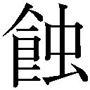

| 奇械仕掛けのブラッドハウンド (ガガガ文庫) | |
| ついへいじりう | |
| (2014) | |
小学館ｅＢｏｏｋｓ
奇械仕掛けのブラッドハウンド
ついへいじりう
イラスト マルイノ

血の海の中心で立ち尽くす少年は、引きつった笑いが漏れるのを抑えられなかった。
パーカーのフードを目深に被った彼の視界は、目を覆いたくなるような紅に包まれている。
まるで狂い咲く花のようだ。辛うじて残された理性の断片が、そんな場違いな感想を頭の内側で吐いている。
果たして何人の人間を、どこまで徹底的に破壊すれば、こんな惨状が出来上がるのか。
ごく一般的な木造一軒家の二階に位置する寝室は、飛散した血と、内臓と、皮膚と、その他のナニカによってくまなく汚染されていた。天井から吊り下がった蛍光灯の白い光は、その凄惨な景観を照らし出している。
そして、少年の背後──寝室の出入り口と廊下の境の床には、この場で少年を除いて唯一ヒトの原型を保ったままの少女が、長い黒髪を四方に広げて倒れ伏していた。
「───、ハァ」
肩を震わせる少年の右手からは、血が止めどなく れ出していた。秒針の音と重なるようにして、紅い雫がぼたり、ぼたりと滴り落ちている。
れ出していた。秒針の音と重なるようにして、紅い雫がぼたり、ぼたりと滴り落ちている。
彼の右手からは、本来あるべき〝形〟が欠けていた。
その小指が──付け根から丸ごと、失われているのである。
「ハ───」
口の周りを自らの血で汚した少年が、荒い息を吐く。
その負傷も、傷口から押し寄せる激痛すらも意に介すことなく、少年はある一点だけをじっと凝視していた。
彼の足元には、一本の〝指〟が転がっていた。
しかし、断面に当たる部分は骨も肉も覗いておらず、綺麗な肌色に覆われている。
血溜まりに沈んだそれを、少年は無事な左手でそっと拾い上げ、慈しむように抱きしめた。
あまりに、突拍子もない話ではあるが。
──潰せ──
その〝指〟はどういうわけか、自分に対して囁きかけてくるのだ。
取り返しのつかない罪を犯した少年を──優しく、導くかのように。
あえて何かに喩えるのなら、人工物でできた樹海だ。
薄暗い室内の壁を埋め尽くす無数の複製画。
カウンターに並んだブリキ玩具やフィギュアの群れ。無数の言語がひしめく便箋がべたべたと留められたコルクボード。
ゆうに天井まで丈のある、配水管じみた巨大なサボテン。無造作に積み上げられた古本や同人誌の数々に、紅茶葉やコーヒー豆の び付いた缶。
び付いた缶。
うずたかく積まれた同人誌に、今にも中身が突き破ってれてきそうなダンボールの山。
型遅れのノーパソに、埃をかぶった壊れかけの電子機器──エトセトラ、エトセトラ。
とにかく雑多な瓦礫でれかえっているくせに、テーブルに立てられた唯一の光源である懐中電灯の心許ない光に照らし出された事務所は、白黒映画のように精彩がない。
「......あづぅ」
時刻は午後九時。掃き溜めじみた六メートル四方の応接間に、爛れたゾンビの呻きが漂う。言うまでもなく自分の喉かられた苦悶である。
「蒸し上がるのが先か、飢え死ぬのが先か......どちらにせよ、死体はろくなもんじゃねぇんだろうな」
ソファに横たわり、干上がった喉から当て所のない独り言を搾り出す。
あわや廃屋といった風情の雑居ビルは換気も最悪で、真夏の熱気が室内に充満し、今や天然のサウナと化している。
とどめに四日前、かねてより調子の思わしくなかった屋外の変電設備がついに昇天召された。空調はおろか、冷蔵庫や照明さえ使用不能という有様である。
ビルの持ち主には修理を依頼してあるものの、改善される気配は一向になし。一応、業者が修理には来ていたようだが、俺以外ろくに住人もいないオンボロ物件なもんだから手を抜かれたのかもしれない。
「クソ。電気の通ってない建物なんざ、ただの死体だろ死体......」
それこそ自分自身が変死体一歩手前という状況下で、独り言を聞く他人の姿なんざどこにもない。はだけた胸元をコピー用紙の束であおぐが、焼け石に水だ。
おまけに──といってはなんだが、依頼人がまったく訪れないのも常である。
おかげでこの数日間、仕事にも息抜きのアニメ鑑賞にも打ち込むことができず、せっかくの夏休みをこの事務所で無為に過ごしている。二次元に生きると決めた身としては死活問題だ。
「......腹減った」
胃のねじれるような空腹感が、身を包む虚脱感をいっそう重くする。買い置きのインスタント食品は今日の朝で底をついたし、電気の止まった冷蔵庫の中身に至っては、もはや確かめる気概すら湧いてこない。
ナメクジが うような動作でどうにか上半身を起こす。
うような動作でどうにか上半身を起こす。
......仕方ない。スーパーもコンビニもここからは距離があるが、背に腹はかえられない。いい加減、食うもん食わないと本気で命に関わる。おまけに懐中電灯の乾電池も切れそうだし。停電復旧の目処が立たない今、光源まで失くなったら空腹の前に心細さで死にそうだ。
というわけで、目眩と格闘しつつ立ち上がり、階段の踊り場に繫がるドアを押し開けた。
「わっ！ びっくりしました」
薄暗い玄関先に、なぜかメイドが立っていた。
まるで夢のような展開だ。ただし二次元に限る。
黒白を基調としたクラシカルなエプロンドレスに身を包んだそいつは、黒目がちの瞳でじっとこちらを見つめてくる。頭の後ろでふたつに編んだ髪が、仔犬のしっぽのようにぴょこぴょこと揺れていた。......状況に頭がついていかない。
「えぇと......来ちゃったっ」
てへっ、と小首を傾げて舌を出すメイドだが、どうして三次元の分際で俺の彼女面してんの？
「──って、おまえ」
その、知性の削りカスも感じられない能天気な声を耳にして、ようやく合点がいった。両目を擦って霞む視界をクリアにし、目の前のメイドもどきを睨む。
「......ヒトんちの玄関でなにしてんの、巻島」
「ちゃっす、お疲れっす芥せーんぱい！」
巻島舞奈は悪戯っぽく片目を閉じると、世界中の戦争とか病気とか悲劇とかそういう負のアレコレを一撃で消し飛ばしそうな、満面の笑顔で敬礼した。仔犬を思わせる溌剌とした瞳がこちらを見つめてくる。
俺のひとつ年下、同じ高校に通う二年生の女子生徒。
「近頃ぜんぜんお店に顔見せないし、携帯も電源オフっぱなしですし......一人暮らしの知り合いが音信不通になったら、そりゃ心配だってします。心配すぎて飛んできちゃいました」
童顔を膨らませて巻島がいう。よくよく見れば、彼女が身につけているのはバイト先の制服だ。俺の気を引くためなのかなんなのか、こいつは着替えもせずに天下の往来を闊歩してきたらしい。きっと馬鹿なんだと思う。
「先輩こそ瀕死のゾンビみたいな顔してますけど。こんな夜中にどこ行くんですー？」
「死んでないゾンビがいるのかよ。......メシだよ、メシ食いに行くの。帰れ帰れ」
「ふんだ、芥先輩は相変わらずツレないです。......あーあー残念だなー。こーんなかわいいメイドさんが、せっかく美味しい料理をデリバリーしに来たのになー」
「......ん？」
わざとらしく唇を尖らせる巻島の手には、なにやらこちらの興味を引く白い包みが。
そういえば、さっきからちょいちょいこちらの食欲をそそる匂いが──
「うちの店長特製、シュニッツェルにライ麦パーン！ ......あ、いえ、いいっす。あたしがテイクアウトして美味しく頂きますので。それでは先輩、おやすみなさーい」
「おまえせっかく来たんだからちょっと上がって行けよ」
しょんぼりと去っていく巻島の肩を、俺は摑んで引き止めるのだった。
久方ぶりのまともな料理は、舌が痺れるほど美味かった。化学調味料に侵されきった躰に優しく染みわたる多幸感に、思わずむせび泣きそうになる。
「......ねぇ先輩？ つかぬことを訊きますけど、どうして事務所真っ暗なんです？」
卓上の懐中電灯の光の下、エプロンドレスのままソファに寝転がってマンガを読んでいた巻島が、今さらのように訊ねてくる。全世界のメイドに喧嘩を売るような醜態を晒すな。
「停電。四日前から電気通ってねえの」
「ありゃりゃ。どうりで蒸し暑いと思いましたよ......。あ、喉乾いたので冷蔵庫から飲み物頂いていいです？」
もうつっこむのも面倒なので、温かいシュニッツェルに舌鼓を打ちつつ手振りで許可した。
「やったー」と足取りも軽くキッチンへ直行するアホの子・巻島。
数秒後。さもありなん、甲高い悲鳴が建物を揺るがす勢いでこだました。
「せせせせせ先輩！ 冷蔵庫！ 冷蔵庫の中が本編クリア後の裏ダンジョン的な魔窟にっ！」
涙目で逃げ帰ってくる巻島。そりゃこの猛暑の中、四日間も常温で放置していたんだから、扉の中は見るも無惨な有様だったろう。
「もうー......先輩はやることがいちいち意地悪です」
自らの 闊さを棚に上げてぼやきつつ、ぷちぷちと着衣のボタンを外し始める巻島。
闊さを棚に上げてぼやきつつ、ぷちぷちと着衣のボタンを外し始める巻島。
いやいや、なに自然に俺の前で着替え始めてんの？
「......おまえさ、それ嫌がらせ？」
「いえ。だって向こう、灯りなくて怖いじゃないですか」
全身全霊のメンチを切る俺に見せつけるように、はだけた白い胸元から、ない谷間を強調しつつ、薄暗い室内でセクシーポーズを決める巻島。いらないイベントＣＧが出た。
「あれあれ。どうしたんですー、じろじろ見ちゃって？ いっつも二次元の女の子にお熱なクセに、ホントは巻島のナイスばでーに興味津々ですかぁ？」
「いや、道端で立ちションしてるオッサンとか見かけると否応なく視線が向くだろ。それと同じ原理だと思う」
「喩えがひどすぎる......」
放尿するオッサンと同列扱いされた女子高生は、本気で落ち込みつつ、のそのそと着替えを続けている。いいから向こう行け。
「ってか、もう帰んの？ 珍しいな」
一度遊びにきたら最後、昼夜問わず最低半日は平気で居座る巻島にしては、やけに引き際が良い。
まして今は夏期休暇の真っ最中である。このまま泊まっていくもんだと思っていた。
「ええ、ここ最近物騒ですし。自らの危険も顧みず駆けつけた健気な後輩に、先輩はもっと感謝すべきなのです」
「物騒って──なんかあったの」
ライ麦パンを口に放り込みながら訊ねると、学校の制服に袖を通していた巻島（今日は部活があったらしい）が、呆れきった半眼をこちらに向けてきた。
「......先輩ひょっとしなくても、最近ニュースとか見てないでしょ」
「だからテレビも携帯も使えなかったんだっつの。うち新聞とってねえし」
「あ、そうでした」と巻島が納得した顔をする。
ここ数日テレビも携帯も使用不能だったので、すっかり俗世の事情に疎くなってしまった。
「えぇとですね、とにかくめっちゃヤバいんですって。なんていったかな......ん～」
半裸のままこめかみに手を当てて考え込む巻島。いいから今はとりあえず、その胸部のしょぼいでっぱりをとっととしまえ。
「──そう！ かいさつ事件！」
巻島がぽんと元気よく両手を打って声を上げた。......改札事件？
「潰して殺すって書いてカイサツです。今、めっちゃ騒がれてますよ」
「へぇ。その胸も潰されたのか？」
「うっさいです！ ほっといてくださいよ！」
潰殺、ね。あまりに物々しい惹句にちょっぴり興味が湧いたので、巻島のおしゃべりに付き合ってみることにした。俺の興味を引くことに見事成功した巻島は、我が意を得たりと満面の笑みを浮かべる。依然変わらず半裸のまま。
「それがですねぇ──」
三日前、八月五日。この街──瀬科市郊外のとある一軒家から、三体の変死体が発見されたという。死亡推定時刻は前日の二〇時から翌二時頃。この夏の猛暑によって遺体は急速に傷み、放たれる異臭に気付いたお隣さんの通報によって事が発覚したらしい。
「被害者の皆さん、なんと全身ペシャンコのおせんべいになっていたらしいのです」
聞けば、犠牲者の躰は全身念入りに潰し尽くされ、原形をまったく留めていなかったらしい。そうして損壊された遺体は、三人仲良く寝室の壁に並べて張り付けられていた──なるほど、それで『潰殺』か。どう考えても正気じゃねえ。
「そんなもん、いったいどうやって」
「凶器も不明らしいです。専門家はもう、人間業じゃねーって感じで舌を巻いてます」
人間の躰を全身骨ごと、それも一晩に三人分も、ご近所さんに気付かれずに粉砕、か。
なんとも豪快な話だ。そのセンセーショナルっぷりはバラバラ殺人どころの騒ぎじゃない。
「しかもその被害者一家って、うちの高校の生徒の家族なんですよ」
都市伝説じみた怪事件が、その一言でにわかに現実味を帯びた。
「は、マジ？」
「あたしと同じ学年の女の子です。......別のクラスだったので、関わりはなかったんですけど」
......少しだけ、気になる。あとでネカフェにでも行って詳しく調べてみようか。
「あと、これはただのネットの なんですが......」
なんですが......」
眉を潜める俺に、巻島は声を一段低くして囁くようにいう。
「現場には遺体のほかに、誰かの躰の一部が残されてたらしいんです」
「躰の一部？」
相 を返すと、巻島は話す声音におどろおどろしさを滲ませながら、指切りをするかのように、右手の小指を立ててこちらに突き出してきた。
を返すと、巻島は話す声音におどろおどろしさを滲ませながら、指切りをするかのように、右手の小指を立ててこちらに突き出してきた。
「指です。切断された右手の小指が被害者宅に落ちていたって」
「────」
瞬間、古傷の下で脈打っていた心臓が、どくんと不快な軋みを立てた。
......まさか。
指。それだけ聞けばごくありふれた、しかし今の俺にとっては身震いすら覚えるその一文字。
ごく一部の人間を除いて、その存在すら知られていない──それはヒトという肉体を媒介にし、それぞれに設定された特定の機能を付加する一種のサブプロセッサー。
俺たちが回収を進めている、指の形をした禁忌の異物──
「ふぇ？ 先輩、何かいいました？」
凍り付く俺のコトなどお構いなしに、巻島は身振り手振りを交えながら喋り続ける。
「それで、どうやら男の人の指らしいんですけど、被害者の誰ともＤＮＡが一致しないみたいで、それがまたひそかな波乱を呼んでるというワケなのです！ どじゃーん！」
「......へえ」
動揺を押し隠し、どうにか頷きを返す。
しかもですね、と巻島が眉根を寄せて話を続ける。まだなにかあるのか。
「最初の事件から翌日、翌々日と、なんと二日連続で、市内で似たような死体が見つかっているんです。これで晴れて連続殺人事件に格上げというワケです。ネット界隈じゃ〝潰殺魔〟なんてあだ名までついてるらしくて」
話していて気分が悪くなったのか、常時脳内お日さまマークな巻島の表情からも、さすがに精彩がなくなってきている。
「きっと頭のおかしな変質者の仕業です。で・す・か・ら！ か弱い乙女こと巻島は、自衛を怠らぬ義務があるのです！」
そんな物騒な中、こいつはわざわざ俺のために夕飯を届けに来てくれたのか......。
巻島ってただの馬鹿に見えて、結構他人に気を遣える奴なんだよなぁ。こいつの思う壺とは知りつつも、ついつい甘やかしたくなってしまう。
「ところで先輩、これからちょっと駅前のゲーセン行きません？ こないだ新登場したプライズで、ちょっとばかり気になるのがあってですね......」
「感謝の気持ちを返せ！」
やっぱりただの馬鹿だった。五秒前の自分の発言を五時間ほど反芻してから出直してほしい。
「えー。送りがてら寄るくらいいいじゃないですかー。先輩ゲーム上手だし。こないだとってもらったコレ、超お気に入りなんですから」
うへへ、としまりのない笑顔を浮かべた巻島が、左腕を目線の高さに掲げてみせる。華奢な手首に、細い鎖でできた安っぽいブレスレットが輝いている。
以前、無理やり付き合わされたゲーセンで巻島にねだられて獲得してやった景品だ。
「はいはいまた今度な。つーかおまえ、マジで気を付けろよな。いくらなんでも不用心すぎ」
「あれ、もしかして本気で心配してくれてます？」
「ああ。俺が犯人だったら真っ先におまえを狙うよ。なんたって馬鹿だし」
客観的な意見をびしっと告げてやる。いつものこいつならキレるかそろそろイジける頃合いだが、本日の巻島はひと味違った。
不敵な笑みを浮かべ、びしっとこちらを指さしてくる。
「ふふふ。その点、情弱な先輩と違ってあたしは抜かりがないのです。ほらほら」
俺の眼前に、巻島が手に持ったなにかを印籠のように突き付けてくる。スティック状のちっぽけなケースには、真っ赤なラベルが巻かれていた。
「なにそれ。リップクリーム？」
にしては彩色がちょっと派手すぎる。口紅......でもないよな。
「え？ 先輩、もしかしてあたしのリップ欲しいんですか？」
クソ、予想外の方向に話題が飛びやがった。
「なにがもしかしてなのかまったくわからないけど、頼まれてもいらねえ......」
軽蔑の念に満ちた俺の視線など意にも介さず、巻島は恥じらう乙女のごとく両手を頰に添え、むじむじと腰をくねらせている。
「でも今あたしぃ、新品未開封しか持ち合わせがないですしぃ......あ、そうだ！ これからうちに寄ってくれれば、あたしの使いかけのやつ恵んであげますよ！」
「だからどうしてそんな汚物を執拗にすすめてくるの？」
微塵もいらねえよ、そんな産業廃棄物。
「汚物はひどくないですか!? 現役女子高生の使いかけリップとかむしろご褒美ですし！」
「そんなフェティッシュな願望はねえよ......」
「じゃあじゃあ先輩はぁ、もしも好きなアニメの女の子と、リップを介して間接キスできるとしたら嬉しくないんですか？」
「え？ それは普通にご褒美だけど？」
ペロペロペロペロ舐め回すけど。
巻島が生ゴミを見る目で俺を見ていた。
「じゃあ、あたしの使いかけだって問題ないじゃないですかぁ！ こーんな美少女の唇を舐め放題みたいなもんですよ、舐め放題！ もっと興奮してくださーい！」
「ああ、本当におまえが潰されればよかったのにな......」
こうも自信満々に自身のことを美少女と呼んで憚らない女を俺は初めて見た。なんてあつかましい三次元だろう。美少女に奥行きという概念があってたまるか。
「話が脱線してるっつうの。で結局、おまえが見せびらかしてきたそれはなに？」
「あ、そんな話もありましたね。てへへ」
懐中電灯でぶん殴ったらさすがに死ぬかな？
テーブルの下で拳を震わせる俺などどこ吹く風といった様子で、ようやく当初の目的を思い出したらしい巻島が、ケースのキャップをきゅぽんと外した。スティックの先端から小さなノズルが顔を出す。
「名付けて汚物は消毒スプレー！ どんな世紀末の暴漢だろうと、指先ひとつでダウンです！」
......ああ、トウガラシスプレーか。暴漢の顔に、カプサイシンを主成分とするＯＣガスを吹き付け、強烈な刺激によって相手の視界や呼吸を封じる護身用グッズだ。
「最近物騒だからって、こないだお父さんが買ってくれたんです。ふふん、羨ましいでしょう？」
えへっと純朴な笑顔を浮かべ、真っ赤なトウガラシスプレーを見せびらかしてくる女子高生。どんな自慢だ。
──さて。好奇心も満たされたことだし、調べなくちゃならないこともできた。このアホの子は捨て置いて、とっとと行動に移らないと。
「うんそうね。ほんと羨ましい。じゃあまた今度な、お疲れ」
「ファイヤッ！」
「ひぎぃ！」
巻島の掛け声と共に噴射された真紅の液体が、俺の顔面を直撃していた。殺虫剤を食らったゴキブリのようにひっくり返り、声なき悲鳴を上げつつ床を転げ回る。
この女、突然なにしてくれちゃってんの？
「あ、すいません。ほんとに出ちゃった......」
心底申し訳なさそうに謝ってくる巻島だが、ファイヤッ！ って力強く叫んでたよな。でも今はそんなことはどうでもよくてマジで痛い痛い痛い痛い痛い痛い！ 目が、目が灼ける！
「すげー。効果テキメンですよ先輩！ こんな危険なシロモノが大手量販店の陳列棚でゴロゴロ販売されてるとか、なんか笑えますねー」
ああ！ コイツみてえな後先考えねえ馬鹿がこの世にゃゴロゴロいるんだから規制されるべきだよな！ マジで！
そんな惨劇から一時間後、午後一〇時過ぎ。
「そういえば、今年の春に先輩と初めて会って、もう四か月も経つんですねー」
テーブルに突っ伏して休んでいると、俺に付き添っていた巻島が、うちわをぱたぱたと扇ぎながら出し抜けに呟いた。
「......んだよ、いきなり。感慨に浸るようなことじゃねえだろが」
テーブルに敷いた濡れ布巾からしぶしぶ顔を上げる。ようやく正常な視界を取り戻し始めた目をじっとすがめ、隣に座る後輩を睨みつけた。
「いえいえ。当時はこうしてお近付きになれるなんて、夢にも思ってなかったんですよぅ」
俺の顔面に生温い風を送りながら、想い出の海にうっとりと浸る巻島。
「思い返せば今年の春、桜散る出会いの季節──三年生のクラスに彗星のごとく転入してきて、いきなり全教科で成績一位かっさらって、それがすべての女の子が羨む顔のパーツをすべて持った美形さんで、しかもおまけに実は男で名前が『芥宗佑』って、あたしみたいな一凡人としては、それもうどんなマンガですかっていう大事件だったんですからっ！」
当時を思い出し、握り拳を作ってひとり感極まっている巻島である。
......数か月前。この能天気な後輩との馴れ初めを思い出す。
〝うぇっ!? おーいみんな、ちょっとちょっとこっち来て！ 例の転入生の先輩、男子トイレでおしっこしてるー！ ほらほら見て見て見てってば！ うわー、あんなキレーな人が男子トイレで立ちションって、なんかすっげー背徳てぶへぇっ!?〟
用をたし終えた俺は黙ったまま、傍にあったポリバケツになみなみと水を満たし、排尿中に乱入してきた見知らぬ女に向かっておもいきりぶち撒けた。それが巻島でした。おしまい。
「それにしてもぉ......」
巻島は首を回して荒れ放題の応接間を見渡した。そして言いにくそうに、ぼそりと、
「──相変わらず、閑古鳥鳴いちゃってる感じですねぇ。肝心の探偵稼業の方は？」
「てめ......」と口をつきかけた反駁をぐっと抑える。事実なので反論のしようがない。
非常に馬鹿げたことではあるが、この廃屋一歩手前の一室はれっきとした探偵事務所であり──この俺こそが、事務所を取り仕切る所長なのであった、まる。
「あの、正直そろそろキツくないですか？ どういう事情でこんなことしてるのか知りませんけど──そもそも高校生と探偵って、どんな二足のワラジだよって感じです。学校だって休みがちでしたし......。このままじゃ卒業できませんよ？」
日常会話の中で顔を出すにはどこか間の抜けた『探偵』という単語がうそ寒く響く。
「お黙り。無茶は百も承知だっつの。わかってやってんだから、人のやり方に口出すな野暮助」
「んもー、またそんなこといって。亭主関白なんて流行るご時世じゃないですよぅ？」
「誰が亭主だ、誰が」
と、そこで巻島が頰を赤らめながら身悶えし始めた。
「まあ先輩の亭主タンパクでしたら、この不肖巻島が毎晩残さずご馳走さましますけど」
「おまえはもう精子からやり直せよ！」
いい加減うんざりする。何度目だろうな、この手のやりとり。相変わらずおせっかいな奴。
「ま、先輩が充実してるんでしたら別にいいですケドー」
お説教はまだまだ続くと思って身構えていたのだが、巻島は予想に反して、それきり話題を打ち切ってしまった。
「......やけに引き際いいじゃん」
「だって先輩が留年してくれれば晴れてあたしと同学年なので、一緒に授業受けたりお弁当食べたり、ドキドキスクールライフで毎日がエブリディですから。それよりこれ、全巻借りてっていいです？」
さっきまで読み耽っていたマンガの単行本を手に取りながら、無邪気に肩を寄せてくる。
基本的におせっかい焼きで心配性な奴だが、こういう切り替えの早さは美徳のひとつだと思う。
元々の性格に加えて、個人的な事情からプライベートではまともな交友関係をほとんど持たない俺にとって、いくら突き放そうとも懲りずにくっついて来る巻島の存在は、いろんな意味で貴重なのだ。基本的に鬱陶しいけど、いないといないで物足りない、みたいな。
「はいよ。その代わり掃除のひとつでもしてから帰れってんだ」
「いえ、この混沌はあたしの手には負えません」
真顔で断言しやがった。うちの事務所はゴミ集積場か何かか。
「......ってゆーか、そういう雑務ってふつーは助手さんに任せるものじゃないんですか？」
やぶから棒に、巻島が耳に痛い話題を口にした。
「たしかお一人いらっしゃるんでしたよね？ あたし一回も会ったことないですけど」
「──居ていないようなもんだ。もうひと月近く顔見てねぇし」
応答する声音が無意識にささくれ立つ。
「あの。それって世間一般的にいう、バックレというやつなのでは......」
「知るもんか」
真珠色の髪に、蝋のような白い肌。──血のように紅い炎を右眼に灯した女。
ひと月前、あいつは事務所を出て行った。別離の原因は、一言でいえば方針の違いだ。
あいつは俺を〝甘い〟と否定し、俺はあいつを〝人殺し〟だとなじった。
で、それきりである。
「どこほっつき歩いてんのか知らねえけど、こっちはせいせいするね」
「まるで痴話喧嘩ですねぇ。......って、ん？ ち、痴話喧嘩......。えっとあの先輩？ 今まであえて訊かなかったんですけど、その助手さんってまさか女の子じゃありません、よ......ね？」
ぎこちない笑顔で問い質してくる巻島から視線を外し、勢いよく立ち上がった。
「はいはい、もうこの話やめやめ。オラ、送ってくからとっとと帰れ」
さて。いい加減、このお人好しを帰してやらないと。
こいつはゲームも漫画もそこそこいけるクチで、なんだかんだ大切な暇潰しの相手なのだ。今をときめく殺人鬼に襲われたりでもしたら、それなりに困るのだ。
「え、ちょっとまってまって！ もしかして図星!? あたしそんなん聞いてませんよ!? ちょっと先輩、そこんとこひとつ詳しく！ ちょっと待ってくださいってばーっ！」
きーきーやかましい巻島の声を背に受けながら、玄関に向かって歩き出した。
その後、巻島を無事自宅まで送り届け、ついでにコンビニで食料と乾電池を購入。駅前のネカフェに行こうとしたが、会員証を忘れたことに気付いたので、いったん帰宅する。
目の前の我が家を、なんとなしに仰ぎ見る。スプレー塗料の落書きと、経年劣化による亀裂が乱舞する苔むした外壁。静まり返った路地の一角、墓標のようにひっそりと建っているのは、枯れた大木じみた様相の雑居ビルだ。当然、エレベーターなどとうの昔に稼働停止している。人ひとりがようやく通れる横幅の階段を四階まで上っていく。
『神楽ヰ探偵事務所』
扉に取り付けられたステンレスのプレート──そこに彫り込まれている明朝体が、肩で息をする俺を出迎えた。
俺──芥宗佑は、見ての通り、ゆえあって探偵の真似事なんぞをしていたりする。
もっとも。この探偵業が事業として成立しているのかと訊かれれば、答えは芳しいものじゃない。まともな依頼なんて一か月に一～二回来れば御の字で、その内訳も失踪したペットの捜索や、結果のわかりきった素行調査くらいのものだ。報酬なんざ、野口さん四～五人分が関の山で、それだって依頼を折よく完遂できた場合のみ。
そもそもアシとなる所員が絶望的に不足している超零細事務所では、まともな報酬を伴う依頼をこなすこと自体がどだい不可能で、経営が立ち行かなくなるのは自明の理なのだ。こんな にも棒にもかからない探偵ごっこにうつつを抜かしているのだから、そりゃ後輩にだって同情されるってもんである。社会の闇を駆ける高校生探偵。笑えない。
にも棒にもかからない探偵ごっこにうつつを抜かしているのだから、そりゃ後輩にだって同情されるってもんである。社会の闇を駆ける高校生探偵。笑えない。
......一応、不定期に入ってくる大きな仕事さえこなせば、お偉い様の方からまとまった報酬が入ってくるので、その貯蓄を切り崩しながらどうにか糊口をしのいでいる状態である。
扉を開けたとたん、室内にこもっていた熱気がむっと頰に押し寄せてきた。
ダメ元で照明のスイッチを入れてみる。
「──お？」
ぢぢぢ、という異音と共に、安物の蛍光管が数日ぶりの光を灯していた。
修理がようやく終わったらしい。
ひとまず冷房のスイッチをオンにし、じっとりと汗ばんだ躰を埃臭いソファに預けた。びたスプリングがぎしん、と頼りない軋みを上げる。
ここ──老朽化の激しく進んだ雑居ビルの四階が、現在事務所に使用しているフロアである。家賃が格安なのは助かるのだが、いかんせん建物自体が古く、加えて以前の家主が残していったと思しき家具や設備（ガラクタ含む）が完全放置されているという有様で、居住空間としての利便性はなきに等しい。
さて。床に埋もれていたノートＰＣを掘り出して電源を入れ、さっそく検索をかける。
『瀬科市・連続殺人』──目当ての記事はトップニュースとして取り上げられていた。
動画を再生。すました顔のニュースキャスターが淡々と原稿を読み上げる。
『Ｓ県瀬科市で一家三人が殺害され、一人が行方不明となっている事件の続報です。現在も懸命な捜査が続けられておりますが、未だ犯人には り着けていません。凄惨な殺害方法や、金品を奪われた形跡はないことから──』
り着けていません。凄惨な殺害方法や、金品を奪われた形跡はないことから──』
三日前──この街の閑静な住宅街に建つ一軒家で、三体の変死体が発見された。
被害者は世帯主の栂浩二。彼の妻・栂三咲。彼女の弟・市冬竜也。
いずれの死体も原形を留めぬほど、全身念入りに押し潰されていたという。
『また、先の事件から続けて発生している二件の犯行についても、栂さん一家を殺害した犯人が関わっているとの見方が強いようです』
八月六日、七日と立て続けに発見されたふたりの犠牲者もまた、巻島が言っていたように頭部を跡形もなく潰されていたようだ。現場はさぞや酷い有様だっただろう。
ちなみに、その二名の犠牲者と栂家との間に、今のところ関係性は見られないという。
「──って、ちょっと待て」
ファンの回転音をかき鳴らしているＰＣを両手で摑み、思わず呟く。
「栂、って──」
初日の被害者である「栂」という姓──その苗字、被害者が同じ高校の生徒の家族であること──焦燥が背筋を走り、鼓動が早まる。
『なお瀬科署は、事件のあったと思われる八月四日から行方がわからなくなっている栂さん夫妻の長女についても、顔写真を公開し情報提供を呼びかけました』
間もなく失踪人の顔写真がディスプレイに表示された。絶句する。
『行方不明になっているのは、瀬科市に住む高校二年の栂貴織さんです。貴織さんは八月四日二〇時過ぎにアルバイト先を出たきり、行方が──』
キャスターの声など右から左へだった。身を乗り出して写真を凝視する。
目を疑う。よく見知った人物の名前と顔が、液晶ディスプレイに映っていた。
「──栂、貴織」
どこか空虚な瞳が、画面の向こうからこちらを見つめ返している。
予想外の事態に、図らずも言葉を失っていた──その時だった。
こつ、こつ、こつ。か細いノックの音がフロアにこだましていた。
......来客？ 恐る恐る入り口の方向を窺う。なんか通販頼んでたっけ？ 時計を見れば、時刻はすでに〇時を回っている。こんな夜中に宅配便なんざ来るわけがない。
どちら様と大声で呼びかけてみるが、返答はなし。そっとソファから立ち上がる。
鍵を開けるか逡巡したが、依頼人の可能性もある、と思い直した。なにかに衝き動かされるように、立て付けの悪いドアを押し開いた。びたカウベルの音が短く鳴る。
「────」
窮屈な玄関口に、ひとりの女の子が立っていた。
俺や巻島と同じ高校の制服を身につけている。背中まで届く滑らかな濡羽色の髪が、室内の灯りを受けて光の輪を作っていた。前髪に隠れた表情は、怯えと不安で暗澹と沈んでいる。
「芥、先輩......」
消え入りそうな声が、俺の名前を小さく発音する。
伏し目がちの瞳が、すがるようにこちらを見つめてくる。精緻なガラス細工めいた儚さと冷たさを同時に孕んだ面立ちは、今しがたテレビで目の当たりにしたものと寸分違わない。
──栂貴織。連続潰殺事件の皮切りとなった栂さん一家殺害事件──その渦中で行方がわからなくなっていたはずの少女が、目の前に立っていた。
「どうして、おまえ──って、おい！」
とたん、糸が切れたように脱力した貴織の躰が、こちらに向かって倒れ込んできた。とっさに受け止めた躰は噓のように軽い。大丈夫か、と叫びかけ──思わず息を呑んだ。
「なんだ、これ」
長い髪に隠れていた彼女のうなじと襟元には、乾いた血の痕がこびり付いていた。
出血の源は、後頭部に負った裂傷のようだった。傷口は乾いており、すでに血も止まっている。幸いさほど深い傷ではなかったようなので、ひとまず簡単な応急処置だけを施した。
その後、近場の自販機でふたり分の飲み物を購入して事務所に戻る。テーブルに積層するゴミを払い落として即席のスペースをこしらえ、貴織の対面に腰掛けた。
「............」
頭に真新しい包帯を巻いた彼女は、膝の前で両手を合わせた姿勢のまま、借りてきた猫のように縮こまっていた。さっき突然倒れたのは、頭部の怪我よりも疲労が原因らしい。鎮痛剤を服用した今は、だいぶ体調も落ち着いているようだ。
「悪いな。きたねぇとこで」
缶ジュースをすすりつつ、心にもない謝罪を口にすると、貴織は慌てた様子で首を振った。
「そ、そんなこと......。謝らなくちゃいけないのは、こんな非常識な時間に押し掛けたわたしの方です......」
消え入りそうな声でそこまで呟き、再び顔を伏せてしまう。そのおどおどとした物腰は、何度顔を合わせようと直る気配がない。
「久しぶり──ってほどでもねえか。夏休み前にも会ってるし」
「は、はい......。芥先輩も、お元気そうで......」
相好を崩す俺に、彼女は顔を伏せたまま月並みな挨拶を返してくる。
「以前、芥先輩がここで探偵さんをしていると、お話しされていましたよね......それを思い出して、押し掛けてしまいました」
ごめんなさいと、小さく呟き、貴織は再び縮こまる。
彼女──栂貴織は巻島と同じく、ひとつ下の後輩である。
もっとも、俺も貴織も部活動には所属していないので、顔を合わせるのはもっぱら放課後の図書室だった。
特に気が合ったわけでも、会話が弾んだわけでもない。俺が時おり図書室に足を運べば、大抵は彼女がひとりきりで本を読んでいて、二三言交わした後は、お互い気ままに静かな放課後を過ごしていた。
そもそも口数が少ないうえに表情にも乏しい奴で、自分がどう思われているのかイマイチ測りかねているのだが──彼女自身が気に入ったらしい本を、稀にではあるがおずおずと勧めてきたりするあたり、少なくとも嫌われてはいなかった、とは思う。
行方不明になっている事件被害者の家族がうちの高校の生徒だということは、すでに巻島から聞いていたが──それがまさか知人だなんて、偶然にも程がある。
「ご覧の通り、零細も零細だけどな」
探偵さん、という滑稽な響きに、我が事ながら苦笑が漏れる。こんなみすぼらしい事務所に依頼を持ち込もうとする依頼人の気は常々知れないが、どうやら貴織もその手合いらしい。
「──で、まさか世間話しに来たわけでもないんだろ」
鋭く告げると、貴織はびくりと肩を震わせた。
「いったい今まで、どこでなにしてた」
薄い唇を引き結んだままの貴織に、俺は重ねて問いかけた。
自分以外の家族全員が殺されているという状況下で、彼女は警察にも駆け込まず、今日に至るまで行方をくらませ続けていたのだ。どう考えたって尋常な事態ではない。
本音をいえば、すぐにでも通報したいところではある。
が、普段以上に悄然と落ち込む彼女の様子を目の当たりにした今では、それも憚られる。
「おまえの家で、何があったんだ」
俺の詰問に、しかし貴織は静かに首を横に振った。
「あの日の記憶が、曖昧なんです。四日の夜......帰宅して家族と顔を合わせたところまでは覚えているんですけど──」
つまりその時点では、栂家の被害者たちはまだ生きていたわけだ。
「でも、突然頭が痛くなって、それで、意識が遠のいて──」
貴織の表情が悲痛に歪む。
「......次に目を醒ました時には、父も母も叔父も......もう」
......では、あの後頭部の怪我は、犯人によって負わされたものか。
異常な状況に、かける言葉も見つからず黙るほかなかった。
「先輩──」
と、両手を膝の前に合わせて腰掛けていた貴織が、意を決したように身を乗り出した。
「───人を、捜してほしいんです」
彼女は何の前触れもなく、そんな信じられない台詞をのたまっていた。
「......は？」
あまりにも唐突すぎる申し出に、思わず間の抜けた声が漏れる。訝しむ視線を返す俺の目を、貴織は真剣な瞳で見返してくる。彼女の言い間違いでも、俺の聞き間違いでもないらしい。
この状況でなにを悠長なこといってんだ。いや、そんなことより──
「もしかしなくてもおまえ、そいつを捜すために行方くらませてた？」
「──はい」
あまりの馬鹿さ加減に目眩がした。よくも今まで誰にも見つからなかったもんだ。
「お金もなくて、何をしていいのかもわからなくて。南区の廃屋の敷地で寝泊まりしていたんですけど、そこも今日になって見つかってしまったようで......それで」
ついに進退窮まってうちに駆け込んできたわけか。
それにしても、こんな夜中に突然、殺人事件の重要参考人が訪ねてきたかと思いきや、よりにもよって人捜しをしてくれときた。腹の底から溜め息がこぼれ出す。
「お願いします。早くしないと、きっと手遅れに──」
「手遅れ......？」
思わず訊き返すが、貴織の言葉はそれきり途切れてしまった。
俺はソファに深くもたれて息をついた。黙り込んでいる貴織を一瞥し、重く告げる。
「......おまえは警察行け。ここに居たって、俺はなんにもしてやれねえよ」
しかし彼女は首を小さく振って否定を返してくる。
「なんで。その人捜しにしたって、俺なんかより警察に頼んだ方が遥かに効率的だろ」
貴織は口を噤んで答えない。どう説得したものかと答えあぐねていると、彼女は気付いたように顔を上げた。すがる瞳を再びこちらに向け、焦燥を滲ませていう。
「あの、お金でしたらいつかお支払いします......ですから」
「舐めんな。そういう問題じゃねえ」
ジュースの残りを一気にあおり、的はずれな戯言を遮った。
ただでさえ精気に乏しい貴織の瞳が、みるみるうちに光を失っていく。
「......ごめんなさい。無理をいってしまって」
ようやく諦めたのか、貴織は瞼を固く閉じて深く項垂れた。
「先輩を巻き込んでいいことでは......ありませんでした」
ついぞ取り付く島を見せなかった俺に対し、貴織は恨みごとひとつこぼすこともなく静かに立ち上がった。うやうやしく頭を下げ、長い黒髪をひるがえして踵を返す。
「突然押し掛けてしまって、申し訳ありませんでした」
その足取りの潔さとは裏腹に、彼女の醒めた横顔はほの暗い悲愴感に染まっている。
「............」
後ろ髪を引かれるような抵抗感が、ちくりと胸を刺す。
連続潰殺事件と貴織の関わりについて、気になるところは確かにある。真相に繫がる手掛かりとなりうる貴織をこのまま送り出すのは気が引けるが──事件に足を突っ込むと決めた以上、俺の周囲には必然的に危険が伴うことになる。
すでに充分な被害を被っている貴織を巻き込むわけにはいかない。
「──失礼しました」
貴織がドアを開けて事務所を出て行った。カウベルの音がうそ寒く響き、足音が遠ざかっていく。
......自らを襲った事の重大さを理解できないほど、貴織は頭の悪い人間じゃない。
少なくとも俺に対して、貴織が自分から救いの手を求めてきたことなんてただの一度もなかった。そんなあいつが、真夜中に突然駆け込んできたあげく、わけのわからない無茶振りを叩き付けてくるなんて、あの謙虚さを知っている身からすれば信じられない異常事態だ。
「......あー、もう！」
ふつふつと湧き上がり続けていた苛立ちが、ついに頂点に達した。がばっとソファから立ち上がり、音を立ててドアを開け放つ。
階段の踊り場で身をすくませた貴織が、おそるおそるこちらに振り向いていた。
「ったく！ ......久々に顔見せたと思ったら、わけわかんねえ厄介事引っさげてきやがって」
「せ、──先輩？」
「ここ出ていっても、どうせ大人しく警察に駆け込む気なんてないんだろが」
生じた沈黙は肯定と同じだ。ここでこいつを捨て置けば、どう考えても芳しい結果にはならないだろう。......頼れる先輩の身としちゃ、あまり寝覚めのいい話じゃない。
「......期待すんなよ。人捜し以前に、こっちは優先して片付けなきゃならないことが──」
「か、構いません」
即答だった。こちらが喋り終えるのも待たず、貴織が階段を駆け上がって詰め寄ってくる。一縷の望みを得た黒目がちの瞳が、長い睫毛を震わせてこちらを覗き込んでいた。
「ありがとうございます......芥先輩」
温度に欠けた白い相貌に、ようやく喜びめいた感情が浮かび上がる。
「近い近い。......それに、いつまでもってわけにはいかないからな。せめて期限を設けて──」
あらかじめ釘を刺そうとする俺に、貴織は小さな子供のように何度も頷いてみせる。
「......で、おまえが捜してるそいつって、どこの誰？」
その頼みを引き受けるかどうかは置いておくとして、ひとまず訊ねてみることにする。貴織の言い振りだと、その捜し人が見つからない限り大人しく警察に行くつもりはなさそうだ。
「......斎賀鍵基、という方です。年はわたしと同じで、男の子で──あと、それと」
弱々しく掠れた声が、空調の稼働音と混ざり合う。途切れた言葉の続きを待つ。
「......あとは？」
低く問い質す俺に、貴織は心底申し訳なさそうな顔をおずおずこちらに向けた。
「それだけ......です」
よし、ふざけてる。
「アホか！ そんな簡単に人捜しができりゃな、俺はこんな荒んだ生活送ってねえよ！」
いくらなんでも情報が乏しすぎる。年二回の聖戦で、カタログもネットも無しにお目当てのサークルを探し出せと命じられているようなもんである。貴織があたふたと慌てる。
「......わたしが小さい頃、一緒に暮らしていた時期があったんです。でも八年前に離別してからは、もう足取りがわからなくて......」
八年前か。かなり時間が経っている。この街に居るのかだって怪しいものだ。
「一緒に暮らしてたって──じゃあ、おまえとの関係は？」
「遠い......親戚です」
返答までに一瞬の間が生じた。こいつ、何か隠してるな。
「......まあいいや。で、さっきの〝手遅れになる〟って、具体的にどういう意味だよ」
家族を皆殺しにされ、自身も怪我を負った貴織が、警察から身を隠してまで、その斎賀鍵基とやらを捜していた理由。
「父も、母も、叔父も──みんな、みんな殺されてしまいました」
どこか虚ろな瞳で机上を見据えながら、貴織は囁くようにいった。
「......ただの、悪い予感です。次に殺されてしまうのは、きっと──彼のような気がするから」
その後、いくつか気になっていた点を貴織から聞き出したあと、彼女を事務所に残してビルの外に出た。草木が伸び放題のまま放置された駐車場に立ち、放置された廃車のボンネットに腰を預ける。充電したばかりの携帯を取り出して着歴からコール。相手はすぐに応じた。
『芥か？ 肝心な時に電話も取れない無能な探偵もどきが、今さら何の用事だ』
開口一番、愛想も抑揚もない低い声音が耳を打つ。
「今日の夜中まで電力復旧しねえんで、携帯の充電すらできなかったんだっつの。だいたい、ビルの所有者はテメェだろうが。職務怠慢だっつの！」
剝き出しの二の腕にたかるやぶ蚊を掌で追い回しつつ、電話に向かってがなり立てる。
『肩書だけの権利者に多くを求めるな阿呆。食い扶持も満足に稼げない貧乏人に、格安で寝床を提供してやってるんだ、感謝こそされど、罵倒を受ける謂われなんてない』
どこまでも人を見下しきったその態度が、こちらの神経を逆撫でする。......するのだが、後半部分はまごうことなき真実なので、大人しく黙るほかない。
『言い訳はいらん。さっさと用件をいえ』
ちなみに電話の相手は、名を桐呀という。職業は、信じられないことに警視庁捜査一課所属の刑事。
既知の間柄で、目障りな疫病神であると同時に、貴重な情報源でもある。
ひとまず貴織がうちに訪れるまでの経緯を話して聞かせる。とはいっても大した内容ではないので、説明はものの三分で済んでしまった。
『ほう。栂貴織がね』
つまらなげに呟く声。世間では未だ失踪扱いとなっている被害者家族が見つかったというのに、応じる声には動揺も驚きも見られない。
『それだけか？ 他には。たとえば犯人の心当たりだ』
「さっき本人に問い質した。少なくとも栂貴織自身は、自分の家族が誰かに恨まれていた覚えなんてないとよ」
『ほう。誰の恨みも買わない清廉潔白な人間なんぞ、この世に存在するのかね』
くつくつと響く失笑には、こちらを責めるニュアンスがある。
「......何か言いたげだな」
『なに、貴様らのことだ。──今回の事件もとっくに真相を摑んでいるのかと、過ぎた期待を抱いていただけさね』
それどころか事件の存在にすら気付かず、探偵の真似事にうつつを抜かしていただけとはね、と皮肉もあらわに付け足される。
「買いかぶんな。たかが一般市民になにを期待してんだっての」
『一般市民、ね。まあ肝に銘じておくさ』
「んだよ」
含蓄のある物言いに表情をしかめていると、桐呀が唐突に話題を変えた。
『ときに芥。神楽ヰとはうまくやっているか？』
不意打ちに、思わず返答を詰まらせた。
『どうした？ 返事がないが』
もう一か月くらい帰ってきてねえよ──などとは、アレの保護監督を任された手前、口が裂けてもいえるはずがない。
「そんなことよりだ。今回の連続殺人......やっぱり指が絡んでやがんのか」
こちらの質問に、電話の主はくっと短い笑いを漏らした。
『十中八九そうさね。筋肉の鎧に守られた人間の躰は頑丈だ。それをたった一晩で、あそこまで徹底的に破壊するなど、生身の人間にはどだい不可能な芸当だ。あとで貴様のアドレス宛てに資料を送っておくが......老婆心から忠告しておいてやる。食事時には絶対に見るな』
今さらではあるが。公僕の立場に身を置くはずの桐呀が、絶賛失踪中である被害者家族の発見を本部に報告しようともせず、あまつさえ探偵もどきの一般市民に過ぎない俺に対して機密漏洩まで犯しているのには、もちろん然るべき理由がある。
──俺と桐呀は、数か月前から同じ〝モノ〟を追い続けている。
今の俺たちの関係は、ただその為だけに築かれた、互いに割り切った協定である。
「じゃあ──現場の栂家に、切断された指が残されてたってネットのもマジなんだな？」
『うむ。まったく、どこから情報が流出したんだかな。──もっとも、そっちは我々が求めているモノではなかったがね。正真正銘、なんの変哲もないただの小指だよ』
「肩すかしだな。で、誰の指だったわけ？」
『わからん。ＤＮＡ鑑定の結果はすでに出ている頃だろうが、その辺の情報はどのみち私の耳に入ってこないしな』
しれっと吐き捨てる桐呀。ちょっと待て。
「......どういうことだよ。おまえの所轄内で起きた事件だろが」
『今回のヤマは私の担当じゃない。数日前から別件で瀬科市を離れていてね、まだそちらに戻れる目処は立っていない』
「マジかよ......」
悪びれない物言いに、ただ目眩がした。
『所詮はお上の命令と規則でがんじがらめな公僕の身さ。あまり期待をしすぎるな』
桐呀の意趣返しを舌打ちで黙殺する。だからこいつ嫌いなんだよ。
『そういうわけで、今回の事件は貴様らに一任する。以後しばらく連絡もとれん。それでは期待しているよ、正義の味方の名探偵さん』
「てめえはまず、そのよく回るご大層な舌を──」
そこまで口にしかけ──それを目にした瞬間、言葉を失った。
「あれは」
温い夜風にさざめく駐車場の草木と、歪に立ち並ぶ廃墟。
その色濃い闇の中に溶け込むようにして──幽鬼じみた白い影が、俺の視界を確かによぎっていた。
『どうした？ なにか、』
通話を切り、影が消えた方角に目を凝らす。
そこにはすでに誰の姿もないが──もしも本物の幽霊でないのなら、あんな目立つ格好をした奴を他の誰かと見間違えるはずはない。
「あいつ」
ひとりごち、沈黙した携帯を握り締める。無意識に前へと進もうとする脚を、追ってどうすると自問する声が引き止める。
「あーもう......っ」
結局。ろくな指針もないまま、俺は消え去った影を追って駆け出していた。
濁った闇の底に沈んだジグザグの街並みは、荒れ廃れた墓地を彷彿とさせる。見るからに古めかしい建築物がずらりと立ち並ぶ景観には、しかし人の気配だけが欠けていた。
ここＳ県瀬科市は、街の中心部に位置する門間総合病院を境に、北区と南区に大きく分かれる。
近代化が進み人口が集中する北区に対し、ここ南区は、十数年ほど前に表沙汰になった公害問題によって地価が暴落して以来、昼夜問わず閑散としている。特にうちの事務所がある界隈などは、それなりに人はいるとはいえほとんどゴーストタウンのような有様である。
「あっちぃ......」
不快な熱帯夜だった。全身に滲む汗がじとりと背中を湿らせる。
もう一度、携帯に視線を落とす。立ち上げたＧＰＳ追跡アプリは、依然として何の反応も示していない。自身の位置情報を示す赤い光点だけが、矩形に区切られた地図の中心でひとり寂しく点灯している。......相変わらず、あちらさんは電源を落としているらしい。
代わりばえのしない景色を横目に眺めながら、つい先程の出来事に思いを馳せていた。
〝──人を、捜してほしいんです〟
栂貴織は他人を寄せ付けない、皮膜めいた雰囲気を身に纏った人間だった。事実、校内でたまに見かけるあいつはいつだって独りきりだった。
そんな貴織が俺を頼ってきたことに関して、疑問こそ数あれど、特別な感慨は湧いてこない。
......ともあれ、詳しい今後についてはもう一度考え直さなければならない。
いつまでもうちに匿うことはできないし、そのつもりもない。加えて潰殺事件の調査という仕事を抱えている現状で、あいつの依頼である人捜しまでまともにこなせるとは到底思えない。
......だいたい、誰かのために、なんてのはキャラじゃない。他人なんてどうでもいい。自分自身さえ平穏であればそれで万事よし。それが俺のスタンスだ。
「それがどうして凶悪事件の重要参考人を匿った挙句、人捜しまで引き受けてんだか」
自己嫌悪のあまり、独り言のひとつも漏れる。......っていうか、しんと静まり返った一帯が不気味すぎて、なにか喋っていないと心細くてたまらないというのが本音である。
自然、廃墟を進む足取りは速まり──
がつ、べしゃり。
中身の詰まったバケツを硬い床に落としたような、硬質と粘質の混ざり合った音がふいに耳に入った。よせばいいのに、音のした方に振り返ってしまう。
無人のビルとビルの隙間。
十メートルほど離れた裏路地の一角に、人影がひとつ、ぽつねんと佇んでいた。
この熱帯夜に分厚いパーカを着込んだそいつは、ビルの壁面をじっと凝視していた。目深にかぶったフードのせいで顔は窺えないが、体格から見て男に違いない。片手には何か、モップのような長柄の棒を握り締めているのが見て取れた。
男の足元には、中身の詰まったゴミ袋が無造作に転がっていた。飲み残しのトマトジュースでも突っ込んであるのか、袋の口から液体が止めどなくこぼれ出しては、アスファルトに赤黒い水たまりを広げ、マンホールの溝に流れ込んでいる。
いや──アレはゴミ袋なんかじゃない。
袋を基点に四方へと投げ出されたソレは、まぎれもなく四肢だった。糸の切れたデク人形のように奇妙な姿勢のまま、夜空に向いた指先だけがぴくぴくと小刻みな痙攣を続けている。
男の目線の先──ビルの壁面には、クモの巣状に広がった亀裂に沿うようにして、一輪の花が咲いていた。真っ赤な花弁を四方に散らした、鮮やかな血糊の花......。その中心には、皮膚らしきモノがべっとりと張り付いている。さっきの音はこれが原因だろう。
ようやく目の前の光景を理解した。理解すると同時に、むせ返るような臭いが鼻孔に突き刺さり、生理的な嫌悪感を呼び起こす。
地面に横たわった物体にもう一度だけ視線を注いだ。
──ああ、なんてことはない。
顎から上を跡形もなく潰された──それは紛れもなく、人間の死体だった。
「────？」
目撃者の気配を察したのか、パーカ男がこちらに振り向いた。かぶったフードの奥、洞のような貌に穿たれたふたつの眼光が、現れた獲物を値踏みするかのように蠢いている。
息を呑む。男の両眼の虹彩には、アナログテレビの砂嵐じみた銀色のノイズが音もなく瞬いていた。
何度見ても吐き気を催す──ヒトであることをやめた者の眼に宿る、毒々しいまでの異色。
「......やべ」
その奇妙な瞳に呑まれてようやく、俺は自分が間抜けにもその場に棒立ちになっていたことを悟った。熱で粘つくアスファルトに足をとられて、一歩も動けない。
「──お、レを──」
血溜まりをびしゃびしゃと踏み締めながら、パーカ男が緩慢に歩み寄ってくる。
奴が足を踏み出すたび、金属が地面を削る鈍い音がビルの壁に重く反響する。
立ち尽くす俺と一メートルほどの距離を隔てて、そいつはぴたりと立ち止まった。すえた体臭が鼻をつく。柄の先端に据えられた金属の塊が持ち上がり、血塗れの鎌首を夜空にもたげる。
「俺、を──見ルな──！」
掠れた呻きと共に、凶器の全貌がようやくあらわになる。
男が手にしているのは、工事現場で杭打ちに使う──巨大なスレッジハンマーだった。
「おまえが」
潰殺魔。麻痺した思考の隙間から、かろうじてそんな単語が染み出していた。しかしそれも、これから死ぬ俺自身には詮なきことである。
「────、──」
フードの奥から覗く潰殺魔の相貌は、喜怒も哀楽も示していない。冷たく輝く瞳だけが、昆虫の複眼のような無機質さで獲物を捕捉している。
逃げる隙なんてありはしない。俺の顔面に狙いを定めた鉄塊が躊躇なく振り下ろされる。なるほど、あっちで倒れている死体も、こうやって脳天を叩き潰されて殺されたわけだ。
眼前に迫り来る軌跡が、やけにスローに見えた。いまわの際に立って鋭敏化した五感は、普段は知覚することのない周囲の感覚を余さず捉えている。
掠れた殺人鬼の呼吸。
死体から滴る血の音。
どこかで死にかけている蟬の断末魔。そして、
「───目標視認」
頭上から響いた、そんな無機質な声さえも。
「──、？」
異常を察知し、ぴたりと動きを止めた潰殺魔が上空を振り仰いだ──次の瞬間だった。
ビルの屋上。雲ひとつない夜空に人影がひとつ、コウモリのごとく空中に躍り出ていた。
白い影が急降下する。高度十メートルもの自由落下。着地の直前、ギロチンの刃よろしく振り下ろされたバッシュの踵が、即座に飛び退いた潰殺魔の鼻先を掠りながら空を切った。
「────」
はたして屋上から飛び降りてきた何者かは、俺の目の前に手足をついて着地した。透けるような真珠色の長髪がひるがえり、目の前の視界を一瞬覆い隠していた。思わず目を見開く。
「てめ......！」
窮地に陥った俺の前に颯爽と現れたのは、つい先ほどまで俺が追っていた少女だった。
「お怪我はありませんか、所長？」
廃れた路地には似つかわしくない、無邪気さと妖艶さが奇妙に融け合った声が反響する。あの高さから飛び降りたにもかかわらず、そいつは意に介する事なくゆらりと上体を起こした。豹を彷彿させるしなやかな脚が、着衣の裾からすらりと伸びている。
「───音耶」
俺は掠れた声で、その異物の名を口にした。
対して、呼ばれた方は頷きひとつ返すことなく、俺を背後に庇うようにして潰殺魔と対峙している。
少女は首だけで振り返ると、桜色の唇の端を微かに持ち上げて微笑んだ。
額から顎までを精緻な曲線で結ばれた横顔は、まるで石膏で作られた芸術品じみている。
真珠色の髪が夜風を吸ってさざめき、その下に隠れていた眼があらわになる。
その右の瞳は、純白の紙を汚す一滴の血のごとく──燃え上がるような猩々緋によって、鮮やかに染め上げられていた。
「......てめえ、ひと月もどこほっつき歩いてやがった」
ようやく我に返り、その背中に向かってどうにか悪態を吐き出す。
「あら。ちゃっかり助けられておいて、あんまりな言い草ですね。出ていけといったのは宗佑さんの方なのに」
「うるせえ。本当に一か月もいなくなるやつがあるか。携帯の電源も入ってねえし！」
「まったく、これだから夫婦喧嘩は翌日に持ち越したらダメだといったんです。一日が一週間、一週間が一か月......ぐだぐだ地獄の無限ループじゃないですか」
華奢な肩をすくめて軽口を叩く、事務所唯一の所員にして最強の戦闘員──
──神楽ヰ音耶。
「さて、痴話喧嘩はあとにしましょう。それより非戦闘員は邪魔ですから、大人しく隅っこに下がっててください」
演出過多な再会もそこそこに、音耶は再び前方へと向き直った。
一方。今宵二皿目の晩餐を邪魔された怪人の眼は、飢えた獣が放つ原初的な怒りによって染め上げられていた。
「こんばんは、の潰殺魔さん。まったく、変質者の常套みたいな格好をして。......あなたがどこで誰を殺そうが関係ありませんが、このヒトはうちの大切な所長なんです。毒舌で自分勝手でオタクで友達少なくてひ弱で病弱で正直なところ頭脳労働以外になんのとりえもない方ですが、それでも大切な所長さんったら所長さんなんです」
助けられておいてなんだけどボロカスにいいすぎだろ。これだから現実の女は嫌なんだ。
「邪魔、ヲ......、」
生じた膠着が崩れるのに、一秒とはかからなかった。
両者の間にはもとより、意思の疎通という選択肢などなかったに違いない。
「.........すルナッ！」
鉄塊を振り上げながら肉薄する潰殺魔を迎え撃つように、バッシュの踵を微かに持ち上げた音耶が冷然と告げる。
「───交戦開始」
戦闘続行を是とした彼女の躰が、カタパルトじみた初速で飛び出した。蹴り上げたアスファルトの表面が砕け、たなびく白髪が闇夜に光の糸を引く。
「しッ──！」
先手を上げたのは、初速で勝る音耶の方だ。切り裂く独楽のようなスピンキック。急所に命中すれば問答無用で意識を刈り取るであろう一撃は、しかしハンマーの柄によって易々と受け止められていた。
「アホ、不用意に突っ込むな！」
「──黙ってっ。気が散ります......！」
憎まれ口と共に放たれた第二撃も空振りに終わる。明らかに間合いが遠すぎる。あれでは容易く対処されるし、よしんば命中したところで致命打足り得ない。
──いや、そうじゃない。音耶が自分の間合いまで近付けないのだ。
あの巨大な得物を見る限り、潰殺魔は音耶と同じインファイターと判断していいだろう。しかし、この両者では一の威力に開きがありすぎる。無理に間合いを詰めたところで、あの鉄塊を一でも喰らえばあいつの躰なんて即ミンチだ。
加えてこの地形もうまくない。音耶にとって最大の武器である機動力は、左右を壁に囲まれたこの場所では完全に殺されている。
「───、この！」
案の定というべきか。両者の交錯が十を超えたあたりで、音耶の方がたまらず音を上げた。間隙なく振るわれるハンマーに阻まれて、近付くことすら困難らしい。驚くことに、武器としてはこの上なく扱いにくいであろう超重量の得物を、敵は自身の肉体の一部であるかのように自在に使いこなしていた。
殺到する鋼鉄の乱撃。その一撃一撃が即死に足る威力であり、丸腰の音耶ではガードすら許されない。反撃の機会を与えられぬまま一方的に攻められ続けているのだから、目の前の劣勢は当然の帰結といえた。
「いイ加減──潰れチまえッ」
空気を薙ぐ轟音。夜気ごと切り裂くように薙ぎ払われたハンマーを大きく後退してやり過ごした音耶が、俺の前に降り立った。
「あ、危なかったぁ......」
颯爽と登場した割りに、追い詰められるまでは実にあっという間だった。いったい何しに出てきたとつっこみたくなるが、今回は相性も状況も悪すぎる。
そもそも神楽ヰ音耶は、ある一定の条件下を除けば、目の前の化け物に対して真正面から立ち向かえるほど突出した特殊能力など有していない。
「無駄だ。おまえじゃ勝てねえよ」
「んー......そうですね」
しかし。当の音耶は負け惜しみひとつ吐くことなく、ただ静かに状況を受け入れていた。
「確かにわたしじゃ、勝てません」
紅く輝く右の瞳を閉じた音耶が呟く。一片の虚勢すら感じさせない、ただ純粋に目の前の現実だけを認める冷静な声。
それを耳にしただけで、この女が次にどうするつもりなのか、察しがついてしまった。
潰殺魔と対峙した音耶は、自身の右手を胸の前に掲げた。夜空に向かって開かれたしなやかな五指が、咲き誇る白百合のようにしゃなりと揺れる。
音耶は首を斜めにして微笑むと、左手でスカートの端をつまみ上げながら小さくおじぎした。
「それでは御機嫌よう、潰殺魔さん。選手交代です」
「──、エ──？」
敵の相貌に、初めて表情らしきモノが生じた。
音耶の右手からおもむろに引き抜かれたそれは、一本の〈義指〉だった。美しく精巧な、ヒトの小指を模した義指。
丈の短いスカートがひるがえり、布地の下に隠されていたそれがあらわになる。
拳銃のホルスターよろしく──すらりと伸びた左 にベルトで固定されているのは、革製のシガレットケースだった。彼女はこれまで装着していた義指をそのケースに収めると、入れ替わりに新たな義指を中から取り出した。爪部を蒼いマニキュアで彩られた小指──
にベルトで固定されているのは、革製のシガレットケースだった。彼女はこれまで装着していた義指をそのケースに収めると、入れ替わりに新たな義指を中から取り出した。爪部を蒼いマニキュアで彩られた小指──
「装塡──〈狙撃手〉」
欠けた右手の断面に、新たな〈指〉が押し当てられる。
ぐじゅり、ぐじゅ。獣の咀嚼音にも似た微かな音が響く。ただの無機物でしかなかったはずの義指は、まるで融けた断面同士が癒着するようにして、彼女の手と瞬時に繫がっていた。
「──────、ぁ」
完全に接合する。今まで音耶〝だったもの〟の躰が一度だけ震え、吐息のような呻きを上げる。時間にして一秒未満で終わる変転。そして──
「......クソ。音耶のヤツ、いきなり叩き起こしやがって。あのバカ野郎」
慇懃だった音耶の口調が、一転して粗野な男のそれへと切り替わる。
──違う。それは単なる口調の変化ではない。
「......、──！」
音耶の〝変化〟の一部始終を正面から見届けた潰殺魔の瞳は、捕食者に睨まれた小動物のごとく茫然と見開かれている。
初めて邂逅したであろう〝同類〟の出現に、奴はいたく驚愕していると見える。
「......だいたい。久しぶりのシャバだってのに、肝心の出迎えがグチャグチャの死体と変質者ってのはどんな冗談だよ？ もっとこう、可愛い女の子が三つ指ついてとかさ──」
別人のように軽薄な口調が、色彩の失せた廃墟にこだまする。
──事実、こいつと音耶は別人だ。目の前で益体もない悪態を吐き散らしている少女は、すでに神楽ヰ音耶であって神楽ヰ音耶ではない。
音耶（と今は呼ぶしかない）は手首に通していたヘアゴムを一本抜き取ると、長く伸びた白髪を手慣れた手付きでまとめて後頭部で結わえた。腰まで届くロングヘアが、ポニーテールに様変わりする。
「で、アンタがの潰殺魔かい？」
「───、お──マエ」
「ははは、いい感じでラリってるな？ いいねぇ、破綻一歩手前ってところか」
音耶の挑発に、潰殺魔は泣き笑いじみた奇妙な表情のまま、しゃがれた声を振り絞る。
「なん、ダ。おまエも──オレと、同じだったんダ──」
音耶は吐き捨てるような 笑で応じてみせた。
笑で応じてみせた。
「同じだって？ ──笑わせるな、勝手に同格扱いしてんじゃねえ。素人が過ぎたオモチャを手に入れたくらいで調子に乗るから、そんな救いのない勘違いができる」
「──、？」
「おまえは躰じゃ、その〈奇腫指〉の侵食には耐えられねえよ。いくら新調したエンジンが高出力だろうが、肝心の車体がヘボのままじゃ自壊すんのは当然の帰結だろうが」
「な、ニを──」
潰殺魔の全身が動揺に揺らぐ。奴自身、すでに自らの肉体面・精神面の崩壊を察しているらしい。奴は小刻みに震える躰を片手で押さえ付け、血走った銀色の瞳で音耶を睨めつけている。
「なに、そういうおまえはどうなんだって？ だからさ、オレとおまえじゃ、そもそも容れ物が違うんだ」
音耶の姿をしたそいつの弁は、真実正しい。
有り体に言えば──神楽ヰ音耶は、人間ではないのだから。
「おまえみたいな粗悪品が、純正品に勝てると思うな？」
音耶の右腕がぶれる。腰の後ろに手を回し、服の下に潜ませていた得物を瞬時に構える。
同時に響き渡った炸裂音が、俺の耳朶を乱暴に叩きのめしていた。
「拳銃は専門外だが──」
不満そうにぼやく声。彼女が握り締めているそれは、今度こそ正真正銘、本物の銃だった。黒塗りの合成樹脂で覆われた、撃鉄を持たない独特な流線形状の自動拳銃──ファブリック・ナショナル社製・FN Five-seveN。その獣爪めいたトリガーに華奢な人差し指が絡み付き、機械的な屈伸運動を繰り返すつど、スライドした遊底から空の薬莢が次々と跳ねては、ほの暗い闇に白い火点をぶち撒ける。漂う炸薬の臭気がつんと鼻を突く。
「ま、使えないことはないな」
「──、ガ」
右上腕、右肩、左前腕──瞬時にして三か所を撃ち抜かれた潰殺魔が、ひび割れた唇の隙間から苦痛の呻きを漏らす。
〈狙撃手〉の称号に恥じない正確無比な射撃能力。一瞬にして趨勢は決した。超常の身体能力を有しているとはいえ、潰殺魔が生き物である以上、駆動するための四肢さえ壊してしまえば必然的に動きは止まる。
「痛ェ、ナぁ──！」
かと、思われた、のだが。
躊躇というものをまるで知らない音耶がデタラメならば、潰殺魔の次なる行動も常軌を逸していた。三発もの銃弾をまともに浴びながら──それでも奴は倒れるでもなく引くでもなく、音耶に向かって突進していた。
音速で詰められる相対距離。得物の射程内に音耶を捉えた時には、敵はとうに攻撃態勢を整えていた。
「は──ハハ、はッ！」
怪人が哄笑する。右斜め下から左斜め上へと振り上げる半円の軌道──必要最低限のモーションから薙ぎ払われる鈍色の。音耶がとっさに銃口を潰殺魔の眉間へ向け直すが、もう遅い。
よくて相打ち──いや、この距離では銃を握った腕ごと弾き飛ばされて試合終了だ。加えて音耶の左右には壁。背後には俺。逃げ道はことごとくふさがれ、回避すらままならない。防御など許さない必殺の潰は、華奢な少女の躰などものの一撃で無惨な肉塊へと変え──
「───、？」
潰殺魔が目を剝く。華麗な三日月を描きながら振り上げられたハンマーは、しかし獲物の躰を捉えることなく、盛大に空を切っていた。
向かい合ったビルの壁面と壁面を、音耶はピンボールじみたジグザグの軌道を描きながら蹴り登っていた。重力を完全無視した三角飛び。少女の足元を彩る赤いバッシュから火花が散る。
五度目の跳躍。鮮やかなムーンサルトを披露しつつ、逆さまの姿勢で上空に占位した少女が、両手で構えた拳銃を三度標的にポイントする。
その刹那、確かにそれを見た。
月のように煌めく氷の光。潰殺魔の眼に灯る銀のノイズに似た──しかし、それとは比較にもならないほどに鮮烈な蒼色の輝きが、音耶の澄んだ両の虹彩を煌々と濡らしている。
背筋を走る奇妙な感慨は、続けざまに放たれた銃声によって霧散した。
「──、────」
殺到する銃弾の嵐に全身を貫かれ、潰殺魔の躰は今度こそ地面に崩れ落ちていた。急所だけはかろうじて腕で庇ったようだが、即死が失血死に変わった程度の違いに過ぎない。
空中で身をひねり、音も立てず地面に降り立った音耶は、最後に立ち尽くす俺を見て皮肉げに目を細めると、につけたシガレットケースに手を伸ばした。
「時間切れだ。お膳立てはしてやったんだ──あとはそっちでやっとけ、ヘボ探偵」
それは誰に宛てた罵倒か。音耶はさっきと同じように右手の小指を引き抜くと、ケースに収めていた〈指〉とつけ替えた。数秒ほどで義指の換装を終えた彼女は、ポニーテールに結っていた髪を解き、白い髪がばさりと広がる。
「もう──相変わらず口が減らないんですから」
眉根を寄せ、薄桃色の唇を尖らせてふて腐れている少女の様相は、すでに先刻までの〝神楽ヰ音耶〟へと立ち戻っている。
彼女は自らの手に握られた銃に弾薬が装塡されていることを確かめると、倒れ伏した敵に向かって歩み寄り始めた。今から引導を渡すのだと、躊躇のない足取りが雄弁に語っている。
「待て、おい」
ひたすら急転換の繰り返しだった場面に、置き去りにされていた思考がようやく追いつく。俺は慌てて駆け出し、もはや壊れた蛇口と変わらない潰殺魔と音耶との間に割って入った。対峙する音耶の精緻な面立ちに、 かの苛立ちと困惑が同時に浮かぶ。
かの苛立ちと困惑が同時に浮かぶ。
「......そこをどいてください」
命じる声音は酷く乾いている。こいつはこれで無駄に上背があるので、こうして向かい合うと必然、見下ろされる形になる。憮然とした態度と合わせて実に気に食わない。
「やりすぎだ。こいつ死ぬぞ」
「ですから殺すんです」
さも当然のように言い放つ声音からは、ついさっきまでの少女らしい無邪気さなど、熱が引くようにして消え失せている。
嫌というほど知っている。誰かから何かを奪うことに微塵の躊躇も覚えない、捕食する昆虫じみた空虚さ。それが神楽ヰ音耶という存在の本質だ。
「忠告しておきますが、彼をこのまま生かしたところで元の人格が戻る見込みはありません。それならいっそ幕を引いてさしあげるのが、人道というものかと」
「人殺しが人の道をしたり顔で語るな。俺がいれば殺す必要なんざねえよ」
「あなたの負担が大きすぎる、といっているんです。こうして新たな〈指〉と出遭うたび〝除去〟していたら、あなたの脳が先に灼き切れてしまう。同じことを何度いわせるんです」
「こっちの台詞だ。自分と他人の命を、別の他人が勝手に天秤にかけるなんざ、気味悪すぎて反吐が出る」
「......このわからず屋っ」
だんだん子供じみた意地の張り合いの様相を呈してきた。宇宙人と話しているかのような嚙み合わなさは、ひと月前から微塵も変わりやしない。
「────ギ」
「......ぎ？」
今、後ろから何か聞こえたような。悪寒を覚えつつ、そーっと振り向く。
バネ仕掛けのように半身をびんと起こした潰殺魔が、片腕でハンマーを振りかぶっていた。信じられない。Five-seveNに装塡された五・七×二八ミリ弾は、穿孔した体内で弾丸が横転することによって、傷口を抉り広げるタンブリングアクション性質を併せ持つ。強大な破壊力によって四肢の骨肉を余さず砕かれながら、それでも奴は息災らしい。
音耶に襟元を摑み上げられ、力任せに引き寄せられる。顔面の数ミリ前で風を切る音を捉えた一秒後には、俺はたたらを踏んで地べたに倒れていた。
みし、という生木の折れるような音が耳の奥に吸い込まれる。すかさず潰殺魔が繰り出したミドルキックを、音耶はとっさに突き出した右腕でかろうじて受け止めていた。
「──こ、の！」と音耶が呻く。ガードした腕ごと蹴り上げられた華奢な躰は、アスファルトを水切りの石のように転がりながら、いまだ鮮血をぶちまけ続けている死体にぶつかってようやく止まった。俺を庇ったせいで反応が遅れたのだろう。
「お、逃げた」
もはや勝ち目がないことを悟ったのか、敵に一矢報いた潰殺魔は速やかに戦場を離脱していた。怪我人とは（というか人間とは）到底思えない身のこなしで、存在自体が都市伝説じみた不死身怪人はあっという間に廃墟のなかへと吸い込まれていく。
その背中をぼんやりと見送っていた俺は、改めて路地の奥に振り向いた。
倒れ伏していた音耶が、むくりと身を起こす。真珠のような艶を放つアッシュブロンドの髪は、血溜まりに浸かったせいで赤黒いまだら模様に染まっていた。
去り行く敵の背中に向いていた音耶の視線がゆっくりとスライドし、俺の顔でぴたりと留まった。大きな瞳を半眼にし、醒めきった目をじっと向けてくる。
「......なにか言い訳はありますか？」
「黙れ。それよりおまえ、さっきまで俺のこと尾けてたろ」
でなければ、あんな絶好のタイミングで登場できるはずもない。
さもありなん、悪びれた様子もなく、ええ、と首を縦に振る音耶。「ああ......この服、高かったのにぃ......」と肩を落として嘆き、全身に付いた血を無駄と知りつつごしごし拭っている。責める俺の視線に気付いた彼女は、頰に付いた血を手の甲で拭いながら蠱惑的な笑みを浮かべる。
「一生懸命わたしのことを捜してくれている宗佑さんが愛おしくなってしまって、つい」
追っていたつもりがいつの間にか尾行されていたらしい。ふざけてる。
「おかげで件の連続殺人鬼さんと遭遇できたわけですから、まさしく棚ぼたというやつでしたね。まあ、博愛主義な誰かさんのおかげで結局逃してしまいましたが」
「いつから戻ってた」
音耶の当てこすりを無視して訊ねる。
「今夜です。──ええ、宗佑さんもいい加減ひとりぼっちでお腹を空かせている頃合いでしょうし、そろそろ帰ってあげようかなーなんて甘い仏心を出してみれば......神聖な事務所に素敵なメイドさんを連れ込んでいるのを目撃した時は、呆れも怒りも通り越してただただ虚しい憂愁に駆られました。昆虫採集に明け暮れる汚れなき少年のような瞳で『生涯是二次元』などと倒錯した主張を嘯いていた昔の宗佑さんはいったいどこへ消えたんです？ 腹の虫がおさまらなかったので、思わず屋上の変電設備相手に柄にもなく八つ当たりをしてしまいました。外装が多少凹んだ程度で済んだのは幸いでしたね」
電力供給が突然復活したのはこいつのおかげか。褒めればいいやら嘆けばいいやら。
「ところで、メイドさんが帰られてしばらく後、また別の女性がお越しになっていましたね。──引く手あまたのご様子で羨ましい限りです」
録画された監視記録を突き付けられる被疑者になった気分。遠な物言いに虫酸が走る。
「──そいつが栂貴織だって、おまえ知ってたんだろ」
声を低くして質すと、音耶は穏やかな微笑を保ったまま頷いた。
「当たり前でしょう。今をときめく連続潰殺事件の最重要参考人じゃないですか。売れない芸人さんとかマイナーなグラドルとかより、よほど世間に顔が割れています」
まさか宗佑さんのお知り合いだとは存じませんでしたが、と付け加えられた声はいやにトゲトゲしい。
「それで──その重要参考人が、どうしてわざわざ宗佑さんを訪ねてきたんです？」
「おまえには関係ない」
俺と音耶の関係は依然として修復されていない。むしろ潰殺魔の生死を巡る先程のやりとりによって、もともと生じていた亀裂はさらに深まっている。危機を救われた負い目はあるが、それで埋め合わせが利くほど単純な齟齬じゃない。
「......強情なんですね、相変わらず」
恨み事のひとつやふたつも飛んでくるかと身構えたが、音耶は小さな溜め息をひとつ吐いただけだった。彼女は地面に散らばった空薬莢を拾い集めると、俺の脇を通り過ぎて路地から退出していく。血液と炸薬の臭気に紛れて、ひるがえる白髪から甘い匂いが鼻孔に届く。
「奴を追うつもりか」
「答える筋合いはありません。それよりもあなたは、下手に首を突っ込んで返り討ちにならないようにだけ気を付けてください。──あなたひとりの命ではないんですから」
白い豹を思わせる痩軀が大きく跳ねる。
現れた時と同じように、神楽ヰ音耶は実に呆気なく、俺の前から再び姿を消していた。
念のため公衆電話から通報し、逃げるように帰路についた。桐呀にも一応電話──したのだが、結局繫がらないので留守録にメッセージだけ残す。
「はぁ......」
未だ悪夢の中にいるような心境のまま、ようやく我が事務所に戻ってきた。
待ち疲れたのか、貴織はソファの上に横たわり、静かな寝息を立てていた。今まで誰にも頼れず、精神的にも参っていたのだろう。
俺が近付いても目覚める様子はまったくない。天井の空調からそよぐ風が、白い頰に掛かったきめ細かな黒髪の毛先を躍らせている。
「......って、やべ」
ぐらりと激しい目眩。
今日一日であり得ないことが立て続けに起こりすぎた。絵の具を垂らした水面のように視界が歪み、全身から力が抜けていく。
貴織の向かいのソファに躰ごと倒れ込み、睡魔に身を委ねる。
ブレーカーの落ちた機械のように、意識は闇の底へと落ちていった。
翌日。目を覚ますと、正面のソファがもぬけの殻になっていた。ぼんやりした頭のまま上半身を起こし、視線をもたげて壁掛け時計を見やる。
「──もう昼過ぎか」
よほど疲れていたのか、泥のように眠り惚けてしまった。凝り固まった躰をほぐしていると、ふとチーズの焼ける香ばしい匂いがした。光に誘われる羽虫のようにふらふらと歩き出す。
乱雑に散らかったキッチンの隅っこで、そいつは手際よくフライパンを振っていた。どこから発掘したのか、ピンク色のエプロンまでつけている。れ出る幼馴染臭。
「あ......おはよう、ございます......」
新婚さんよろしく料理に勤しむ貴織と、しばし茫然と立ち尽くす俺という奇妙な構図である。あまりの違和感に、こびり付いていた眠気が一発で吹き飛んだ。
「あの、起こそうと思ったんですけど......よく眠っていたので......」
口の中でもにょもにょと言葉をかき混ぜながら、彼女は申し訳なさそうにこうべを垂れる。
「ごめんなさい、お台所、勝手に借りてしまって......それに、材料も......」
「おい前見ろ、卵焦げる。いいよ別にそんなん」
そんなことよりよくもまあ、たったひとりでキッチンの機能を回復させたものである。
使用済みのまま放置された食器やらインスタント食品の容器やらが山積みだったシンクは、今はそれなりに原形を取り戻している。
黄金色の卵がフライパンの上でじゅうじゅうと食欲をそそる音を立てている。赤熱したオーブンの中では、焦げ目のついた食パンが香ばしい匂いを立ち昇らせていた。
「ところで、あの......」
がしゃがしゃとフライパンを振りつつ、貴織はなぜか恥ずかしそうに俯いていた。
「できれば、その......着替えたいな、と......」
いわれてみれば、彼女の服装は昨日着ていた制服のままである。事件当日から着の身着のまま、あてどない逃亡を続けてきたのだろう。
とはいえ、女物の着替えは一か月前に音耶が根こそぎ持ち出してしまっている。
服は差し当たり俺のを使えばいいのだが、さすがに下着ばかりはどうにもならないだろう。貴織本人を買い物に出させるわけにはいかないし、俺が買いに行くのはもっとあり得ない。となれば──
「あ、いいこと思いついた」
応接間に戻り携帯を手に取り、短縮からダイヤル。
『あ、先輩ですか？ やっほ～』
さもありなん、能天気な後輩の声が携帯のスピーカを通して聞こえてきた。
「なあ巻島、折り入って相談があるんだけど」
『なんですかー？ あとあたし今、お風呂上がりで全裸なんですけど』
「死ぬほどどうでもいい報告ありがとな」
女物の下着なら、巻島に頼んで買ってきてもらえばいいのだ。我ながら名案である。
『あっ。もしかして先輩ぃ、一晩冷静になって考えた結果、あたしとのサブミッション・キッスが恋しくなっちゃったんですね？ もう、素直じゃないんですから！』
「？ サブミッション・キッス？ なにそれ？」
そんなＤＶめいたくちづけの仕方、聞いたこともないけど。
『え？ 間接キスを英語に訳してみたんですけど』
「あ～なるほどね～」
めんどくせえなあこいつ。もうどうでもよくなってきた。
よし、年頃の女子高生が嫌悪するようなことをいって金輪際縁を切ろう。
「おまえのパンティちょうだいパンティ。へへへ」
『いいですよー』
「ちょっとは嫌がれや！」
ふたつ返事で引き受ける巻島。いちいち斜め上を行きやがって！
『食べるんですか？ 食べるんですか？』
「食べるか！ なぜ二回訊いた！」
『大事なことだからですけど？ 先輩、もしかしてあたしを馬鹿にしてます？』
「おまえのぱんつ食べるより大切なことがこの世にはたくさんあるんだよね」
馬鹿にしてます？ ではない。馬鹿にしているのは貴様だ。
なぜか興奮冷めやらぬ巻島に、俺は親戚が遊びに来ているものの、着替えを忘れて困っていると適当な説明をした。すると、もう飽きてしまった洋服や新品の下着を譲ってくれるという。持つべきものはお馬鹿な後輩である。
『セクシーめ？ キュートめ？ 個人的にオススメなのチョイスしておきますよー』
「まあいいよもうなんでも」
平坦な声で答える俺に対し、巻島はなぜか内緒話でもするように声をひそめて、
『あ、ちなみに、先輩がその親戚のコを押し倒した暁には、くれぐれもあたしのことを思い出しながら興奮してくださいね？ いわゆる間接セッ』
「じゃあおまえのバイト先で。お疲れ」
ぷつり。一方的に通話を切る。まあ基本的には従順な巻島のことだし、今日会う時までには大量の下着をしっかり用意してきてくれるだろう。
電話を終えるのを待っていたのか、貴織が「あの......」と遠慮がちに声をかけてくる。
「お、お口に合うか......わかりませんけど」
食事が運ばれてくる。チーズ入りのスクランブルエッグにトースト、インスタントコーヒー。
「あ、美味い」
半熟の卵にチーズのとろけ具合が絶妙だ。掃除といい料理といい、やはり貴織の奴、家事全般に通じているらしい。まさしく一家に一台ものの働きである。
ただ、ひとつだけ問題があるとすれば──
「なあ、おまえは食わないの？」
俺の食事風景を黙って見守っている貴織に声をかける。
俺の質問に、彼女は未知の言語でも耳にしたかのような、間の抜けた表情で見返してきた。
「え......？ 一緒に食べてもいいんですか......？」
「？ よくないわけねえだろ」
「じゃ、じゃあ自分の分も作ってきます......っ」
それだけいい残し、再びキッチンへと消えていく。呆れたことに、自分の分は用意してすらいなかったらしい。居候の身とはいえ、いくらなんでも腰が低すぎるんじゃないだろうか。
「そういや......」
ふと昨夜の出来事を思い出し、食事の手は止めず、携帯のブラウザを立ち上げる。ニュースサイトに飛ぶと、目当ての記事はすぐに見つかった。
『瀬科市連続潰殺事件・六人目の犠牲者』というシンプルな見出し。ブルーシートに覆われた遺体発見現場の写真が、画面の隅に表示されている。
紛れもなく昨夜、俺が潰殺魔に襲われ、そして音耶との再会と別離を果たした路地だった。
寂れたビルの隙間から差し込む一条の夕陽が、ひび割れたアスファルトを朱く濡らしている。
陽が落ちるのを待った俺は、貴織を事務所に残して巻島のバイト先へと向かっていた。
日中の猛暑がしつこく尾を引く夕暮れの街を、三十分ほど歩いた先に目的地はあった。
長年使い込まれ、 のような艶に覆われた楢の扉を押し開いたとたん、汗ばんだ頰を冷房の微風が心地よく撫でる。
のような艶に覆われた楢の扉を押し開いたとたん、汗ばんだ頰を冷房の微風が心地よく撫でる。
落ち着いた褐色を基調としたクラシカルな店内を、美観と機能性を両立して配置された骨董品の数々が彩っている。足首まで丈のあるエプロンドレスに身を包んだ店員が、店内に流れるジャズピアノの旋律と溶け合うような足取りで、トレイにのせた料理を配膳していた。
店名はシェリーコート。ドイツ料理専門の飲食店で、店員が身に纏うメイド服はひとえに店長の趣味である。
店の雰囲気がよく、料理長を兼任する店長とも顔見知りなため、時々暇を潰しに来たりする。
と。俺の来店を認めるやいなや、仕事に勤しんでいた巻島が、外敵の気配を察知したプレーリードッグのような動きでこちらに振り向いた。
あいつは店内の瀟洒な空気ぶち壊しのハツラツっぷりで、両手を振り振り、
「あ、せんぱーい！ 約束してたパンティ持ってきましたよー！ パンティ！」
飲食店にあるまじき単語を大声で叫ぶ巻島。集まる視線もなんのその、ネジの緩い電波メイドこと巻島が、場にそぐわないお下品な単語を連呼している。やれやれと俺は思った。
「......巻島、ちょっと来い」
「？ どうしました先輩？ なんか笑顔引き攣ってますけど。あはは、変なカオー」
どうにか笑顔を保ちつつ、しまりのない顔で巻島の手を引いて店の奥に引っ込む。
「なんですか先輩、あらたまって？ あ、もしかして愛の告白!? うそやだやだ、そんなマジメな顔で迫られたら巻島困っちゃいますよぅってあいたぁ!?」
折よく足元に転がっていたスリッパで巻島の頭をぱかんと殴打する。
「可愛いメイドさんかつ可愛い後輩に、突然なにしてくれるんですかっ!?」
「店の品格と俺の外聞を著しく下げる真似をするんじゃねえ！」
いい加減にしろ。
そんなこんなで午後八時過ぎ。無事に本日の仕事を終えた巻島と、店の裏口で落ち合った。
「お待たせしましたー！」
日中は部活があったらしく、学校の制服に着替えた巻島が元気よく駆け寄ってくる。
「先輩、わざわざ終わるの待っててくれなくても、荷物くらい店内で渡したのに......」
「いいんだよ。たまには埃くせえ事務所以外の空気を吸わせろ」
俺がシェリーコートに来店してから、なんだかんだで三時間以上経過している。コーヒー一杯で保たせるには少々冗長な時間ではあったが、それも致し方なし。
「ではではどうぞ先輩、約束のブツですぜ」
「サンキュ。助かる」
渡されたオシャレな紙袋には結構な量の衣類が詰まっている。ありがたいことに、下着以外にも色々と用意してくれたらしい。
「お礼には及びません。報酬は先輩を一日好き放題にできるチケットを所望します」
「まあ......それくらいなら別にいいけど」
結構な無茶を聞いてもらったことだし、一日遊びに付き合う程度なら安いもんか。
「え、本当にいいんですか？ たぶん先輩、お嫁に行けないカラダになりますけど......」
「無邪気な笑顔で怖いこといってんじゃねえ！」
なにをするつもりなんだろう。ナニをするつもりなんだろうな。
「まぁいいでーす。そしたらあたしが喜んでお嫁にもらっちゃいますし」
手の込んだ奴隷化計画だった。この変態の行く末がいよいよ心配になってくる。
ふたり並んで帰路につく。時刻はまだ九時前といったところだが、街を襲う現状もあってか、夜道を出歩く人の姿はほとんど見られなかった。
歩きながら益体のない話をしている途中、巻島がふいに「あ、わかった」と両手を合わせた。
「先輩、あたしのこと送ってくれるために、わざわざお店で待っててくれたんですね？」
両手を後ろに組んで腰をかがめ、からかうように覗き込んでくる後輩から視線を逸らす。そういうことは口に出さないでほしい。
いつもの五割増しで上機嫌になった巻島が、スカートのポケットから何かを取り出した。
「そんな優しい先輩に、着替えのサービスでこれも付けちゃいますねー。はいどうぞ」
鼻歌交じりに巻島が手渡してきたのは、昨日のトウガラシスプレーだった。
「くれんの？ 悪くね」
主に、この馬鹿娘のことを心配している親父さんに。
「いえいえ、もう一本予備持ち歩いてるんで。そっちは例の親戚の娘にあげちゃってくださいな。先輩に顔射したお詫びも含めて」
顔射っていうな。
まあそれならと、ありがたく受け取っておくことにする。
「それじゃ先輩。送ってくれたの、すっごく嬉しいんですけど、今日はあたしこっちなので」
そういって巻島が靴先を向けたのは、駅前へと続く路地だった。
「あれ。どっか寄ってくの？」
「はい。実は駅前で友達と待ち合わせてるんです」
「ふぅん。あんま遅くなるなよな。......駅まで送っていくか？」
せっかくこいつの仕事が終わるまで待った手前、一応訊いてみる。さもありなんというべきか、巻島はオカマの幽霊でも見たかのような珍妙な顔をしてこちらを見た。
「......なんか先輩、今日すっごく優しい。突然どうしたんですか？ 発情期？」
「おまえのそういうところが不快だってどうして気付かないの？」
この女はどうして話題を下の方に持って行きたがるんだろう？ 俺は二度と巻島に紳士的な言葉をかけないことを夏の夜空に誓った。
「......あっ。あんなところに、すっごい綺麗なヒト発見っ」
そこで突然、隣の巻島が声をひそめてそんなことを囁いた。
「見て見て先輩、あっちです、向こうの街灯のとこ！ うわぁ......足長ぁい。ひょっとしてモデルさんか何かですかねー？」
俺の袖をくいくいと引きながら話しかけてくる巻島から視線を外す。
「いいよ、興味ねえって」
「そんな、もったいないですよぅ......ほらほら、こっそりチラ見だけでも！ もはや現実味がないってゆーか、ちょっとクラっときちゃうくらいの美少女っぷりですから！」
「うるせえ！ こんな所に美少女が生息してるわけねえだろ！」
天使の生息地は主にモニターか紙の中である。
「きれー......あの白い髪って天然なのかなぁ？ あれって北欧系ってやつなんですかねー」
「はいはい、いいから他人をじろじろ見ない───って」
はたと立ち止まる。待て。......今の特徴、見に覚えがありすぎる。
ばっと顔を上げた瞬間、夜の帳から白く浮き彫りになった異物が眼に飛び込んできた。
心許ない光を振りまく街灯に寄りかかり、透ける雪の髪を夜風にたなびかせた少女が、無邪気な笑顔を浮かべてひらひらと片手を振っていた。
「って噓!? しぇんぱいどうしよう......あの人、めっちゃこっち見て手振ってます！」
慌てる巻島の声も、まったく意識に入ってこない。
白髪の少女は静かな足取りでこちらに歩み寄ると、うやうやしい動作で頭を下げた。
「こんばんは、宗佑さん」
「しかも顔見知りー!?」
まさかの展開に直面した巻島の叫びが響き渡る。無視を決め込む俺に気分を害した様子もなく、音耶が視線を横に移す。
「お連れの方も、こんばんは。昨夜、うちの事務所に来ていたメイドさんですよね？」
唐突に会話を振られた巻島が、「ふぇ!?」と怯えた小動物のような眼を音耶に向ける。
「どうも初めまして。所長がいつもお世話になっております」
戸惑っている巻島とは裏腹に、音耶の笑顔はどこまでも涼しげだ。
「って──うちの事務所？ 所長？」
と、見たことないくらいテンパっていた巻島が、ふと正気に返った声で呟いた。
「はい。わたくし、以前より宗佑さんの助手を務めさせていただいております、神楽ヰ音耶と申します。以後、お見知り置きを」
「────」
俺は凍りついている巻島の手首をつかむと、音耶の脇を通ってずかずかと歩き出した。
「......ちょっと先輩!? ずるいですありえませんあたしこんなん聞いてません！」
「うるせえ！ おまえに報告する義務はねえ！」
......音耶と別れる以前にも巻島はたびたび事務所を訪れていたのだが、俺の取り計らいにより、こいつらが顔を合わせることはこれまでなかったのだ。
無理やり引っ張られつつ、巻島が三つ編みをぶんぶん振り回して抗議してくる。
「っていうかなにあの人、人間ですか？ 本当にあたしと同じ生き物なんですか!?」
ザ・凡人かつ見た目性格共にガキっぽい巻島にとって、音耶との遭遇はまさに大革命イベントだったのだろう。っていうか、ガチで泣くなよ......。
「あの......その方、大丈夫ですか？」
音耶の足音と声が、背後から追いかけてくる。
「え、えっと......音耶さん！」
足をもつれさせながら、巻島は背後に向かってなさけない声を張り上げた。
「音耶さんはっ！ 先輩とは具体的にどのようなご関係なのでありましょうか！」
予想だにしていない質問だったのか、音耶が惚けた顔を返してくる。
「どんな関係、と申されましても──探偵事務所の所長と助手、としか......」
そこで巻島の真意に気付いたのか──微笑む音耶の表情に、ふと邪悪なものが混じった。
「ですが、そういった事務的な関係などは、世間に向けた肩書にすぎません」
意味深な一言に、巻島の眉がぴくりと震える。
「そうですね......わたしと所長の関係を一言で表すのなら、それは身も心も真の意味でひとつに結ばれた、ひとつの生命体のようなものです。わたしがいなければ所長は生きていけず、所長がいなければわたしは無意味な人形にすぎないのです」
「ひ、ひとつに結ばれた......？」
わなわなと肩を震わせる巻島を、音耶は余裕たっぷりの視線で見下ろした。
「せ、先輩の噓つきーっ！ 三次元とか微動だに興奮しねえっていったくせにー！」
「そいつの戯言を真に受けてんじゃねえ！」
実にふざけた音耶の発言だが、あながち大きく外していない点が逆に怒りを誘う。
「お気の毒ですが、学校の後輩程度の余人が介入できる関係ではないかと」
「むき────────っ！」
音耶の挑発に、ついに我慢の限界を迎えた巻島が、マンガのような雄叫びを上げていた。
「ガチお耽美少年探偵＆ の妖艶美少女が同棲とか、ソレなんて少女漫画です!? あたし、決めました。おてんばメイド属性の後輩キャラを舐めると痛い目見ることを思い知らせてやりますっ！」
の妖艶美少女が同棲とか、ソレなんて少女漫画です!? あたし、決めました。おてんばメイド属性の後輩キャラを舐めると痛い目見ることを思い知らせてやりますっ！」
人差し指をびしっと向けて宣戦布告する巻島を、音耶は柔らかい笑顔で受け流していた。
「ええ、肝に銘じます。あっ、そのブレスレット可愛いですね？ わたしも欲しいな～」
「あ、えへへ。でしょう？ でもこれは先輩とあたしを結ぶ固いラブの鎖、ポッと出の正ヒロインなんぞにゃ真似させないぜ......って話題を逸らさないでくださいこの化け狐ーっ！」
かくして、なんかどうでもいい女の戦いの火蓋が切って落とされたのだった。
その後、完全にふて腐れてしまった巻島を駅前まで送り届け、帰路につく。
「宗佑さん、ずっと黙ってどうしたんです？ 昨日のことならわたし、もう怒ってませんよ」
巻島と別れた後も、鬱陶しい足音は、背後からぴったり密着してくる。走ったところで振り切れるはずもない。諦めて立ち止まったとたん、俺の背中に追突した音耶が「ひゃん」と小さな悲鳴を上げた。
「うう、いきなりなにするんです。乙女は急に止まれませんよ」
「待ち伏せまでしやがって──なんの用だ」
歪みそうになる表情をかろうじて保ち、疑問の声を投げかける。
昨夜の会話を思い出したとたん、耐えがたい不快感と苛立ちが胸中をじわりと侵した。
〝ですから殺すんです。やっぱりあなたはわかっていない〟
一か月ぶりに再会した神楽ヰ音耶は、やはりなにひとつ変わってはいなかった。見せかけだけの人間性をまとった、空虚な殺人マシーン。見てくれや物腰がまともな分、頭のおかしな変質者よりもたちが悪い。
「忠告に来てあげたのに、そう睨まなくても......。女の子みたいなお顔が台無しですよ？」
「──忠告？」
怪訝な声を返した俺に、音耶は実にあっさりとした口調で、
「昨夜の潰殺魔さん、まだ生きています」
そんなことを告げた。
思わず顔を上げる。片頰をリスのように膨らませた音耶がこちらを睨んでいた。
「手傷を負わせたまではいいですが、どこかの誰かさんが邪魔してくれたおかげで取り逃がしてしまいました」
「あの負傷だぞ」
「あの〈銀指〉は身体能力強化型の最たる義指です。装着者の生命力は極限まで底上げされていると推察されます。〈奇腫指〉に侵食された人間は、銃弾くらいじゃ死にませんよ」
〈奇腫指〉──そのおぞましい単語が、耳の奥にへばり付く。
誰がそれを造り、そして誰が拡散しているのかはわからない。
存在自体が常軌を逸した義指。
俺と桐呀──そして、この神楽ヰ音耶が回収作業を進めているシロモノだ。
製作者不明。義指のカタチをしたそれらには各々、異なる〝天才の人格〟が内包されている。
そして、その義指を装着した人間は、それらの才能を自身の力として行使するための能力を植え付けられる。
あえて一言で喩えるなら〝外付けの才覚〟だ。──ヒトという肉体を媒介にして、それぞれに設定された特定の機能を付加する一種のサブプロセッサー。
廃墟で出遭い、間近で向き合った潰殺魔の貌なき貌が蘇る。
両目の虹彩に爛々と灯った──奇妙に粘つく〝銀色〟の眼。
「〈奇腫指〉が人体にもたらす変質は不可逆です。肉体を介して人の精神に腫瘍のごとく寄生し、自身の〝才能〟を行使するためだけの奇械仕掛けとして造り変える......。その果てに待っているものは、救いのない暴走と崩壊だけです」
自身もその〈義指〉の担い手であるくせ、「暴走と崩壊」という末路から唯一解き放たれた存在である少女は、言い聞かせるような口調で話を続ける。
「わたしが見たところ、件の潰殺魔の侵食度はすでに末期です。彼本人の人格なんて、食べ残されたパンの耳くらいしか残っていません」
音耶の見立てはおそらく正しい。事実、俺を襲った潰殺魔の眼に人並みの理性が残っているようには見えなかったし、簡単な会話にさえ支障をきたしていた。
「......っていうかおまえ、一か月もどこでなにしてやがった」
気が滅入るような講義を断ち切り、今さらのように訊ねた。音耶は一瞬惚けたように目を丸くしたあと、上品に両手を合わせて柔和な笑顔を浮かべた。
「安心してください。一か月間、宗佑さんみたいにだらけていたわけではありませんから」
音耶はおもむろに丈の短いスカートをちらりとめくり上げた。にベルトで固定された革製のシガレットケースから、精巧な義指を一本つまみ出す。爪にあたる部位には、識別のためか紫色のマニキュアが塗られていた。
「じゃんっ。紫指──〈大怪盗〉。見事討ち取ってきました」
手にした義指を指揮棒のように振りながら、子供のように舌先を覗かせて笑う。
驚いた。こいつは一か月もの期間、たったひとりで敵との追いかけっこを繰り広げていたらしい。──って違う。驚くのはそこではなくて。
「──討ち取った、だと？」
「ええ、完膚なきまでに。〈大怪盗〉の中の人......じゃないですね。えっと──〝外の人〟は、今頃海の底でお魚の になっている頃ではないでしょうか」
になっている頃ではないでしょうか」
「────」
あまりにも易々と語られた、見知らぬ誰かの死に、ただ目眩がした。
......音耶のこういった態度は、あえて意図したものなのだろう。〈奇腫指〉に魅入られた人間たちの無惨な末路を見せつけることで、俺の中に根付いた〝甘さ〟を拭い去るための。
「では本題です、宗佑さん」
じりじりと詰め寄ってくる音耶。距離を取ろうと後ずさるが、残念なことに背後は壁だった。
こちらの逃げ場をふさぐように両手を壁につけ、吐息のかかる距離まで顔を寄せてくる。
「──ふたりで潰殺魔を追いましょう？」
こちらの意思など置いてけぼりのまま、音耶は静かな口調で言い放った。
「手負いになった獣は、二度と同じ轍を踏まないよう〝教訓〟を得ます。自分以上の天敵の存在を知った潰殺魔は、これまで以上に狡猾に、これまで以上に多くの人たちを潰して回るでしょう。もう......わたしだけの力では彼を追跡することはできません」
まったく、桐呀といいこいつといい、しがない一般人に過ぎない俺をずいぶんと持ち上げる。ありがたすぎて反吐が出そうだ。
「潰殺魔は、まだ殺すってのか。あんな状態で」
「ええ。それが〈指〉の行動原理であり、存在理由です。〈指〉にとって、宿主は代えのきく端末に過ぎません。傷んで使えなくなれば投棄して、また新たな宿主を探すだけです」
史上最悪の捕食寄生者──いつか桐呀は、〈奇腫指〉の存在をそう評していたか。
「あなたの力が必要です。あなたも、わたしの力が必要なはずです」
強気な台詞とそぐわない、それはまるで懇願するような響きだった。
「わたしの一部は、すでにあなたの肉体と共に有ります。──わたしと宗佑さんは、すでに望むと望まざるとにかかわらず、ふたりでひとりの執行者なんですよ」
──その物言いに反吐が出る。思い上がりも甚だしい。
「てめえと組むなんざ、二度とお断りだ」
これ以上なくはっきりと告げてやった。音耶の表情が凝結する。
「......後学のためにも、理由をお聞かせ願えますか？」
平坦な声で音耶が訊ねてくる。理由だって？ もうアタマきた。息を吸う。
「もちろん潰殺魔の行方は追うよ。だがそれはおまえとじゃない。人殺しと一緒に正義の味方ごっこなんざ、笑い話にもならない」
「──またそれですか、あなたは」
これまで一貫して柔和だった音耶の声音が、途端に熱を帯びた。
「口を酸っぱくして忠告したでしょう？ これまでも、昨夜だってそうです！ 相手を殺さず〝除去〟を優先するやり方は、あなたにのしかかる負担も代償も大きすぎる。それなら問答無用でねじ伏せて、〈指〉だけを切除してしまうのが確実かつ手っ取り早い。それなのに──」
常にどこか白々しさを帯びていた音耶の声音に、初めて激情が混じるのを感じた。
「あなたはどうして──人殺しの異常者に、そこまで優しくなれるんですか」
......やっぱりこいつ、決定的なところで勘違いをしている。
優しいだって？ 冗談じゃない。口だけのご立派な偽善者になるつもりなんてない。見知らぬ誰かの死に、頰を濡らして思いを馳せるような感傷なんざ持ち合わせちゃいない。どこの誰が誰に殺されようが、俺には所詮あずかり知らぬ他人事だ。
ただ単に、自分以外の誰かの人生を背負うことが死んでも嫌なだけ。俺は俺の生き方を、他人の血なんかで汚されてやるつもりなんて毛頭ない。
ましてや──あんな〈指〉に自身を乗っ取られてイカれたやつらの幕を引いてやる汚れ仕事なんざ、死んだってごめんだ。そんなのは詐欺と変わらない。
この世で絶対的なのは、いつだって生者ではなく死者の方だ。一度殺してしまえば、ぶち撒けられた血は決して消えない汚れとなって、手を下した人間の魂まで穢す。
そんなものを、どうしてこの俺が背負わなくちゃならない。
「直接手を下すのはわたしです。なのに、あなたは何を怖がっているんですか？」
「だからさ」
こぼれ落ちた自分の声は酷く乾いていた。
〝奪う者〟としての自身の在り方を一片たりとも疑わず、他者から見ればあまりに傲慢すぎるその使命を、迷いなく遵守しようとする残酷無垢な人形。
それを前にして覚えるのは同情でも怒りでもなく、吐き気を催すような不快感だけだった。
「わたしは別に、敵を殺したいわけじゃありません」
精緻な相貌に虚ろな微笑みだけを貼り付けて、音耶はたしなめるように訊いてくる。
「これは正当な自衛行為です。自らの身と──そして、無力なあなたを守るための。そういうふうに、人間関係に優先順位をつけるのは──人として、ごく普遍的な行為なのでしょう？」
やはり、神楽ヰ音耶はどこまでも空っぽだった。表情豊かな仮面の裏側を満たしているのは、空漠と広がる〝無〟という名の、無色の液体だけ。だから他人の存在の重みが──自分自身の存在の重みすら、わからない。
それを奪うことの罪深さを、こいつは実感として永遠に覚えることができない。
〈奇腫指〉に魅入られた人間たちを〝人殺しの異常者〟と罵りながら、外ならない自分自身が奴らと同列以下の存在であることに気付けない異常者。それがこいつの本質だ。
「おまえとは一緒に行動しない」
もう一度告げる。これ以上ないほど明瞭に、拒絶の意志だけをあらわにして。
「......そうですか」
消え入りそうな声で答えた音耶は、ようやく俺から離れると地面に落ちた拳銃を拾い上げた。
予想外の反応に面食らう俺を尻目に、彼女は「では」と短くいい残して、呆気なく立ち去った。まるで最初から幻であったかのごとく、気配の一片すら残さずに。
昨夜の焼き増しみたいな光景。俺はしばらくの間、人気のない路地から一歩も動けずにいた。
両手にスーパーの袋と着替えを下げて帰宅する。
「......おぉ」
扉を開けた瞬間、思わず驚きの声が漏れた。
数時間ぶりに戻ってきた事務所の応接間は、目を疑うほどの変容を遂げていた。
「......あ。すいません、その......」
思わず立ち惚ける俺に、今朝貸したワイシャツの上からエプロン着用という無駄にマニアックな格好に身を包んだ貴織が慌てて頭を下げてくる。彼女はソファに行儀よく腰掛け、ガラクタの山から発掘したらしい文庫本を読みふけっていた様子だ。
「ちょっと......休憩のつもりで......ごめんなさい」
気まずそうに視線を逸らした貴織が、読みかけの文庫本を慌てて閉じる。
その一瞬、頁に挟んであった押し花の栞が目に留まった。
「おまえ、まだそれ持ってたんだな」
なんとなしに訊ねてみると、貴織は小さく頷いた。
「はい......大切な、物ですから」
懐かしむ声でいい、彼女は目を細める。......そういや、アレをいじめっ子連中から取り返してやったのが、貴織と知り合ったきっかけだったっけ。
と、それよりも。──驚くべきことに、途方もない混沌に覆われていた応接間は、すでにその八割方がきれいに片付いていた。入り口付近には大量のゴミ袋が積み重なり、書籍やら備品やらは各々きちんと整頓されてフロアの端に安置されている。
こいつ、俺が出てから今まで事務所の掃除に勤しんでいたらしい。
「......ぜんぜん、終わらなくて......」
申し訳なさそうに俯く貴織だが、たったひとりであの混沌をここまで浄化したのだから、有能すぎるほどの働きぶりである。
「おまえさ......。別に気ぃ使わなくていいんだよ。ここが汚いのはいつものことなんだから」
などとぼやきつつも、やはりあのゴミ溜めの荒れ野がここまで片付いたのは気分が良い。ともあれ、感動もそこそこにソファに腰を下ろす。
テーブルの上に、大量の同人誌が積まれていた。
ジーザス！
「あ、あの......その薄い本、どれが必要なのかわからなくて......」
「必要のない薄い本がこの世にあるかッ」
貴様は俺のおふくろか。とんだ羞恥プレイを強いられた。
「っていうかおまえ、ひょっとして昼から飲まず食わずで働いてたんじゃ......」
嫌な予感は的中した。指摘を受けた貴織が気まずそうに床を見る。
時計を見れば、すでに夜の一〇時を回っている。昼食分のささやかな栄養補給だけで、貴織は大掃除にひとり打ち込んでいたことになる。
「インスタントでもなんでも、腹減ったら勝手に食っていいっつったろ」
今朝の件といい、こいつは他人に対して変な遠慮が身に染み付いている。居候の身ならば誰だって慎みのひとつも覚えるだろうが、こいつの謙虚さはちょっと度が過ぎている。
是正が必要だ。ちょっくらお灸を据えてやろうと思って歩み寄る。
「......っ」
が、貴織は警戒をあらわにする猫のように俺と距離をとっていた。
「......なんで逃げんだよ？」
その反応が面白くなり、さらににじり寄る。近寄った分だけ、貴織はさらに後ずさる。テーブルを中心に、その周りをぐるぐると回るふたり。無益なイタチごっこは五分ほど続き、いい加減お互いに疲労が見え始めた。
「なんで、逃げる」
呼吸を荒らげつつ訊ねる俺に、同じく肩で息をしていた貴織はぼそりと、
「お風呂、入ってませんから......においとか......」
ああ、そんな問題もあったね。別に全然におわないけど。
巻島から預かった着替えを紙袋ごと放って渡してやる。
「いいよ、とりあえずメシの前に風呂入ってこい。下着はたぶん......たぶん？ 新品だから大丈夫？ だと思う。うん、たぶんね」
いい切れない自分が嫌だった。あの女はマジで使用済みを混入しかねない。コトここに至って中古だったりした暁には、俺はあいつを一生許さない。絶対にだ。
恐縮する貴織をなかば無理やり脱衣所に押し込み、応接間に戻る。
「あ、あのぉ～......」
十数分後。ソファで薄い本を読み返していると、脱衣所の方から俺を呼ぶ声が聞こえてきた。
どうしたと呼びかけてみるが、返答はなし。渋々と腰を上げる。......っていうか、親しくもない男を平気の平左で風呂場に呼びつける女子高生ってどうなんだろう。
「............」
短い廊下を渡って風呂場の方へ向かうと、カーテンの隙間から顔だけ覗かせた貴織が、顔を真っ赤に染めていた。濡れて頰に張り付いた黒髪がやけに生々しい。
「芥先輩......えぇと、この下着、その......」
「あ、やっぱり中古でしたか」
俺はもう巻島を一生無視し続けることに決めた。が、貴織はふるふると首を横に振る。
「いえ、あの......む、む......」
煮え切らない様子で口ごもる貴織。俺が眉をひそめると、彼女はやがて蚊の鳴くような声で、
「む、──胸が、どうしても......入らなくて」
などという、実にリアクションに困る返答をしたのだった。
巻島への同情が痛みとなって胸を打った。そういえばあいつが貧乳だってことをうっかり忘れてたよ、いけねいけね。元から関心なんて微塵もなかったけど。
とりあえず今夜はどうにかしのいでくれとだけいい残し、逃げるようにその場を後にする。
実際、正視に耐えなかった。一瞬だけ映った裸同然の貴織の姿が、目に焼き付いて離れない。
「──あいつ」
カーテンの隙間から微かに覗いた彼女の素肌には、見るからに痛々しい暴力の痕が、いくつも刻まれていた。
昼食の際、すでにその片鱗を見せていたのだが、食材が豊富にそろった今この時こそ、栂貴織の料理スキルは遺憾なく発揮されたのだった。じゃじゃーん。
「───うめぇ」
鮭のソテーにサラダ、ミネストローネに鶏肉と白菜のクリーム煮。いずれも文句のつけようのない逸品だった。文字通り舌を巻く。
「すごいよおまえ。これはちょっと、本気で驚いた」
「えぇと、そんなこと......」
褒められることに慣れていないのだろう。困惑もあらわに、しかしまんざらでもない様子の貴織。
の運びは止まらない。よほど経験を積まなければこの味の深みは出せないだろう。
「いい奥さんになるよ、おまえ」
「───へ？」
何の気なしに発した一言だったが、貴織の表情は驚いたまま、石像みたいに硬直していた。
「あ、の......芥先輩。今のって、えぇと、その、奥さんって......どう、いう」
ぼそぼそと訊ねてくるが、どういう意味と訊かれても他意はない。
恋愛経験皆無（たぶん）な小娘に対し、奥さんという単語は殊のほかクリティカルヒットしたのだろう。仮に今のがディスプレイの向こう側の出来事ならば、栂貴織の好感度＋１といったところなのだろうが、まあこれ現実だしね。
「──っていうかおまえ、なんか顔色悪くないか？」
俺の指摘を受けた貴織が、気まずそうに視線を逸らす。気丈を装ってはいるが、疲労が滲み出ている。......彼女の身に起こったことを考えれば当然だろう。
「家事してくれんのは助けるけどさ、あんま無理すんなって」
躰が弱いのか、貴織は体育の授業に参加していない。理由を詳しく訊ねたことはないが、何かしら健康上の問題があるのだろう。
「とにかく、今後無理はしないこと。いいな」
ぴしゃりと告げる。貴織は気まずそうに俯くと、やがておずおずと頷くのだった。
一時間後。向かいのソファで、握り合わせた両手を枕代わりにした貴織が、実に彼女らしい慎ましやかな寝息を立てていた。この汚部屋をたったひとりでここまで浄化したのだから、そりゃ大層疲れただろう。寝室に案内する間もなく寝オチしてしまった。
......なんていうか、こうも無防備な寝顔を何度も晒されるとちょっと悲しくなる。異性としての警戒はないのか。相手が俺でなければ、間違いなく間違いが起こるところだった。
「さて──」
潰殺魔がまだ生きているとわかった以上、今はその行方を追うしかない。
もしも音耶に先を越されれば、潰殺魔は今度こそ確実に息の根を止められるだろう。それにいくら負傷しているとはいえ、あのハンマー怪人を再び相手取る音耶の方だって無傷では済まないはずだ。
奥歯を嚙む──これ以上、あいつらに理不尽な人殺しはさせられない。
......残る問題は貴織の処遇だ。敵を本気で追うと決めた以上、俺の周囲にいることには危険が伴うことになる。が、すでにこうして匿ってしまっている以上、今さら放り出すわけにもいかない。彼女の身の安全に関しては、慎重に取り計らう必要があるだろう。
しかし──斎賀鍵基とかいう捜し人については、もう構っている場合ではない。貴織を しているようで若干の心苦しさを覚えるが......潰殺魔を捜し出すことは斎賀鍵基の命を守ることに繫がるのだから、よしとしてもらうしかなかろう。
しているようで若干の心苦しさを覚えるが......潰殺魔を捜し出すことは斎賀鍵基の命を守ることに繫がるのだから、よしとしてもらうしかなかろう。
応接間の灯りを落とし、重い足取りで寝室へ向かう。......ともあれ調査は明日からだ。手掛かりを集めるには時間が遅すぎるし、連日色々なことが起こりすぎて疲れていた。
──眠りに落ちる直前。瞼の裏になぜか浮かび上がったのは、数時間前、去り際に音耶が垣間見せた、飄々としながらもどこか寂しげな微笑だった。
明け方の四時。無駄に気を張っていたからか、変な時間に目が覚めてしまった。窓の外を見れば、東の空がかに白み始めている。貴織の奴も、さすがにまだ起き出してはいないだろう。
二度寝する気にもなれず、あくびを嚙み殺しながら傍らの携帯を手に取る。
「留守電？」
不在着信を示すアイコンが点滅していた。時刻は二時間ほど前。着信は深夜だったが、マナーモードだったので気付かなかったらしい。発信者は──
「......巻島ぁ？」
うんざりした声が漏れる。こんな深夜に、いったいなんの用だったんだ。
躰を起こしながら録音を再生する。抑揚のないアナウンスに続いて、耳に馴染んだ後輩の声が耳に飛び込んできた。
『──先輩、たすけ──』
ぶつり、と不自然に断ち切られる声。そこで録音は終了し、再びアナウンスが流れる。
「────」
寝起きでぼんやり霞んでいた頭が、氷水を流し込まれたようにして覚醒していた。嫌な予感を振り払いつつ、もつれる指で着歴から折り返す。電波の届かない場所にいるか、電源が入っていないためかかりません──
事務所を飛び出し、その足で巻島が寄りつきそうな場所を回ってみた。当然だが、その程度の探索ではなんの手がかりも摑めない。彼女の自宅も訊ねてみたが、何度インターフォンを鳴らしても応答しなかった。
「くそ」
徐々に昇り始めた太陽の熱で地面を焼かれる街を歩きながら、馬鹿みたいに汗水垂らして、俺はいったい何してんだろうというなげやりな気分になり始めていた。
いい加減諦めかけたその時、すれ違った通行人の会話がふと耳に飛び込んできた。
──なあ聞いた？ なんか、あっちで死体見つかったらしくて──
──ああ。カラスに食われてたって──
即Ｕターン。そいつらの会話から大まかな場所を割り出し、足早に向かう。
十分ほどでり着いたそこは、閑散とした南区の一画だった。周辺は古い建物や塀が密集してちょっとした迷路になっており、人通りの少ない時間帯ではまず目につかない。
現場にはすでにちょっとした人だかりができていた。三角コーンとロープで一帯の区画には規制線が張られ、ブルーシートの内側では何人かの刑事や警官が各々の役割を淡々とこなしていた。疲れきった顔をした機捜の刑事が、集まった野次馬一人ひとりに事情聴取をとっている。
ふいに人だかりから小さな悲鳴が上がった。
突然の強風でブルーシートがめくれ、中の惨状が一瞬覗いたのだ。
まるでスカーフの赤い布地がそのまま全体に侵食したように、犠牲者の学生服は自らの血で染め上げられている。殺されたのはうちの高校の女子らしい。容姿は窺えなかった。
彼女の頭部に当たるはずのその部位は、すでに跡形もなくなっていたからだ。
しかし、めくれたブルーシートが戻る直前、血みどろの死体の腕が視界に飛び込んできた。
その左手首に巻かれている安っぽいブレスレットには、
あまりにも、見覚えが、
「───────」
これ以上現場に留まる必要はなかった。野次馬の群れから踵を返してその場を去る。
その後、どこをどう歩いたのか自分でもよく覚えていなかった。徘徊の果てにり着いた先は、一昨日の夜、潰殺魔に襲われた路地だった。捜査員の姿はすでになく、閑散とした事件現場は三角コーンとバリケードテープによる簡易な封鎖が施されている。
じとりと湿ったモルタルの外壁に背中を預けた。不規則な躍動と、刺すような痛みを交互に繰り返す心臓を胸の上から押さえ付け、必死に呼吸を整える。全身の皮膚から、粘つく脂汗が滲み出している。
「七人目、出てしまいましたね」
にわか雨のように──頭上からそんな声が降ってきた。空を仰ぎ見る。
煮えたぎる樹木に覆われた廃墟の頂上で、流れる風に絡め取られた白雪の髪が、炎天ごと呑み込むように舞い躍っている。
廃棄されたビルの屋上──び付いた手すりに腰を預け、しなやかな両脚を宙に投げ出した少女は、その透き通った両の瞳をかに細めて愉快げにこちらを見下ろしていた。
凛と澄み切った声音が、れる歓喜を抑える幼児のような無邪気さで含み笑う。
「御機嫌よう、所長さん」
一昨日のような飛び降りでなく、階段を使って地上に降り立った神楽ヰ音耶は、俺の目の前に歩み寄ると優雅な動作で頭を下げた。
「お待たせいたしました。それでは行きましょうか」
「......おい。行くってどこに」
音耶は答えない。足取りも軽く歩き出す後ろ姿を、黙って追うしかなかった。
何度も を曲がり、人で賑わい始めた表通りに出る。そこで音耶はようやく振り返ると、細い眉をハの字にして困ったように微笑んだ。
を曲がり、人で賑わい始めた表通りに出る。そこで音耶はようやく振り返ると、細い眉をハの字にして困ったように微笑んだ。
「わたし、お腹がすきました。なにか食べましょう。おごってください」
相変わらず緊張感のかけらもない物言いに、文句を返す気力すら湧いてこない。
手近なファストフード店に入り、フロアの端のテーブルに向かい合って腰を下ろした。俺はハンバーガーとコーラを頼み、音耶は一番高いセットを容赦なく注文した。
「はぁ、暑かった......生き返りますねぇ」
物騒な連続猟奇殺人事件の渦中にある街も、陽のあるうちはハリボテの平和を保っている。夏を謳歌する若者の喧騒に包まれた店内で、ひときわ眩しい存在感を身に纏った少女は、自らに集まる視線など意にも介さず、ひたすら幸せそうな顔でシェイクをすすっていた。
「？ あの、食べないんですか？」
食うか。買ったはいいが食欲なんざとっくに消し飛んでいる。
「何の用だ」
余計な雑談をするつもりはない。端的に訊ねると、目の前の少女はたしなめるようにぴっと人差し指を立て、不満げに頰を膨らませた。
「日常会話をスキップしないでください。楽しいお喋りは食事のひとときを豊かなものに変えてくれるんです。せっかくふたりでいるのに、お互い黙ってファストフードなんて味気ないです」
「............」
無言の圧力を返す俺を、音耶はいじけた半眼で睨んでくる。
「......む。子供じゃないんですから、いつまでも過去を引きずらないでくださいってば。わたし、口喧嘩は翌日に持ち越さない主義なんです」
「目の前の問題を先送りにして、勝手に割り切った気になるんじゃねえ」
そんなのは互いの憤懣が解消された場合に限る話だ。
「教えろ。今回の〈指〉──ありゃなんだ」
こちらの詰問に、音耶は小さな口でポテトをかじりながら答えた。
「銀指──〈潰殺鬼〉。文字通り、対象を〝潰す〟ことに特化した純戦闘型です」
なんだそりゃ。またえらく用途が限定された能力だ。
「はい。ですのでその分、行動原理は非常に明確かつ単純ですよ。手段が目的になりやすいというか。そういう意味ではこの子と性質を同じくしますね」
音耶がシガレットケースから一本の義指を取り出す。爪部に蒼いマニキュアが塗られた小指。
蒼指──〈狙撃手〉。
一昨日の夜、こいつが潰殺魔を撃退した時に用いられた〈指〉だ。
「ですので、今回に限っては動機面から犯人像を割り出すのは難しいと思います」
合点がいく。要は無差別な通り魔を相手取っているようなものだ。追跡捜査に不可欠な、犯人の周囲を取り巻く人間関係や被害者たちの共通点といった手掛かりが、意味をなさなくなる。
「この子の時は破壊の対象が限定されていたので、そういうこともなかったんですけどね」
蒼い義指を弄びながら物憂げにぼやく音耶。不快な記憶が染み出すように蘇り、思わず顔をしかめた。
──今年の冬、原因不明の航空機墜落事件が相次いだ。
当時、日本中で話題になった事件だ。新型の純国産航空機の試験機やヘリコプター、果ては空自の戦闘機が相次いで墜落事故を起こし、海の藻屑と消えた未曾有の大惨事である。
あの一件で墜ちた飛行機──その全機が、今音耶が手にしている〈狙撃手〉に精神をのっとられた被害者によって撃ち墜とされた。
「ですが......潰殺魔が銀指に魅入られた以上、そこには必ず明確な意味があるはずなんです。〈奇腫指〉は理由なく宿主を選ばない。彼らは然るべき必然として、自らに封じられた能力を行使させるに足る端末を選び取ります。犯人特定の手掛かりがあるとすればそこです」
その〝理由〟を探り出すのが当面の目的ですね、といったん話を区切った音耶が、ふと相好を崩した。テーブルから身を乗り出し、俺の顔を覗き込んでくる。
「なんだよ」
「嬉しいんです。──久しぶりですから。宗佑さんと一緒に、こうしてお仕事するの」
首を斜めにし、えへっと花咲く笑顔。肩にかかっていた白い髪が流砂のように零れ落ちる。
「............」
天真爛漫なその表情に──巻島の脳天気なそれが、否応なく重なった。
「勘違いすんな。誰がおまえと手を組むっていった？」
予期しない返答だったのか、音耶が鳩のように目を丸くしてこちらを凝視する。
音耶は大方、この日この瞬間が訪れるのを待っていたのだろう。知り合いを奪われてメランコリックに陥った心に付け込み、俺との協力関係を取り戻すために。
──冗談じゃない。隙なんて、絶対に見せてやるものか。
「俺は、おまえのやり方を認めない。依然変わりなく」
今、こうして音耶のコンタクトに応じてやっているのは、ひとえに正体不明の敵の情報を摑むためだ。対価はおごってやったのだから責められる謂われはない。
「では、たったお一人でどうされるつもりです？」
「どうもしねえよ。さっさと奴の居所を炙り出して、あとは桐呀に報告するだけだ」
あいつは未だこの街を留守にしているようだが、いざマル被の行方が知れれば拳銃片手に喜び勇んでかっ飛んでくるだろう。
「そんなの、獲物を捧げる相手が獅子か虎かという程度の差でしょう。あの人は、殺人者相手に躊躇を覚えるような方ではありません」
「相手が死ぬか死なないかは結果論だ。ハナから〝殺す〟ことしか念頭にないおまえよりは、曲がりなりにも公僕の看板背負ったあいつのほうがまだマシだよ」
「詭弁ですね。わたしには、ただの責任逃れにしか聞こえません」
「いいか。今おまえが答えていいことはひとつだけだ」
安い挑発を黙殺し、音耶に向かって問いただす。
「あの潰殺魔──〝除去〟は可能か？」
詰問を受けた音耶の表情が、凍て付くように凝固した。彼女は耐え忍ぶように足元を見つめたあと、心底呆れたといった様子で首を振った。
「──どうせ是非もないのでしょう。わたしとしては即座に〝切除〟してしまいのですが、あなたはやはり、いつまで経ってもそれを許してくれない」
無言を肯定に代えて睨みつける。
しばしの沈黙の後、音耶は冷然とした声で答えた。
「潰殺魔はすでに手遅れです。──腫瘍を除去したところで、もはや彼個人の崩壊は止めることができません」
そこはそれ、あんな得体の知れないシロモノに手を出した本人の自己責任だ。それを始末することは、俺たちが背負うべき業じゃない。
沈黙は一分ほど続いた。
やがて音耶は、真一文字に結んでいた唇を薄く開いて小さく息を吐くと、静かにいった。
「......わかりました、約束します。宗佑さんの身に危険が及ばない限り、潰殺魔は殺しません。生かしたまま〝除去〟し、然るのち銀指を切除します」
やむを得ないというニュアンス丸出しではあるが、それでも肯定には変わりない。根負けした音耶が、未練がましい視線でこちらを睨みつけてくる。
「こんなの、脅迫です。......こうでもいわないと、あなたはひとりで無茶をするのでしょう？」
「今さらだな」
にこりともせず告げると、音耶は尾を引く不平を断ち切るかのように両目を閉じた。
「......仕方がありません。わたしたちは結局、ふたりでひとりですもの」
自分に言い聞かせるような口調だった。そこでようやく折り合いをつけたのか、再び瞼を開いた彼女の瞳には、透き通るような清々しさだけが宿っていた。
「それでは改めて──末永くよろしくお願いしますね、宗佑さんっ」
コンビ復活がよほど嬉しいのか、音耶の緩んだ表情が再びほころぶ。この時の俺ときたら、もう最高にアンニュイな顔をしていたと思う。なんだかんだで、こいつの思う壺になっている気がする。
「さてと。腹ごしらえもすみましたし、事務所で作戦会議でもしましょうか。......って、宗佑さん、ぜんぜん食べてないじゃないですか。食べ物を粗末にしたら、犠牲になった牛さんが化けて出てきますよ？」
目の前のトレイには、もうすっかり冷めたファストフードが手付かずのまま残されている。がさがさと包み紙を開ければ、そこにはふやけたバンズに挟まった、こんがり焼けたミンチ肉。食えるはずもなかった。
で、ふたりでファストフード店を出てから一〇分後。
「そういやおまえ、一か月もどこで暮らしてたんだよ」
数歩先を歩いている音耶の背中に向かって訊ねる。容赦なく照り付ける真夏の日差しが、俺の脳みそを役立たずの肉まんへと蒸し上げていく。
「適当な安アパートを見繕いました。桐呀さんから頂いたお小遣いが余ってましたし」
音耶がくるりと振り返る。
「でも今日からはまた一緒ですね......って、なんですか。そのちょっぴりイヤそーな顔」
妖艶な笑みをたたえた音耶が、俺の腕にぴったりと寄り添ってくる。やけに体温の高い肌が、俺の二の腕にぐいぐい押し付けられる。心底いらないイベントだった。
「ほぉら、こんなにかわいい女の子とまたひとつ屋根の下ですよー？ ええ、健全な殿方でしたら、劣情を催さない方が異常かと」
「次元をひとつ下げて出直せ」
音耶の表情が色濃い落胆に染まっていく。
「......そうでした。どうして忘れていたんでしょう。不能よりもなおたちが悪い、忌むべき性癖の塊みたいなヒトにわたしはなにを血迷ったことを......」
忌むべき性癖っていうな。
と、ふと携帯を見た音耶が小さく声を上げた。
「もうこんな時間。わたしが送った荷物、もう事務所に届いてる頃ですね」
「え、なに、荷物？」
「はい。もうお小遣いが尽きてしまいまして......昨日アパートを引き払ったので、買い込んだ日用品を事務所宛てに送ったんです」
こいつ、俺の返事にかかわらず、問答無用で事務所に戻ってくるつもりだったらしい。
「──って、待て。事務所には」
数瞬遅れて思い至り、ぴたりと立ち止まる。じーわじーわじーわ。種の保存のため命を燃やして喚き立てる蟬の声がやけに遠い。
「......どうしたんですか、宗佑さん？」
脱兎のごとく駆け出した俺の横に、音耶がスキップでもするかのような歩調でついてくる。
「この暑い中でかけっこですか？ 熱中症になっちゃいますよー」
「アホ！ 事務所には貴織がいるんだっつの！」
「......あっ！」
片手を口元に当て、しまった、という顔をする音耶。
こいつは一見理知的なくせ、肝心なところで抜けてるからうんざりする。
構わず全力疾走していると、やがて我が家のオンボロビルが見えてきた。暑さと疲労でぶっ倒れそうになりつつ、狭い階段を一気に駆け上る。けたたましい音を立ててドアを開け放ったとたん、まず目に飛び込んできたのは、フロア一帯の床を埋め尽くすダンボールの山だった。
「芥先輩......あの、さっき、宅配業者の方たちがきて、これ......っ」
かわいそうに、大量の荷物に囲まれた貴織が床にへたり込んでうろたえていた。掃除中だったらしく、バンダナを口元に巻いていたおかげで身バレだけは防げたらしい。あぶねえ。
「つーか、たった一か月でどんだけ物増やしてるんだよ！」
少し遅れて階段を上がってきた音耶はフロアを見渡すなり、
「ああよかった、無事に届いていたみたいですね......」
「なんだこりゃ!? どういうペースで買い物してたらこんな山積みの荷物になるんだよ！」
「ずぼらなあなたと一緒にしないでください。年頃の女の子は色々と入り用なんです」
「あの......」
一方、ようやくパニック状態から脱出したらしい貴織が、まるでツチノコでも目撃したかのような顔で音耶の方に視線を注いでいた。
世間から身を隠している立場上、得体の知れない他者の存在は当然気がかりだろう。エプロンの裾をぎゅっと握り締めている彼女を安心させるように軽く笑いかける。
「......一応うちの所員だ。別件で事務所を離れてたけど、今日からまた戻ってきた」
なぁ、と振り返り──ぎょっとした。音耶は細い肩をわなわなと震わせ、虚空の一点を見据えていた。
「おい、音耶。聞いてんのか、おい」
「い、いくらなんでも......馴染みすぎでしょう......？」
ごごご、という擬音が似合う不穏な空気を背負いつつ、なにやら小声で呟く音耶。
「ええ。───ええ、これは辛辣すぎる裏切り行為です。大切なパートナーをひと月も放っておいたくせに、一介の依頼人に過ぎない女性とはずいぶん仲睦まじくあられるようで。......そうですね。よくよく考えてみれば、どんな性倒錯者であろうと殿方の下半身についている男性自身はどれも同じ構造ですもの。籠絡するだけでしたら、それこそいくらでも手段はあったんです。このわたしに決定的に足りなかったもの......それは強引さだったのですね」
違う。慎ましさだ。
「でもまあ、構いません。目の前のこれは認めがたい現実ですが、転じて捉えれば生身の私にも一縷の望みが生まれたという事実に外なりませんし。そうですね......まずは所長の寝室にうず高く積み上がった猥褻物を残らず焼却するところから始めましょう」
「待て。待てや。おい」
俺の制止もなんのその、恐ろしすぎる独り言を延々と吐き出す呪詛製造機神楽ヰマシーン。
「......あの？」
相変わらず困惑顔のままの貴織を、音耶はいっそ清々しい笑顔で見つめ返した。
「──わかりました。そういうことでしたら受けて立ちましょう。初めまして、栂貴織さん」
大概すぎる初対面の挨拶。音耶は据わった目で貴織に握手を求めている。正直怖い。
「あの、えぇと......」
肝心の貴織の方は、握手も返せないくらい怯えているのだった。
「おふたりとも、ずいぶん仲がよろしいご様子で」
音耶が大量に送り付けてきやがった荷物の整理の方は、貴織がすすんで引き受けてくれた。なので、残された俺たちは応接間のソファに向かい合って腰掛けている。
「いいから、とっとと始めるぞ」
返事はない。あれからかれこれ十分以上経つというのに、音耶はまだ頰を膨らませている。
まずやるべきことは、潰殺魔の出現場所の絞り込みだ。壁に貼ってあった瀬科市の地図を剝がしてテーブルに広げる。
報道で公開された事件現場を、栂家も含めて赤ペンでマーキングしていく。
俺の後輩の死は、そうして、顔も知らない他の被害者たちと同列の×印と化した。
すでに予想がついていたことだが、殺害現場は案の定、南区に集中していた。
近代化の進む北区に比べ、十数年前の公害問題以降、南区の人口は減少するばかりである。監視カメラすらろくに整備されていない。人の寄り付かない土地は必然、犯罪の温床と化す。
この街は無駄に広大だ。出現地点の候補がある程度絞られたからといって、たったひとりの犯人と狙って遭遇できるものではない。
「......もっとも、もし折よく敵と再び対峙できたとしても、真っ向勝負では分が悪いですよ。相手が手負いとはいえ、こちらもまだ本調子ではないですし」
そういえばこいつ、俺を庇って潰殺魔の一撃をまともに喰らっていたっけ。あの時も、そして今もあっけらかんとしているので、俺もあまり気にしていなかったのだが。
「右腕と肋骨にヒビが入っていますが......これくらいなら、一週間もあれば勝手にくっ付くでしょう」
平然とした物言いに舌を巻く。相変わらずふざけた身体機能である。
「遠距離からならどうだ」
やかましい銃声がネックだが、こちらだけが火器を所持しているという点は相当なアドバンテージとなるはずだ。しかし音耶の表情は浮かない。
「弾、あと三発だけしか残っていないんです。大怪盗との追いかけっこでほとんど使い果たしてしまっていて。──アレと渡り合うには正直、心許ない弾数でしょう？」
「......だな。九ミリパラと違って、おいそれと補充できる弾薬でもねえし」
音耶の駆るFN Five-seveNは、ＦＮ社製の専用弾薬を装塡する必要がある。桐呀に追加補充を依頼するとしても、少なく見積もって数週間は要するだろう。
さっそく話が行き詰まったところで、音耶の視線がふと通路の奥に向いた。大量の荷物と格闘している物音が微かに聞こえてくる。
「......彼女は犯人について、なにか知らないんですか？ 一応、事件の当事者でしょう」
首を横に振る。もっとも、潰殺魔の姿なら俺たちだってすでに目にしている。暗闇とフードのせいで細かな容貌までは見て取れなかったが、おおよその人物像だけは把握できた。
「性別は男性。年齢は十代後半から二十代前半......といったところでしょうか。ここ数日で、行方のわからなくなっている同年代の男性がいればクロ候補ですね」
「......日が落ちるまでに調べられるだけ調べて、夜になったら片っ端から絨毯爆だ。今はそれしか手がねえ──何だよ？」
訊ねると、間抜けな顔でこちらに視線を注いでいた音耶がふるふると両手を振った。
「あ、いえ──今回のあなたは、いつにも増して鬼気迫っているというか。所員として、嬉しくなってしまいまして」
当たり前だ。これまでの殺人はいうに及ばず、あのクソ殺人鬼はついに俺の世界に土足で踏み入った。容赦してやる謂われなどもはやない。
数時間後。引っ越し作業も一段落したので（主に貴織の手によって）、三人でテーブルを囲んで夕食（貴織が作った）をとる。いい感じに焦げ目のついた秋刀魚の塩焼きに大根おろしとポン酢をかけて頰張りながら、俺はふと思い出したことを口にした。
「ああそうそう。音耶、こいつのブラジャー買ってきてくれない？」
秋刀魚を口に運んでいた貴織の表情が凍り付き、その左隣に座っていた音耶が味 汁噴いた。
汁噴いた。
「こんなどうでもいいタイミングで切り出す話題じゃないでしょう!?」
激しくむせつつ、音耶が甲高い怒声を上げる。宙を舞うわかめ。
「なにせ貴織の奴、今ノーブラだからな。他人の家でそんな大層なモン揺らして歩くのも、正直どうかと思うんだ俺は」
「デリカシーって知ってます？」
もはや泣きそうな顔をしている貴織の肩に手を添えた音耶が、申し訳なさそうに頭を垂れる。
「......うちの所長が失礼を致しました。どうか平にご容赦を」
「いえ、わたしこそ......ごめんなさい」
別になにひとつ悪くない貴織が恥ずかしそうに呟いた。罪悪感がちょろっと刺激される。
「おい音耶、おまえ謝れよ」
「宗佑さんが誤りに気付いてください！」
老朽化した天井がびりびり震えて埃を落とす。音耶が帰って来たとたん、静かで平和だった事務所が十割増しでやかましくなってしまった。
「ってわけで、頼んだ」
「もう、別にいいですけど。──でも、」
ちらり。音耶が流し目で貴織の胸を見やる。つられて俺もそちらを見る。
「えぇと......あんまり、その......」
でけえなあ。次に俺は、音耶の胸に視線を向ける。格差社会という単語が脈絡もなく思い浮かんだ。俺は音耶に向き直ると、どこか哀愁を漂わせる肩にそっと手を置いた。
「その──悪い。無茶なこと頼んで」
「真顔で謝らないでください！ 傷付きます！」
音耶が目を剝いてキレた。
「黙って食え。メシが冷める」
......テンションを保つのがしんどい。
正直なところ、自分はもっと強い人間だと思っていた。
なのに、自分でもびっくりするくらい、心の奥にへばり付いたほの暗い感情が少しも薄れてくれない。加えて、絶対的に相容れない音耶との日常ごっこもストレスになっている。
さっさとひとりで引きこもって、思考作業に没入したいのが本意のところだった。
だが今、喚く音耶を必死になだめている貴織は、今回の事件の純粋な被害者だ。
そんな彼女の前で、この俺がこれ見よがしにヘコんだあげく気を遣われるなんて──考えただけでもぞっとしない。萎えかけた気合を密かに入れなおす。
......頼りになる先輩としちゃ、見栄のひとつやふたつくらい張ってやらないと。
「くぅう......」
悔しそうに拳を握り締める音耶から視線を外し、目の前の食事に再びをつける。秋刀魚は旬ではないが、程よく焦げ目をつけた身には脂がのっていて、薄味の味汁とよく合った。音耶やシェリーコートのオーナーが作る料理とはまた別のおふくろ感というか、堅実で素朴な味付けが優しい。
そういえばいつだったか、うちに新作のゲームを持ち込んできたあいつが、小腹の空いた深夜にネットの付け焼き刃で作ってくれた夜食も──レベルこそ段違いではあるが、目の前に並ぶ食事と同じような温かみが感じられた、気がする。
「───あ、ちょっとわり」
手に持っていたとお椀をテーブルに置き、慌てて立ち上がった。踵を返して外に出ようとする俺に、音耶と貴織が何事かと視線を向けてくる。
「宗佑さん、どこに行くんです？」
「いや、ちょっと星でも見ようかなって......」
「食事中にですか？ だいたい外曇ってますけど......」
「じゃあうんこだよ！ クソが！」
「じゃあってなんですか!? まさか外で!?」
声を上げる音耶を無視してドアを押し開け、階段を下りて外に出る。頼りなく瞬く街灯の明かりが、閑散とした街並みを影絵のように浮かび上がらせていた。
えっと、どこにしよう。あっちをふらふら。こっちをうろうろ。ゾンビのような足取りで夜の街をさまよい歩く。やがて手頃な電柱を発見し、べたんと勢いよく両手を付く。そして、
「──────、」
吐いた。今しがた摂取したばかりの貴重な栄養を、瀑布よろしく地べたにぶち撒けていく。
胃が空っぽになっても喉の蠕動は絶えず続く。口から垂れ落ちる胃液に赤いものが混じり始めたところで、吐き気はようやくおさまった。
「──クソ。もったいねぇ」
吐瀉物のすえた臭いが鼻の奥に広がっていた。なまじ料理が美味いせいで勘違いしていたものの、肝心の胃の方が食い物を受け付けることのできる状態ではなかったらしい。
......事務所のトイレでこれ見よがしに吐いて、音耶に同情されるのも癪だ。あいつが俺に求めているのは獲物を追い詰めるに足る考察力であり、俺があいつに求めているのは単純な武力だ。その機能的な均衡に、余計な感情を介在させたくない。
じくじくと痛み続けるみぞおちを押さえ、電柱に背中を預けて回復を待つ。呼吸を整えている間、まったく別の場所を泳いでいた思考が、ふとした拍子に探しものを拾って帰ってきた。
「......巻島」
ったく、あの馬鹿後輩。人に借りを押し付けたまま、ひとりで勝手にいなくなりやがった。
昼間目の当たりにした──人としての尊厳を残らず奪われ、夏の日差しで炙り焼きにされた無惨な死体の姿がフラッシュバックする。
そういやあいつ、俺のこと一日好きにしたいとかほざいてたっけ。
「ああ。......いいよ巻島。せいぜい、ありがたく思え」
唇の端を捻じ曲げる。望みどおり、俺の貴重な時間をくれてやる。
てめえの人生。あのふざけた殺人鬼を捕まえるまでは、この俺が引き受けてやるさ。
「──あの、大丈夫ですか？」
と、突然背後から誰かに声をかけられた。電柱にもたれて吐き散らかしている俺を見かねた通行人が声をかけてくれたらしい。
「背中さすりましょうか？ よかったらティッシュもどうぞ」
「あ、どうも親切に。助かります」
差し出されたファンシー柄のポケットティッシュを受け取り、口の周りをざっと拭う。
「本当にひとりで歩けますか？ よかったら肩かしますよ」
「いえ、大丈夫っす。原因は主に精神的なもんなんで、お気遣いなく」
人同士の繫がりが疎な現代社会で人の優しさに触れた。思いがけず胸に去来した感傷に、不覚にも感情の堰が緩む。
そういや巻島の奴も、普段は腹が立つほど能天気なくせ、他人の痛みだとか苦しみには人一倍に敏感だったっけ──
「はぁ、それならいいんですけど......。ところで先輩、こんなとこでなにひとりでゲロゲロしてるんですか？ カエルの独唱ですか？ もう、そういうことならあたしも誘ってくれれば、ラブラブデュエットでゲロゲロできたのになー」
「って待てや」
巻島が立っていた。おいいいいいいいいいいい！
「はわわわ!? いいい痛い痛い痛い痛いです先輩、みみみ耳ねじらないで！ あたしガシャポンじゃないですからカプセル出ません！ 出るのは芥先輩へ向けた愛の告白が全六種＋シークレット一種類ほどでいたいいたいいたい本気で痛いですってばー！」
「うるせえええ！ てめえ今までどこほっつき歩いてやがったゴラアア！」
「き、昨日遊んだ友達の家に泊まってたんですけど......ってきゃーっ！ 足払いしないでください！ ここで転んだら先輩の吐瀉物に顔面ダイブ待ったなしですって！ ああ、でも正直それもやぶさかではありませんが！」
キレればいいのか安 すればいいのか判断がつかず、とりあえず涙目の馬鹿後輩の両耳をこれでもかと引っ張り回す。
すればいいのか判断がつかず、とりあえず涙目の馬鹿後輩の両耳をこれでもかと引っ張り回す。
「なんで生きてんだよてめえ！」
「え!? あたし死んでることになってるんですか!?」
「あんな深夜に意味深な留守録残して音信不通になったうえにそれっぽい死体が見つかりゃ、誰だってそう思うだろうがアホ！」
......詳しく話を聞いたところによると、昨夜ファミレスで時間を忘れて談笑した後、店からほど近い場所にある友達の家に泊まったとのことであった。
「一緒にゲームやってたんですけど、途中で詰まっちゃったんです......で、確か先輩も同じゲームやってたの思い出して、助けてもらおっかなーって。でも途中でバッテリ切れちゃって。充電器、家に置いてきたままでしたし......」
「おまえんちに誰もいなかったのは......？」
「あれ？ うちの両親、先週から旅行に出かけてるって話してませんでしたっけ？」
聞いてない。ということはつまり、今朝の遺体は別人だったわけだ。......考えてみれば、あんなプライズのブレスレットなんて大量に流通しているわけで。
しかも今朝以降、ニュース見てなかったし。やられた。
「ったく──ほんとに」
膝から一気に力が抜け、地面にへたり込んでしまった。
とにかく──巻島舞奈は生きていた。
その事実に、今はただ胸を撫で下ろした。
「......って、じゃあおまえ、どうしてこんな所にいんの？」
今さら思い至って訊ねると、巻島は手にした手提げ袋を軽く掲げてみせた。
「近くに寄ったついでに、前に借りっぱだった漫画とかお返ししようかなーって。あと昨日やったゲーム結局クリアできなかったんで、ついでにお手本見せてくださいっす！」
まだ陽は完全に落ちきっていないが、ここらは家屋も街灯もまばらで、辺りはすでに薄闇に染まっている。潰殺魔の活動時間は主に深夜なのだが、不用心には変わりない。
「仕事中だっての。暇な時にまた付き合ってやっから」
「え～、なぁんだ。せっかくここまで来たのになー......」
ぶーたれる巻島だが、ダメなものはダメなのである。まして今事務所には、世間じゃ行方不明扱いの貴織がしっかり居座っている。
「あの、宗佑さん？」
と、そんな俺たちにふと声がかけられた。
振り向いた巻島が、間抜けな表情が、ぎょっと固まる。
「──ね、音耶さん」
「あら。こんばんは、巻島さん」
いつの間にか、音耶が立っていた。帰りが遅い俺の様子を見にきたのだろう。彼女は電柱の下に散らばった吐瀉物を見ると、呆れるように息をついた。
「......まったく。体調が優れないのなら、はっきりと仰ってくれればいいのに」
憂い顔になった音耶は、俺の腕に自らの腕を回して支えると、再び巻島に向き直った。
「ごめんなさい。せっかくお越しいただいたのですが、今はお食事中でして......もしよろしければ、巻島さんもご一緒にどうですか？」
「............っ」
巻島は子供のようにむくれたまま応えない。しかしその視線は、がっちり組まれた俺と音耶の腕をわなわなと凝視していた。
「なんでこの人、一か月もバックレてたくせにカノジョ気取りで偉そうなんですかーっ！」
涙目で吠える巻島。......だめだこいつら。相性が絶望的に悪すぎる。
「ふふ、その表現には語弊がありますよ。〝気取り〟なのではなく、わたし達の関係はもはや未来を誓い合った恋人以上──というか、伴侶？」
「おまえはさ......」
音耶も音耶で微妙にキャラが崩れている。さすがは巻島。どんな場だろうと自分の空気に染め上げるあいつの特技は、音耶にすら影響を及ぼすらしい。
「うぅ......今日のところはおとなしく引き下がりますが、こうなったらあたしにも考えがあります......。先輩にとっての正ヒロインはあたしなのです、間違いなく、たぶん、きっと！ というわけで、おととい来やがれー！」
激しく用法を誤った捨て台詞と共に走り去っていく巻島。
「......ったく」
仕方ない。馬鹿の後を追って、俺は渋々駆け出した。
今度こそあいつが事件に巻き込まれたら、こっちはたまったもんじゃない。
とりあえず、おとなしく家に帰るところまでは見届けてやらないと。
巻島を家に送り届け、貴織を寝室に押し込んだあと、音耶とふたりで夜の街へ繰り出した。
「ポイントＣ‐２、ネガティブ......と」
音耶が呟く。これで11か所目。
──これまでの殺害現場を整理し、潰殺魔が次に現れそうな候補地点を区画ごとにまとめてチェックした。そうして割り出したポイントを俺たちは順繰りに巡っている。
酷使を重ねた両脚は、疲労を通り越してもはや感覚がなくなっていた。運動不足の身には辛い運動量である。
目頭を揉みながら時計を見やる。いつの間にか午前四時を過ぎていた。
もしも今夜も潰殺魔が活動していたとすれば、運悪く選ばれた八人目の被害者はすでにこの世の人ではなくなっているだろう。
空もじき白み始める。そうなればもう遭遇は望めまい。
「......もういい。戻るぞ」
自販機で買ったコーヒーを機械的にすすり、後ろをついてくる音耶に告げる。
「了解です」
なんの成果も得られなかったというのに、音耶の声はやけに弾んでいる。それを指摘すると、彼女は「だって」と笑った。
「宗佑さんとこうして一緒に仕事ができるのは、やっぱり嬉しいですし」
「──所詮は目的ありきの協力関係だ」
今回の事件にあの義指が関わっている以上、知恵を絞って犯人を炙り出したところで、結局最後に待っているのは常軌を逸した殺し合いだ。
あの殺人鬼を確実に止めるためには、音耶と協力するほかないのが現実だった。
「それでもおまえは、嬉しいってのかよ」
「それでも、です。それが、宗佑さんの望んでいることなら」
答える音耶の声には、迷いも疑念もありはしない。
「......おまえの、そういうところが気に入らねえ」
〝正常な人間〟の皮膜を纏って社会に溶け込む音耶の存在は、意志を持たない機械と同義だ。
だからこそ、こいつの動機はいつだって自身の外側に向けられている。自分の身にどんな危険が伴おうと、そこに保身や利己を挟まない。
「それは......そんなに変なことでしょうか？ 誰かのために。そんな崇高な意志に身をまかせる生き物って、きっと人間だけですよ？ それこそ、今までの宗佑さんだって──」
「違う」
音耶の戯言を切断する。
「おまえと一緒にするな。俺を動かすのは、いつだって俺個人の意志だ」
俺が命を懸けるのも、身を削るのも、それは俺自身の在り方を曲げないためだ。
俺の行動が誰かを救うことになっても、それはただの結果論に過ぎない。
「えぇと、宗佑さんの仰ることは難しくて、やっぱりよくわからないですけど......」
音耶は困ったように言い淀む。
「でも、わたしとあなたは文字通り一心同体です。そう捉えていただければ、あなたの野暮な疑問もたちどころに氷解するかと」
一心同体。その言葉が孕む耐えがたい嫌悪感に、思わず胸の古傷を押さえていた。
「宗佑さんは──人間に戻りたいのでしょう？」
是非もない。肋骨の内側で脈打つ不快感を絶えず抱える今の俺にとって、その問い掛けは悪魔の囁きめいていた。
「ですから、それを実現するに足る能力を持つ〈奇腫指〉を探し出すその日まで──わたしはたとえこの身を業火に晒そうと、あなたのことを守り抜いてみせます」
常に手応えというものを感じない、すべてが作り物めいた音耶の台詞の中で──皮肉なことに、その誓いの言葉だけが、強固な意志らしきものを孕んでいる気がした。
「......馬鹿なこと言ってねえで、とっとと帰るぞ」
「......はい」
背後から返ってきた声は、聞いているこちらが腹立つほど──幸せそうに充足している。
その声ごと振り払うように、疲労を押し隠して歩調を速めた。
荒れた胃にコーヒーばかり流し込んでいたものだから、腹がムカムカと粘ついていた。込み上げる吐き気をぐっとこらえ、黙ったまま歩き続ける。
翌朝のニュースで、連続潰殺事件の新たな犠牲者は当然のように報道された。死んだのは南区の巡回任務に当たっていた警察官だった。
不幸な犠牲者は前例に漏れず、その頭部を跡形もなく潰されていたという。
九時前に起床し、音耶とふたりで日中の街に出かけた。
各地に散在する事件現場を、実際に目で見て確認してみようという寸法である。現時点で有力な手掛かりが摑めない以上、こうして足を使うほかに手段がない。栂家に侵入するわけにもいかないため、二件目の現場から順に回っていく。
「立つ鳥、跡を濁しまくり......ですね」
二件目の現場を前に立ち尽くす俺の横で、音耶が面白くもない冗談を呟く。閑散とした路地には、故人に手向けられた花束や供え物、チョークと血の跡だけがうら寂しく残されていた。事件からすでに五日近くが経過しているが、現場には未だ捜査員が詰めている。
青いペンキをぶち撒けたような晴天から降り注ぐ熱気は、樹木が人工的に立ち並ぶ街並みをじりじりと焼いている。
吹き出す汗を拭いながら現場の景観を余さず目に焼き付けていると、隣に立っていた音耶が腑に落ちない様子で口を開いた。
「いくら人通りがないからといって、誰にも目撃されず、あんな派手な真似をそう何度も繰り返せるものでしょうか？ あんな凶器を持ち歩いていれば人目についてしまうでしょうし」
音耶の疑問はもっともだ。人口密度の低い南区といえど、民家はところどころに建っているし、今は警備だってそれなりに強化されている。
「仮説ならある。現状、それがどうしたって話なんだけど」
俺の言葉に興味津々、身を乗り出してくる音耶に、ぼそぼそと耳打ちしてやる。
「......下水道、ですか？」
頷く。巨大なスレッジハンマーを武器として軽々扱えるほどの腕力なのだから、マンホールの蓋を外すくらいの真似はしてのけるだろう。
「確かにそれなら、誰の目にも留まりませんね」
しかし感心する言葉もそこそこに、音耶の表情はどこか曇っていた。
「......でもそうだとしたら、仮に地下で潰殺魔を見つけ出してもきっと勝てません」
訝る視線を投げかけると、音耶はしょっぱい顔で眉根を寄せていた。
「この間の、一方的な戦闘を見たでしょう？ 相手は一撃必殺のインファイターです。アウトボクサーのわたしじゃ、そんな狭い場所では太刀打ちできませんよ」
確かに、人間離れした膂力の持ち主に対し、正面から格闘戦を挑むのは得策ではないだろう。
「安心しろ。どのみち、奴と地下で遭遇するのは不可能だよ」
「？ どうしてです？」
「人が通れるほどの径を持った管なんて、それこそ街中に腐るほど埋まってる。捜すだけで日が暮れちまう」
昨夜、寝る前に水道局のホームページからダウンロードした瀬科市内の下水道マップを手慰み程度にチェックした。
シラミ潰しに下水なんかを回ったところで、敵と遭遇できる可能性は皆無だ。
むしろ暗闇と見通しの悪さで、索敵効率は極端に低下する。
結局は、標的が地上に出てくるのを黙って待つしかないのが現実である。警察だって無能じゃない。とっくに同様の結論に至っているはずだ。
「次に行くぞ」
「宗佑さん、喉渇きません？ あそこの自販機で飲み物買ってきていいですか？」
と、足早に歩き出した俺の背中に、音耶が声をかけてきた。
無理もないか。この炎熱地獄をもう二時間も歩き詰めである。お互い寝不足だし。
「ついでに宗佑さんのも買ってきてあげますので。なに飲みたいですか？」
「じゃあ、甘くないやつ」
軽快な歩調で音耶が駆け出していく。あいつは疲れていないのだろうか、馬力を持て余したスポーツカーみたいな奴である。迷う様子もなく飲み物を二本購入し、三十秒足らずで駆け戻ってきた。
「おまたせしました」
天真爛漫な笑顔を浮かべる音耶。陽光を受けた白い髪は、ガラスのように透き通っている。相手が俺でなければ、男のひとりやふたりコロっとしおおせるだろう。
「はい、どうぞ」
購入したばかりのジュースの缶を、音耶が俺の頰に押し当ててくる。
「あぢぢぢぢぢぢぢ！」
コンポタだった。きっと馬鹿にしているんだと思う。
自身は冷たいコーラをぐびぐびと呷っている音耶を睨みつける。
「なに、なんでこの状況下でホットなの？ おまえ実は俺のこと嫌いなの？」
「......甘くないやつって、ご自分で仰ったじゃないですか」
そこでコンポタをチョイスしてくるこの馬鹿はいわずもがな、このクソ暑い季節にこんなもんを販売している業者もどうかしてる。
「あ......でもありがてえかも」
もったいないので一口飲んでみると、意外といけることに気付く。
弱った胃には、きんきんに冷えた水よりもむしろ心地いい。自販機のコンポタに初めて存在意義を見出だした瞬間だった。
その後、これまでの事件現場をすべて回ってみたものの、目新しい情報を得ることは結局できなかった。
ふたり って足を引きずるようにして事務所への帰路についた。事務所までの道のりが途方もなく長かった。
って足を引きずるようにして事務所への帰路についた。事務所までの道のりが途方もなく長かった。
ほうほうのていで事務所のドアを開けた瞬間、目の前の光景に息を呑んだ。
「......貴織ッ」
おそらく、床掃除の最中だったのだろう。
汚れた雑巾を手にしたままの貴織が、ぐったりと床に倒れていた。
「すみません......ご迷惑を、おかけしてしまって......」
寝室に入ったとたん、ベッドに横たわった貴織が音耶に謝っていた。散らかっていた寝室はきちんと整頓され、今は音耶が送り付けてきた私物で囲まれている。
貴織が倒れた原因は、おそらくただの夏風邪だろう。疲労や心労その他諸々が、この猛暑で抵抗力の落ちた躰に一気に押し寄せたのだ。
「もう謝らないでくださいって。あのゴミ溜めみたいな事務所を、たったひとりでこんなに綺麗にしてくれたんですから、お礼に看病くらいさせてください」
上気した貴織の頰をしぼったタオルで拭いていた音耶が、こちらに振り向いた。
「宗佑さん、おかゆできました？」
「ああ。美味いかどうかわからんけど」
お盆に乗せた土鍋を差し出す。「わたしは貴織さんの着替えを手伝いますので、宗佑さんはおかゆでも作ってください」と音耶に命じられ、慣れない手料理などを嗜んでみた俺である。
「......先輩が作ってくれたんですか？」
貴織が驚いた目を向けてくる。文句あるか、と視線で返答する。
貴織は名残惜しそうな顔で土鍋を見つめていたが、やがてれんげを手に取った。米をすくい、何度か息を吹きかけて冷まし、ゆっくりと口に運ぼうとする。が──
「すみません。ちょっと待ってください、貴織さん」
音耶は厳しい表情でタイムをかけると、れんげを自分の口に運ぶ。次の瞬間噴いた。
「──っ。ちょっと宗佑さん!? なかば予想していたというか、あまりに古典的すぎて口にだすのも憚られますが、砂糖と塩間違えてます！ おかゆもまともに作れないんですかっ！」
「俺に料理なんか任せるから......」
「味見くらいしてください！」
もっともなご指摘すぎて死にたくなってくる。よし、三角コーナーにぶち込んでこよう。
出来損ないの物体Ｘを下げようと伸ばした俺の腕を、しかし貴織は片手で摑んで止めていた。
「......放せよ」
「......放しません。食べます」
「貴織さん。それは病人が食べていいモノではありません」
「でも......せっかく先輩が作ってくれたから......」
せっかくの音耶の忠告を、貴織はいっさい聞き届けようとしない。
いったいなにを意固地になっているのか、貴織は俺の手首を摑む手を放さない。駄目だこいつ。この手の強情な連中は、力押しで責めても埒があかない。
「......よし。俺とじゃんけんしやがれ。負けたらそのゴミ返せ」
死刑判決を受けた被告人のごとくビクつく貴織だったが、やがて覚悟を決めたように唇を引き結ぶと、こちらを見上げて頷いた。
じゃんけんぽん。あいこでしょ。終了。......なんとなくそうなんじゃないかと思ってたけど、じゃんけん弱いなコイツ。二回連続で同じ手を出す高等技術は諸刃の剣だ、個人的に。
「はい残念。じゃあ約束通り没収な──、っておい。こら放せ」
勝負に負けたにもかかわらず、貴織は土鍋を摑んで手放さなかった。音耶と顔を合わせ、同時に肩をすくめる。
根負けした俺が仕方なく手を放すと、貴織はわがままを押し通した子供のように微笑み、嬉しそうにれんげを手にとった。
「だ、大丈夫ですか、貴織さん......？」
「ええ。先輩が作ってくれたんですから......それだけで、もう」
やせ我慢なのだろうが、貴織は嫌そうな素振りひとつ見せずに完食してしまった。
「その、......色々と、ありがとうございます」
食後の風邪薬を飲んだ貴織は、消え入りそうな声でいう。
「わたし、今......とても幸せです」
「このくらいで大袈裟です」
音耶が苦笑を返すが、貴織の双眸にはかな揺らぎひとつなかった。
「だって......先輩たちにこんなに親切にしてもらって、一緒に毎日を過ごせて。......こんなに幸せでいいのかなって、気が咎めてしまうくらい......」
また反応に困ることをいう。
なんだかまだ眠りたくなさそうな雰囲気をかもしているので、渋々椅子に座り直して雑談に付き合ってやることにした。
「あの......先輩たちは、永遠って、どう思います？」
やぶから棒な話題提起に思わず眉をひそめる。
「どうだろうな。言葉の響きとしちゃ嫌いじゃないけど、それって要は停滞だろ」
進歩がないのは好みじゃない。文明だろうがエンタメだろうが、その発達は日進月歩だ。時の流れを否定したら、それはヒトとしての進歩を否定するのと同じだろう。
貴織は次に音耶の方を見つめる。
「わたしには、何とも。単純な言葉のイメージとしては美しいと感じますが......好きか嫌いかで論じるには、抽象的に過ぎた概念のように思います」
俺と音耶の意見を聞き届けた貴織は、静かに瞼を閉じると呟くようにいう。
「わたしは、とても憧れます。今この瞬間を......そのまま閉じ込めておきたいくらいに......」
俺が〝停滞〟と言い表し、音耶が〝抽象的〟と語る概念を、貴織は、〝憧れ〟と捉えているらしい。俺からすれば後ろ向きなだけの思考だが、彼女にとってはそれでも大切な信念なのだろう。そう納得させるだけの意志を、貴織の真摯な声音は孕んでいた。
「そのことを、あの人はずっと昔......わたしに教えてくれたんです」
貴織は枕元に置いてあった文庫本に手を伸ばすと、頁の間に挟んだ一枚の栞を取り出した。
それはラミネートした和紙にカスミソウの花を封じ込めた、押し花の栞だった。かなり昔の物らしく、平面に加工された花々はすでに色褪せてしまっている。しかし丁寧に綴じ込められた繊細な花弁は、かつての姿形を充分に残していた。
その栞は、彼女が俺と出会った当初から大切に持ち歩いていた品だった。
「それは？」と訊ねる音耶に、貴織は小さく頷いた。
「昔、大切な人が......くれたんです」
重ねた両手にのせたちっぽけな紙片を愛おしむように見つめながら、貴織は呟いた。
「それが斎賀鍵基か？」
萎れるように頷く貴織の瞳に、遠い過去を懐かしむ憧憬の光が宿る。
斎賀鍵基。どこの誰かもわからない、貴織の捜し人。
初めてここを訪れて以来、貴織は何も訊ねてこない。しかし、もはや自分の力では捜し出せなくなってしまった少年との再会を、今も俺の手に委ねている。
微かな罪悪感が胸を突く──悪いが、今はそいつの捜索に時間を割いている余裕はない。
「わたしは......」
なにかをいいかけた貴織の瞼が、うつらうつらと閉じかけていた。薬が効いてきたのだろう。
「寝とけ」と一言いい残し、立ち上がる。
どこか寂しそうに目を細める貴織だったが、すぐに瞼を閉じ、小さな寝息を立て始めた。
その無防備な寝顔を見届け、寝室の灯りをそっと落とした。
その日の深夜も、音耶と共に街へ繰り出したが、やはり収穫はゼロだった。
事務所に戻ってくるやいなや音耶と顔を突き合わせ、同時に大きな溜め息をつく。
潰殺魔の奴、獲物を求めて徘徊などというリスキーな真似はしない主義らしい。初回の犯行を除けば一日一殺。慎ましくて涙が出てくる。俺たちの追跡計画は完全に煮詰まっていた。
「うーん......」
俺が九杯目のインスタントコーヒーを淹れている横で、目の下に大きなくまを作って、パジャマに着替えた音耶が、プリントアウトした事件の資料とにらめっこしていた。
「ふぁふ......あ、宗佑さん。わたしもコーヒーいたらけますか......」
「おう」
新しいカップを取り出し、なみなみと黒い液体を注いで渡してやる。
「ありがとうございます。これで少しは頭がしゃっきり......」
カップに口を付けた瞬間、コーヒーを盛大に水平噴射する音耶。なにしやがる。
「苦ぁあいっ！ ちゃんとお砂糖入れてくださいよぉ！」
「知るか、この俺に人並みの気遣いを求めてんじゃねー！」
どうも気管に入ったらしく、音耶は躰を折ってけひけひと咳き込んでいる。ままならない状況にお互い気が立っていた。
「もー......おんなじコーヒーだからって、お砂糖入れたか入れてないかでぜんぜん違う飲み物なんですからぁ。無糖コーヒーなんて、ただの苦いお湯ですし......」
「ウゼぇこといってんじゃねえお子様！ スティックシュガーでも食んでろ！」
だいたい砂糖くらい自分で入れろよ。って、──ん？
「音耶、おまえ今なんていった？」
「ふえ？ えぇと、お砂糖が入ってるか入ってないかで、コーヒーは違う飲み物って......」
同じコーヒーでも──
「────」
どうして今まで、そんなことに気付かなかったのだろう。
「......おまえ、でかしたかも、音耶」
「は、はぃい？」
〝死体を潰す〟という行為の異常性ばかりに気を取られて、これまでに発生したすべての事件を、無意識のうちに同じ括りの中に嵌め込んでしまっていたのだ。
「なあ、音耶。どうして潰殺魔はさ──栂一家と、それ以降の被害者たちとで、殺し方を変えたんだと思う？」
質問の意図が読めないのか、音耶が訝しむ顔を向けてきた。
「宗佑さん、なにをいっているんです？ ニュースで散々いってたでしょう。犠牲者は皆、潰されて殺されたって」
「違う、方法じゃなくて程度の問題だ。思い出してみろ」
二件目以降の被害者たちは全員、頭部のみを一撃で粉砕されている。彼女たちは痛みを感じる間もなく即死しただろう。
しかし、栂浩二、栂三咲、市冬竜也の三名は違う。
「......栂家の連中は全員、全身を念入りに潰し尽くされていた」
頭部だけではない。四肢、胴体──およそ人間として原形を留めないほど激しく損壊していた三人の死体。
顎に手を当てる音耶に向かって、俺は指を三本立ててみせる。
「〝遺体損壊〟という行為の目的は、大きく分けて三つだ。
一つ目──遺体を処理することで、殺人行為そのものを隠 することが目的である場合。
することが目的である場合。
二つ目──遺体に手を加えること、それ自体が目的である場合。快楽殺人の他、やくざの見せしめなんかもこのカテゴリに入る。
三つ目──殺害した相手に、恨みを抱いていた場合。命を奪った相手から、尊厳すら奪い尽くしたい。それほど憎くてたまらない。殺しても殺し足りない──」
一つ目は真っ先に除外できる。潰殺魔はこれ見よがしに遺体を現場に残して去っている。
二つ目も考えにくい。遺体を潰すことそれ自体が目的であるならば、外で襲われた他の被害者たちも、栂一家と同じように全身を損壊させられていなければおかしい。ならば──
「そう。おそらく潰殺魔の本命は、最初から栂家オンリーだった」
それはつまり、こういうことだ。
「栂家の三人を、奴は強く憎んでいた」
しかし〈奇腫指〉に魅入られた犯人は、栂一家を殺害した代償として、〝人間〟としての退路を失った。代わりに〝潰殺魔〟という新たな自分を得てしまったのだ。
復讐を遂げた奴は、それ以降も自身が望むと望まざるとかかわらず、終わりのない殺人を続けるほかなくなった。それだけの行為を繰り返すだけの、奇械仕掛けの傀儡と化した。
「ですが。それなら、貴織さんの家族を憎んでる人って、いったい誰なんですか......？」
「まだ断言はできねえが」
栂家の連中がどこの誰から恨みを買っているかなんて、それこそ赤の他人には知る由もない。
それなら、今ここにある材料から必死に推測するしかない。考えることだけが、俺に残された唯一の武器であるはずだ。
──今まで漠然としたモヤでしかなかったものが、ようやく確かな輪郭を得た実感。
翌日。
当然のように、頭部を潰された九人目の犠牲者が発見された。
「うぅん......あがってますぅ......あがってますよぉ......」
翌朝。三時間ほどの仮眠から目を醒ました俺は、幸せそうな寝顔ですぎる寝言を垂れ流している音耶をソファごと蹴り倒した。素っ頓狂な悲鳴が応接間にこだまする。
「あいたたぁ......な、なにするんですかぁ！ あとクッパさえ倒せば、さらわれた宗佑さんを無事取り戻せたのに......」
「噓つけ、そんな内容の夢じゃなかっただろ！」
なんか知らねえけど、あがってたぞ。そしてなぜか俺がお姫様ポジションに据えられている件については、もうどうでもいいや。
「アホな夢見てねえで、とっとと準備しろ。あとその前に、貴織にメシ作ってやってくれ」
寝ぐせだらけになった音耶の鼻先に、びしっと人差し指を突き付けた。寝惚けまなこを擦りながら、頭上に疑問符を浮かべている彼女に向かって告げる。
「聞き込みに行くんだよ」
足を使うのは探偵業務の基本である。
というわけで、栂家の周辺に並び立つ家々をしらみつぶしに訪問していく。
が、彼らも度重なる警察からの聴取にいい加減うんざりしているのだろう。
「栂家について話を聞かせてほしい」というささやかな願いは、けんもほろろに一刀両断されまくっていた。
「ちくしょう......暑ぃ」
「うぅ......眠たいですぅ」
門前払いを食らった回数が三十の大台に乗ったところで、俺と音耶はもたれ合いながら道の真ん中にへたり込んだ。いつの間にかご近所を一周し、スタート地点だった栂家の軒先に戻ってきてしまった。憔悴しきった俺たちの存在は、もはや鉄板の上で炙られる生肉と変わらない。
散々な有様だが、こうなることは薄々わかってもいた。こんなガキが突然ふたりしてアポなし訪問したところで、ホイホイもてなしてくれるお人好しなんざそうそういない。しかもその用件が、未だに解決の兆しを見せない連続殺人事件の被害者について教えてプリーズ☆などという胡散臭いことこの上ないものだから、そりゃ警戒されるのは当たり前なのである。
「あなたたち、大丈夫？」
と、干物寸前の怪しい二人組に、そんな柔和な声がかけられた。顔を上げると、ショッピングカートを引いた年配のご婦人がこちらを見下ろしていた。音耶のそれとは違う、年月を重ねたことで色褪せた白髪の上から、大きな帽子を被っている。
救急車を呼ぼうとする老婦人を慌てて制すると、ならせめてうちで少し涼んでいきなさい、と申し出てくれた。連日の猛暑と疲労で限界だった俺たちは、その誘いにぶんぶんと頷いた。
「どうぞ上がってください。狭い所ですが、すぐそこなので」
しわだらけの手が、一軒の家屋を示す。
今朝は不在だった、栂家のほぼ真向かいに位置する一軒家だった。
冷房の効いたリビングに通される。正直、天国だった。
冷えた麦茶と共に供されたアイスに、飢えた野良犬のようにむしゃぶりつく俺と音耶。
そうして人心地ついたあと、俺はさっそく本題を切り出した。
「──栂さんの家について、知っていることを教えてほしい、ですか？」
向かいに腰掛けた老婦人は驚く視線をこちらに向け、声に若干の警戒を含ませた。
「でも、あなたたちは......？」
「栂貴織は俺の後輩です。彼女の行方について、個人的に調べています」
しばしの沈黙が場を満たす。
「彼女を助けたい。そのためには手掛かりが必要です。俺たちに協力してもらえませんか」
多少の語はあるが、決して噓ではないはずだ。
彼女は答えない。何から話せばいいのか、そもそも話していいのか、彼女の中で 藤が生じているのだろう。迷う背中を後押しするため俺は話題提起をする。
藤が生じているのだろう。迷う背中を後押しするため俺は話題提起をする。
「──栂貴織は、家族から虐待を受けていませんでしたか？」
老婦人は厚ぼったい瞼を一瞬だけ見開き、すぐに力なく項垂れた。
予想通りの結果だ。むしろ今までワイドショーで騒がれていなかったのが不思議なくらいだった。〈奇腫指〉絡みの事件であることは確実なため、桐呀を通して報道規制がかけられたのだろう。
貴織の家庭環境が普通でないことは、数日間の同居生活を通して察しがついていた。あの度を越した謙虚さの中には、自分の存在を主張しようとする意志が欠けていた。
そして、あいつの白い肌を汚していた痕跡もまた、この目に焼き付いている。や腹──服を着れば目立たない箇所だけを狙って刻まれた執拗な暴力の痕跡が、それを行った人間への嫌悪感を否応なく催させる。
「この近所では、昔から周知の事実でしたが......」
依然俯いたまま、それでもどうにか応じる姿勢を見せてくれた老婦人に、俺は重ねて訊ねた。
「虐待が始まったのは、いつ頃からでしたか？」
「あの子たちがずっと幼い時からです。一時期は、激しい物音や悲鳴が毎晩のように響き渡っていました。ずいぶん前ですが、一度、救急車が駆けつける沙汰になったこともありました。貴織ちゃんは、ずいぶん大きな怪我をしたようで──詳しくは知りませんが、何か後遺症があったことだけは聞きました」
──あの子〝たち〟、ね。隣に座る音耶が息を呑む気配がした。
栂家の複雑な家庭構成。その変容。
世帯主の栂浩二。彼の妻である栂三咲。そしてその弟・市冬竜也。
貴織から見れば両親と叔父にあたる、潰殺魔による犯行の、最初の犠牲者たち。
不自然といえば不自然だ。平凡な核家族にまぎれるには、市冬竜也という存在は異分子だった。そう、気になっていたのはその一点だ。
もしも市冬竜也と離縁した誰かが存在するとしたならば。
俺はそこでようやく、本命の質問を口にした。
「栂家には──栂貴織の他にもう一人、子供がいませんでしたか？」
老婦人が小さく頷く。
「ええ......双子のお兄さんが確かにいました。鍵基くんという男の子です」
──やはり、兄妹か。
彼女の返答によって、漠然とした予感は確信へと変わっていた。
「ですが八年ほど前に、彼の叔母さんと一緒にどこかへ移り住んだようです」
それも正式な手続きを踏んだものではなく、出奔する形で──だ。
その叔母の名前は斎賀冬美。死亡した市冬竜也の元妻だったという。
つまり斎賀という姓は、市冬冬美の旧姓だ。市冬竜也と離縁して苗字を戻したのだ。
「あの......」
と、今までじっと口を結んでいた音耶がふと遠慮がちな声を出した。
「貴織さんたちへの虐待がそこまで表立ったものだったなら......あなたは、然るべき機関へ通報するといった手段をとられなかったのですか？」
音耶の声に糾弾する色はない。見るからに優しげな風貌の老婦人は、自分の目の届く範囲で行われていた理不尽な行為を見過ごせる人物にはとても思えない。音耶が知りたいと思ったのは、過程ではなくその後の結果だろう。
「もちろん、通報しました。相談所の対応は迅速で、すぐに担当の方をよこしてくれました」
さもありなん。自分の無力さを嚙み締めるような慚愧の念が弱々しく響く。
「でも、肝心のあの子が、助けなんて求めていなかったんです」
〝わたしは───わたしたちの家族は、幸せですよ〟
通報を受けて訪問した児童相談所の人間に対して、幼い貴織は笑顔で答えたという。
丁重に礼をのべ、親切な老婦人の家を後にした。
「やりきれない話ですね」
後ろをついてきていた音耶が、独り言のように呟いた。それを無視して歩き続ける。
「......なんだか空気が湿っていますね。明日は雨が降りそう」
掌を空に向けながら、なおも話しかけてくる音耶に、相を返す気にもならない。
無言のまま事務所に戻った俺は、音耶を応接間に残して寝室の扉を叩いた。するとしばらくの無音が続いた後、がたがたという慌ただしい物音が響き、すぐに「ど、どうぞ」という戸惑いがちな声が返ってきた。部屋に入る。
「よう」
「お、おかえりなさい......」
昨日よりも幾分顔色の良くなった貴織が、ベッドの上で俺を出迎えた。
今まで眠っていたらしく、艶めいた黒髪のところどころが跳ねている。部屋の隅には折りたたまれたパジャマが置いてあった。どうやらさっきの物音は、慌てて着替えた際のものらしい。
俺はベッドの脇に置かれた椅子に腰掛けると、開口一番告げた。
「斎賀鍵基──いや、栂鍵基について調べてきた」
微かに綻んでいた貴織の表情が、一瞬にして驚愕に染まる。
「どうして兄妹だと黙ってた。人捜しを依頼するなら、伝えて然るべき情報のはずだ」
有無をいわさない口調で問い質す。
「......ごめんなさい」
気の遠くなるような沈黙の後、貴織は謝罪の言葉を喉から絞り出した。が、依然として真意を語るつもりはないらしく、彼女は再び口を閉ざしてしまう。
斎賀鍵基が双子の兄であるという事実を隠していたのは、生き別れた経緯を説明する過程で、長年に亘る栂家の虐待が露呈するからだろうか。
自らを虐げていた家族の名誉を、彼女は愚直にも案じている。
幼い頃──通報を受けて訪問した児童相談所の人間に対してそうしたように。
「......まあいいや。顔上げろ。別に責めるつもりなんざハナからねえし」
室内にこもった陰気を振り払うように、俺は声のトーンを上げて告げた。
何も聞かないんですか？ ──戸惑いと疑問をたたえてこちらを見つめる貴織に軽く笑いかけ、力なく項垂れる頭にぽんと手を置いた。
「それより、おまえの兄貴がどこに引っ越したのか──本当に心当たりはないのか？」
無言のまま首を振る貴織。確かにそれがわかっていれば、こいつは最初から俺のことを頼ってはこないはずだ。
「他にわかることは？ たとえばおまえの叔母さん──斎賀冬美の勤め先とか」
もしも社内に彼女と親しかった人間がいれば、今も連絡を取り合っている可能性がある。
「......確か、市外の印刷会社に勤めていたはずですけど──その会社は、もうずっと前に潰れてしまっています」
歯嚙みする。これで振り出しか。斎賀冬美が黙って栂家を出奔している以上、転居届を出すなんて間抜けな真似をしているとは到底考えられない。
思考に詰まり、視線を泳がせる。と、貴織の枕元に置かれた文庫本が目に留まった。
──もしかしたら。
「......なあ。その栞、俺に預けてくれないか」
その申し出に驚いたのか、貴織が両目をしばたたかせる。
「おまえの兄貴のことで、何かわかるかもしれない。扱いには気をつけるよ。頼む」
八年前の斎賀冬美が、どのような心境で幼い貴織だけを残して立ち去ったのかは知れない。
しかし、もしもその理由が止むに止まれぬものであったのなら──彼女は自分たちの行き先を、何らかの形で貴織に残しているかもしれない、と思ったのだ。
そして現状、その手掛かりとなる可能性があるのは、着の身着のままだった彼女が唯一肌身離さず持ち歩いていた押し花の栞だけだ。
てっきり断られるかと思ったが、貴織は予想に反して呆気なく頷いた。頁に挟んでいた栞を抜き取り、そっと左手で差し出してくる。
「いいのか？」
自分から頼んでおいて身も蓋もない質問だが、貴織はもう一度首を縦に振り、
「芥先輩なら、構いません」と、穏やかな表情で答えた。
差し出されたそれを丁重に受け取り、椅子から立ち上がる。あとの看病は音耶に任せて、さっそくこいつを調べてみよう。
と寝室を出ようとする俺の袖を、貴織がつまんで引きとめてきた。
「約束、してください。もしも彼を見つけたら......まず、わたしに教えてほしいんです」
貴織は懇願するような瞳でこちらを見上げていた。
「そうでないと──」
続く言葉を途中で飲み込んだ貴織は、手元に視線を落として口を噤んでしまった。
その伏し目がちの瞳には、隠し事を秘めた子供のような後ろめたさが宿っていた。
貴織から託された栞を隅から隅まで調べたものの、手掛かりらしい手掛かりはついぞ発見できなかった。実際、この栞に手掛かりが残されているという考えさえ、ただの仮説に過ぎないわけで。
本当なら、火で炙ったり化学物質に漬けたりといった手荒なことも試してみたいところではあったが、それは重要な証拠を損壊させてしまうことに外ならないし、貴織に信頼されて託された手前、実行するわけにもいかない。
「これ、綺麗な模様ですね」
貴織の看病を一段落させて応接間に戻ってきた音耶が、つまんだ栞を天井に掲げながらいった。褒めているのはカスミソウの花ではなく、下地になっている和紙の柄の方らしい。
「淡い色のインクが幾重にも重なって、まるで水彩画みたい。特殊な紙なのかな？」
空気を読まずに魅入っている役立たずを視界から追い出し、思考に没入する。
「特殊な紙、ね......」
そういえば現状実行できる方法で、ひとつだけ試していないものがあったのを思い出した。
「......ダメ元だが、ま、やってみるか」
音耶に命じてカーテンやブラインドをすべて閉めさせ、室内を遮光する。俺はその間に、貴織が整理してくれた荷物の中から一台の機械を引っ張り出してテーブルに置いた。
「なんですか、それ？ デスクライト......？」
「ブラックライト」
短く答える。早い話が、長波長の紫外線を放射する照明装置だ。
「はぁ......どうしてそんなもの持ってるんです？」
「そりゃおまえ、ネトオクで中古のフィギュアとか競り落とした時に必須だろ」
首を傾げる音耶に、丁寧に説明してやる。
「人の体液には、様々な蛍光物質が含まれてる。基本的に無色透明だが、紫外線を当ててやると淡く光って可視化するんだ」
「はぁ......それとお人形と、いったい何の関係が？」
「え、わかんない？ つまり精子をぶっかけえびっし！」
眼前に火花が散った。背中から床に叩き付けられる。
「ふぁにふぃやがる！」
「男性はやっぱり汚らわしいです！ 信じられない！ 存在そのものが倒錯しています！」
珍しく顔を赤くした音耶が、血に濡れた拳を何度も振りながら甲高い怒声を上げた。
「俺の趣味じゃねー！」
鼻血を撒き散らしながら訴える。興味はそこそこあるが実行に踏み切ったことはまだねえよ！ まだなッ！
欲しくてたまらなかった絶版フィギュアを必死の思いで競り落とし、身が張り裂けるような緊張感に耐えながらいざブラックライトを当てた瞬間、全身発光しまくってた時の絶望感ったらない。その後二週間に亘り、出品者と俺はネット掲示板による壮絶な り合いを繰り広げた。
り合いを繰り広げた。
「......いくぞ」
鼻血の手当もそこそこに部屋の照明を落とし、代わりにブラックライトのスイッチをオンにする。人魂じみた青紫色の光が、暗闇にぼんやりと浮かび上がった。
深い期待などしていない。試せる方法なら試してみるだけだ。
そんな諦観にも似た感情は、しかし次の瞬間、残らず吹き飛んでいた。鼻に詰めていたティッシュが勢い良く抜ける。
「......あっ！」
栞を覗き込んでいた俺と音耶は、驚愕と歓喜が入り交じった声を同時に上げる。
栞の裏地には──ある県名が、淡い光を放ちながら浮かび上がっていた。
「宗佑さん......これは」
「──ルミライト印刷」
『ルミライトカラー』と呼ばれる無機蛍光体による特殊印刷だ。可視光下では漢の愛情や情熱と同じく透明だが、紫外線を当てることによってこうして発光する。
経年によって塗料が劣化していたためか、町名以降の詳しい住所は判読できない。が、この進展はかなり大きい。
......斎賀鍵基ではなく、印刷会社に勤めていたという斎賀冬美が施した細工だろう。
幼い貴織を置いていくことに、彼女はやはり最後まで罪悪感があったのだ。かといって、自分たちが逃げた先を栂家の連中に知られればすべてが台無しになる。
斎賀冬美は苦肉の策として、鍵基が作った押し花の栞にこうしてメッセージを残した。いつの日か、彼女が自分の意志でそれに気付くことを信じて。
ふたりが移り住んだ先は──Ｈ県・阿霧市。
ここ瀬科市からなら、新幹線を使えば四時間程度で行ける距離だ。
「すぐに出る。おまえはここにいろ。後で連絡する」
十分ほどで身支度を調え、事務所を飛び出した。
Ｈ県阿霧市に向かう新幹線のデッキで、阿霧市内の高校に片っ端から電話をかけまくる。現状、こういう地道な手段しかとれないのは実に歯がゆい。
「あ、もしもし。××高校ですか？ 本校の卒業生の芥川というものですけど、さっき電車で斎賀さんっていう方の定期入れを拾ったんです。そちらの高校の校章がついていたもので......」
いわずもがな噓八百である。
「はい、僕が家まで届けておきますので、よかったら住所を......え？ 調べたけどそんな生徒いない？ あ、そっすか......」
見事に全校空振りに終わってしまった。市外にある通学圏内の高校にもダメ元で同様の連絡を入れてみたが、それもスカである。
鍵基が苗字を変えていないという可能性は──低いと思う。本人が一五歳になれば、苗字の変更は親権者の同意なしで行うことができる。であれば、自分を保護してくれた斎賀冬美と苗字を合わせようとするのではないだろうか。
瀬科市を出てすでに四時間半。阿霧市に到着した頃には一八時を回り、陽はすでに西へと傾きかけていた。駅のホームから歩み出ると、降り注ぐ真夏の日差しが、見慣れない街並みを朱色に染めていた。
市役所が開いている時間ならまだやりようもあったが、この時刻ではそれも叶わない。後はもう、この足で手掛かりを摑むしかなかった。
同年代の学生や、ご町内のスキャンダルに敏感そうなおばさん方、パトロールに勤しむお巡りさんから果ては宅配業者のドライバーに至るまで、片っ端から声をかけまくる。
「くそったれぇー！」
数時間後。俺は人っ子ひとり通らない夜の住宅街で孤独に吠えた。
結局深夜の一時まで粘ったものの、なんの手掛かりを得ることもできなかった。
翌日、瀬科市で一〇人目の潰殺死体が発見されたことはいうまでもない。
〝生まれてこなければよかったのに〟
それが、自分の脳裏に深く刻み込まれた原初の記憶だった。
生まれてから今日までなにひとつ変わらない、自分という人間の無意味さ、無価値さ、無能さ、無様さ。からっぽの頭蓋の内側で鳴り響くのは、いつだってそんな否定ばっかり。
世界と自分を繫いでいるのは、きっとこの、傷とあざだらけの躰だけで──その奥底に沈んだ心は、悲しくなるくらいに世界から乖離していて。
それは、幼い感情を閉じ込めてしまうには充分すぎるほどの、冷たい孤独だった。
〝お──見っけ。今日は床下か。なんか、日増しに難易度上がってきてないか〟
けれど彼だけは、いつだって平気な顔をして、無邪気な言葉を投げかけてくる。
自分と年齢の変わらない、自分と境遇の変わらない──なのに、自分なんかとはまるで在り方の違う、春の陽だまりみたいな温もりにれた男の子。
〝おまえと遊ぼうとすると、いつでもかくれんぼになるんだよなぁ。そろそろ飽きねぇ？〟
どんな時でも屈託のない笑顔を向けてくれた彼の強さがあまりにも温かすぎて、自分はがちんがちんの氷になりきることができなかった。
ただ、中途半端に溶かされてしまった壊れかけの心が、もう二度と凍りませんようにと──それだけを願っていた。
〝......弱虫なのか強ぇのか、相変わらずわっかんねぇツラしてるな〟
彼はそういってこの手をとると、無造作になにかを手渡してきた。
それは澄んだ白色を下地に、その末端を鮮やかな桃色に染め上げた花弁をつけた小さな花だった。力を入れればぽきりと折れてしまいそうな華奢な茎の先に、可愛らしい花が線香花火のように浮いている。
今でこそ、それはカスミソウの花だったのだと知っているけれど、ほとんど外の世界を識らなかったあの日の自分にとって、彼から贈られたそれはとても魅力的で神秘的な宝物だった。
初めての贈り物があまりに嬉しくて......だからお守りのように枕元に置いておいたその花は、けれど、翌日の朝にはすでに枯れ果てていた。
当たり前だ。当時の自分は〝花に水をやる〟なんてことすら知らず、仮にそうしていたところで、茎の途中から乱暴に千切られた植物なんてすぐに萎れてしまう。
昨日までは色鮮やかで美しかった、神秘の世界から持ち込まれたひとつの欠片。
その無惨な末路がとても悲しくて、ただ静かに涙をこぼしていた。
◇
〝あなたも一緒に、あの家から逃げましょう。このままじゃあなたは、いつか本当に殺されてしまう〟
その提案は、あまりにも唐突すぎた。
冬美おばさんが、彼を連れてこの家から出て行くと告げたのだ。
この家の大人で唯一、わたしたちのことを傷付けなかった優しいおばさんは、こんな出来損ないの自分にさえ、外の世界を見せてくれようとしていたのだ。
〝ごめんなさい、おばさん。──でも、あの人たちは大切なかぞくだから〟
だから、わたしだけはそばにいてあげないと。
傷だらけの躰を震える両腕で抱きながら微笑んで、彼女の提案を拒絶した。
彼と離れ離れになるのはさびしかった。苦しかった。つらかった。
自分にとって彼は、たったひとりだけの味方だった。
思えば自分と彼は、まるで鏡を隔てて向かい合ったような、お互いにとって切り離せない半身のような存在だったのかもしれない。
〝ごめんな〟
そういって笑う彼の表情は、ひどく歪に軋んでいた。
び付いたちょうつがいを擦るような、彼らしくもないぎこちない強がり。
きしり、きしり、と耳障りな音を立てて軋む、ガラクタのような笑顔。
......それを見て、ようやく諦めることができた。
彼が涙を流さない限り、もう一人の〝彼〟であるわたしも絶対に泣いてはいけない。
そんな根拠のない義務感だけが、胸の奥底からあふれ出し続ける衝動をせき止めていた。
◇
まだ陽の昇りきっていない、春の早朝。
わたし以外に、彼らを見送る人はいなかった。
わたしの背後にそびえる家は、雨戸も門も堅く閉め切られていて、まるで昏い牢獄めいていた。それは、今まさに逃げ出そうとしている彼らを二度とこの場所に迎え入れない意志の証明のようで、わたしをいっそう悲しくさせた。
これで最後なんだ。幼い本能がそう告げていた。
彼はどこか遠い所に──自分とはきっともう二度と会えないのだと。
〝お兄ちゃん......お兄ちゃんと、もう会えないの？〟
それでも、すがるように訊ねていた。
口にした言葉が、願わくは見えない鎖となって、彼の腕を繫ぎ止めてくれますように、と。
結局、わたしの言葉の代わりに彼の腕を引いたのは、おばさんのやせ細った手だった。
なかば無理やり車に引っ張り込まれた彼は、それでも腕だけを賢明に伸ばして、最後にわたしになにかを手渡した。
〝やっと、うまくできた。やっと完成したんだ〟
わたしの手に握られていたのは、押し花の栞だった。
見れば彼の手にも、同じ栞が握られている。それは離れ離れになるわたしたちを繫ぐ唯一の鍵のように尊く見えた。
〝いつか、おれが迎えに来るから。だから、それまで──〟
視線を落とす。紙の中に綴じられ閉じ込められた、刹那の美しさ。
もう、決して枯れて朽ちることなんてあり得ない──
それは過日の想い出を閉じ込めた、永遠の象徴だった。
◇
淡い記憶の再上映は、唐突に終わりを告げた。
「────、あ」
瞼を開いた瞬間、霞んだ視界に映ったのは、もうすっかり見慣れた天井だった。薄暗い寝室のベッドの上に、わたしはひとり横になっていた
どうやらいつの間にか眠ってしまったらしい。カーテンの隙間から覗く空の色は暗く、日が昇る時間にはほど遠いようだ。
お日様の匂いのするお布団は温かくて、熱で火照った躰を優しく包んでいる。
なのに、止めどなく頰を伝う感触だけが、凍えるほど冷たかった。
「──涙？」
ああ、なんだ。夢の中でも、現実の世界でも──わたしは涙を流していたらしい。
「子供、みたい......」
急に恥ずかしくなってきて、両手で目元を拭った。ごしごしと、小さな頃にそうしたように、悲しみの余剰を丁寧に取り除いていく。
「具合はいかがですか？ 貴織さん」
ふいに声をかけられて、ベッドから飛び上がりそうになった。
恐る恐る振り向いた先──寝室の入り口に、新しい着替えと水差しを持った音耶さんが立っていた。
「驚かせてごめんなさい。お腹は減っていませんか？」
涙に濡れた顔を隠しながら、どうにか首を横に振る。彼女はゆっくりとベッドに歩み寄ると、そんなわたしのおでこにそっと触れた。しなやかで白くて、とても綺麗な手。
「......よし、と。熱はだいぶ下がったようですね。新しいパジャマはここに置いておくので、あとでちゃんと着替えてくださいね。汗を吸った服は、弱った躰に障りますから」
額から手が離れる。しわの寄った布団を手際よく直す音耶さんの姿はまるで、頼りがいのあるお姉さんのようだった。
「あなたは、宗佑さんのどこが好きなんですか？」
温くなった氷囊を取り替えてくれた音耶さんが、出し抜けにそんなことを訊ねてきた。
「──あ、あの......え......？」
自分の顔に、みるみる血が昇っていくのがわかる。それを見られるのが恥ずかしくて、慌てて布団の中に隠れた。
しばらくの沈黙のあと、恐る恐る目だけを覗かせながら、
「......どうして、わかったんですか？」と、勇気を出して訊ね返した。
その様子がおかしかったのか、音耶さんは小さく肩を揺らして笑った。思わず唇を嚙むわたしに、彼女はごめんなさい、と微笑みを崩さず謝ってくる。
「そんなこと、彼の前でのあなたの立ち振る舞いを見ていれば一目瞭然ですよ。あなたは自分で思っているよりも、感情表現が豊かな女性ですから。......で、わりと失礼な質問なのですけど──あんな自己中な昼行灯のどこがいいんです？」
あんまりな言い様に、返す言葉を失ってしまった。
けれど、その遠慮のない物言いの中には、ゆるぎない信頼めいたものが垣間見えて、少しだけ嫉妬してしまう。
「どこがって、その......えぇと、優しい、ところとか」
しどろもどろで答えると、音耶さんは心底わからないといった表情をこちらに向けてくる。
「いじめられているところを、先輩に助けてもらったんです」
図書室でクラスメイトに絡まれて、大切な宝物を奪われそうになった。
先輩が彼女たちを追い払ってくれた時は、喜びや安よりも驚きの方が勝ってしまって、ろくにお話すらできなかったけれど。
「意外ですね。わたしの前では見せてくれない一面です」
優しさと嫉妬が同居したような表情を浮かべる音耶さんに、わたしはぼそぼそと続ける。
「でも、この気持ちの......最初のきっかけになったのは」
夕陽に濡れた図書室。彼と──芥先輩と、初めて会った日のことを思い出す。
「......あの日、先輩のかけてくれた言葉が──」
布団から顔を出し、枕元に置いてあった文庫本に視線を向けた。
「他の人の、どんな言葉よりも崇高な気がして......」
その言葉も、彼に対する想いも、結局は憧れだけで止まってしまったけど──
順序もへったくれもない口下手なわたしの話を、音耶さんは真剣な表情で聞き届けてくれた。
「そういう音耶さんは......どうして、なんですか？」
え、と目を丸くして、音耶さんが戸惑ったように言い淀む。そんな彼女の様子からは、さっきまでの頼りがいのあるお姉さん然とした雰囲気なんて残らず吹き飛んでいた。
「音耶さんも、先輩に、その......好意を持っていらっしゃるんですよね......？」
一瞬の静寂が場を差す。空調の稼働音がやけに耳に煩く響く。やがて沈黙の尾を切って話し出した彼女の声音は、元の淑やかなそれに立ち戻っていた。
「ええ、そうですね。......こんな時、普通の人なら──自分の気持ちを、自分の言葉で説明できるのでしょう。さっきのあなたのように」
「......？」
「詳しくは話せませんが──わたしには生まれつき、そういった過程が欠如しているんです。どんな難解な計算問題も解けるのに、途中式がわからないのと同じ。わたしにとっては、頭の中に生じる感情のすべてが、原理のわからない化学反応のようなものなんです」
静かに語る音耶さんの横顔は、あまりに物悲しげで、今にも壊れてしまいそうだった。
薄暗い寝室を、彼女はゆっくりと見回した。わたしの背丈よりも大きな棚や、まだ片付けが終わっていないダンボールの中には、彼女の私物だというたくさんの本が詰まっている。
「貴織さんが宗佑さんに抱いている感情と、わたしが宗佑さんに抱いている思考は、きっと根本から別の物なのでしょう。比べるべくもなく、わたしのそれは空疎で不確かな偽物にすぎない」
「......でも音耶さんは、こんなに優しく笑える人じゃないですか」
自分を貶めるような発言が悲しくて、わたしはそんな生意気を口にした。
けれど音耶さんはそっと瞼を閉じて、わたしの言葉を静かに否定する。
「貴織さん。表情と感情というものは、本来ふたつでセットなんです。たとえば人が笑顔になるのは〝楽しい〟と感じるから。人が泣くのは〝悲しい〟と感じるから。人が怒るのは〝悔しい〟と感じるから」
語り聞かせるように穏やかな声で、音耶さんはぽつり、ぽつりと言葉を紡いでいく。
「現に、わたしはこうして貴織さんに笑いかけることができるし、あなたの境遇に対して同情を表してあげることができる。もしもあなたがいけないことをすれば、わたしは悪戯をした子供をたしなめるように、貴織さんのことを叱ってあげられるでしょう」
「............」
「ですが、そういったわたしのリアクションのいずれにも、〝楽しい〟、〝悲しい〟、〝悔しい〟といった〝感情〟が伴うことは決してないんです。理由がない、というのはそういう意味」
「......音耶さんは楽しくないのに笑えるし、悲しくないのに泣けるし、悔しくないのに怒れる、ということですか？」
彼女は小さく頷く。
「他の凡百の事象と違って、わたしの中には、彼の存在を尊いと想う感情らしきものだけは確かに存在するんです。それが生まれついてのものなのか、それともわたしの〈指〉を捧げたがゆえに生じた〝変質〟なのか──今も、よくわからずにいますが」
「......指、ですか？」
音耶さんはわたしの呟きには答えず、自らの右手を抱くようにして握り締めた。
「ですが、その感情はきっと、あなたたちが当たり前に懐くものとはきっと別物なんです」
だからわたしは、あなたが羨ましい──ぽつりと呟いた音耶さんの微笑は、けれど微かな自をたたえて歪んでいた。
「気色が悪いでしょう？ わたしは空っぽの作り物です。異なる入力に応じて、あらかじめ決められた答えを出力するだけの人形に過ぎない。ですから......」
彼女の言葉が中断する。
わたしはベッドの下から伸ばした左手を、思わず彼女の手に重ねていた。ひやりと冷たい感触が、火照った指先に心地よかった。
「音耶さんは......こんなわたしにも、優しくしてくれています」
慈しみにれた笑顔も、こんなわたしを「羨ましい」といってくれたことも、彼女の人となりをよく表している。気色悪くなんて、あるはずがない。
音耶さんは自するように肩をすくめる。
「......ですから。わたしの言葉や行動は、結局ただの処世術なんです。あなたたちが〝優しさ〟と呼ぶものとは根本から異なるものです」
「それでも、音耶さんのおかげで......わたしの気持ちは、温かくなりました」
我ながらあまりに拙い言葉だった。それでも、彼女に伝えたいと思った。
「だから、そんな悲しいことを......いわないでください」
口にして、初めて後悔に襲われた。こんなわたしが、誰かの何かを否定してしまった。
それでも音耶さんはくすりと含み笑うと、わたしの手をそっと握り返した。
「それでは、わたしたちは晴れてライバルというわけですね」
「は、はい......？」
またしても面食らってしまった。優しげな微笑に邪悪なものを混じらせた音耶さんが、戸惑うわたしにずいっと詰め寄ってくる。
「ええ、まずはあなたの女子力を盗むところから始めたいと思います。わたしの作る料理は良くも悪くもマニュアル通りといいますか、血が通っていないといいますか、家庭的な温かみに欠けているとつくづく感じておりまして」
「え、でも......わたし」
言い淀んでしまう。人に何かを教えたことなんて、......ない。
「いいえ、約束です。今、わたしの独断にて強制的に協定がなされました。......だってこのままでは不公平です。気になる男性をオトすのにもっとも有効な能力値に決定的な差がついたままなんて、そんなの勝負にならないじゃないですかっ！」
眉根を寄せ、子供のように頰を膨らませる音耶さん。
その様子が、あんまりおかしくて──
わたしはわけもわからず、声を漏らして笑っていた。
翌日、朝八時。宿代わりのネットカフェから退店し、音耶との定時報告を終えた直後、携帯に着信があった。電話をかけてきたのは見知らぬ女性だった。
『もしもし、芥川さんですか？ 朝早く申し訳ありません』
いや芥ですけど、と訂正しかけ──昨日、新幹線の車内で電話をかけて回った時にそんな偽名を使っていたことを思い出した。
『××高校教諭の山本と申します。昨日はわざわざご連絡いただいたそうで、すみません。対応をしたのが不慣れな者だったもので、電話の内容をよく理解していなかったようで......引き継ぎが残っていたのを見て、連絡させていただきました』
ごくりと喉を鳴らす。
そういえば市外の高校で一校だけ、もしもわかったら後ほど連絡するといって電話番号を控えていた事務員がいた。
『本校の二年生で、確かに斎賀という生徒がいます。斎賀鍵基。芥川さんが持っている定期入れの名前と相違はないですか？』
思わず何度も頷いてしまった。フィッシュ。
すぐにその高校へと向かい、部活動に勤しんでいる生徒達を手当たり次第に訪ねて回る。
やがて、折よく斎賀鍵基のクラスメイトと接触することに成功。
「ええ、斎賀んち？ 知ってるけど......っつかアンタ誰だよ。うちの生徒じゃなくね？」
渋る彼に黙って諭吉を握らせ、ようやく目的地の住所を手に入れたのであった。
斎賀家は、駅から徒歩三十分ほど離れた僻地にある古い三階建てアパートの一室だった。集合ポストにも玄関にも表札はついていない。
呼び鈴を押す。三十秒ほどして、ボロいスピーカから憔悴しきった女性の声が流れた。
『──お帰りください』
あれ、のっけからテンション低いな......。
『あなた方にお話しすることは、もうありません──それでは』
おそらくはこの声の主こそ、斎賀冬美その人だろう。が、様子がおかしい。俺が訪れるよりも以前から、すでに執拗な聴取を受けているようなニュアンス。
「斎賀冬美さん......で、間違いないですよね」
この真夏だというのに、スピーカからはカチカチと歯の打ち合う音が聞こえてくる。正直、この反応だけで結果はありありとわかってしまった。
まあいい。とっとと裏付けをとって、愛する地元に舞い戻ろう。
「もしかして斎賀鍵基の奴、──家を出たきり、戻ってきていないんじゃないですか？」
ひ、と喉の奥が鳴るような悲鳴が聞こえた。
──ビンゴか。
叩き付けるような音と共に音声が途切れる。何度かドアをノックしてみたが返答はない。このまま粘っても、これ以上の成果はなさそうだ。仕方ない、と携帯を取り出し、電話をかける。
「音耶か？ 変わったことは？」
『特には。貴織さんの熱もだいぶ下がりましたし。そちらの用事は無事に終わりました？』
「ああ、これから帰る」
『了解です。あ、それと今、瀬科市雨と風ですごいことになってます。台風みたいな有様ですので、風に飛ばされないように気を付けてくださいね。捨てられた傘みたいに』
飛ぶか。そういえば昨日、天気が崩れそうだと音耶が呟いていたっけ。
って───大雨？
「......音耶。俺が戻るまで、絶対に一歩も外に出るな」
『はい？ いわれなくてもそうしますけど......どうしたんです、いきなり？』
「いいから。前に印刷してあったアレ、あるだろ──」
戸惑っている音耶に手早く指示を飛ばし、ぽちっと通話を切る。
さて。文字通り、降ってわいた話ではあるが。
──狐狩りの準備だ。
強風と大雨にあおられながら、どうにか事務所に帰還する。時刻はすでに午後四時。天候悪化のせいで交通機関に遅れが生じたため、予定よりも遅い帰宅になってしまった。
「あ、おかえりなさいー......って、うわ！」
カウベルを鳴らしてドアを開けたとたん、テーブルに向かっていた音耶が、濡れネズミになった俺を見てぎょっと目を丸くした。
「もう、だから大雨だっていったじゃないですか！」
「うるせえ。こんな百均のレインコートでどうにかなる雨量じゃねえ」
音耶からバスタオルを受け取り、ぐしょぬれのレインコートを上着ごと脱ぎ捨てた。
「くつろいでる時間なんてないぞ。もう準備できてるのか？」
「ええ、それはもちろん」と音耶がテーブルを指差した。
コピー用紙を繫ぎ合わせて作成されたそれは、水道局のホームページにある台帳を拡大した瀬科市内の下水道マップである。これまでの事件現場には、昨夜に発生した分も含め、すでに赤いマーキングが施してある。
「こんなものを用意してどうするんです？」
「前にいったろ。潰殺魔は下水道に潜んでる可能性が高いって」
出現時も退却時も、奴はマンホールから出入りすることで周囲の目から逃れていた。
「......ですけど、自分で仰っていたじゃないですか。下水道は広大で、とてもじゃないけど敵の居場所なんて特定できないって」
マップを見下ろす。視界に広がるそれは、都市という巨大な体内を縦横無尽にい回る毛細血管じみた地下迷宮だ。
しかしそれはあくまで人間が生み出した産物。そこには秩序と法則が確かに存在する。
「とりあえず、可能性のないルートから除外していくぞ。まずは──」
下水道には「合流式」と「分流式」が存在する。前者は汚水と雨水を一緒くたに処理する方式。後者は汚水と雨水をそれぞれ別の水路に分けて処理する方式をそれぞれ指していう。
「この瀬科市の下水道は『分流式』だ。汚水管と雨水管がそれぞれ独立して機能している。そして潰殺魔は、汚水管には潜伏していないことが予想できる」
「......というと？」
音耶が興味津々といった体で身を乗り出してくる。
「奴と遭遇した夜、目の前まで近寄られた時──奴は確かに強い体臭を放っていた。だが、汚水特有の刺激臭は感じなかったんだ」
あんな場所で一晩でも過ごせば、排水や管そのものが放つ臭気が全身にこびり付いて離れないはずだ。〈奇腫指〉は取り憑いた者の五感を鋭敏にする。潰殺魔本人が、汚水管の悪臭に耐えられなかった可能性がある。
この時点でまず、「汚水管」が候補から外れる。
ふたりで図面を塗り潰していく。「汚水管」を示すラインが消えた。だいぶすっきりしたが、マップはまだまだ広大だ。
「次だ。──『雨水管』と一言にいっても、その管径は様々だ。直径数センチから数メートルに至るまで......人間が出入りすることのできる広さを持つ管は必然、限られる」
台帳にはそれぞれの管径もしっかり載っている。ＰＣの操作も併用しつつ、明らかに人間が通れないサイズの雨水管を再びふたりで排除していく。
「さて、これでだいぶ絞られてきただろ」
「でも......これだけの範囲をわたしたちだけで調べるのは、やはり無理があるんじゃ......」
まっさらな状態だった頃の図面と比べると、確かに潜伏先の候補はそれなりに限定されている。が、これらをすべて捜して回るだけでも相当な時間と労力がかかるだろう。その間にも、標的が潜伏場所を移してしまう可能性だってある。
「まだ削り取れる要素がひとつ、残ってるだろ」
「え？」と思案顔を向けてくる音耶に、窓の外を親指で指してやる。
「外、ですか？ ───あ」
気付いた声を上げる音耶に、俺は小さく頷いてみせた。
──雨。
今も外では激しい雨が振りしきっている。これだけの豪雨となると、大量に流れ込む雨水を処理しつつ、なお人ひとり潜伏することのできるキャパシティを持つ管はさらに限られてくる。
仕上げはひとりで行った。各地に散らばるラインを睨み、ＰＣに表示された断面図や土地の傾斜、降水量まで考慮に入れ、少しずつ淘汰していく。
仕上げに赤いラインを二本引き、俺は図面から顔を上げた。
「ここか、ここ。──この二か所のうちのどちらかに、奴はいる」
と、思う。たぶん。
もちろん奴がこの大雨で雨水管から退避し、地上のどこかに潜んでいる可能性だってある。
だが一度対峙して確かに感じた。奴の有様は、もはや獣そのものだった。
潰殺魔は警察から逃げているのではない。──おそらく奴は、人に見られたくないだけなのだ。人外の生き物に成り下がった自分を、誰にも見られたくない。だから、下水道という人の寄り付かない穴蔵を拠点として本能的に選び取った。
それが結果的に、捜査の攪乱へと繫がった。
「......んだよ」
気付けば、いつの間にか正面に回った音耶が、爛々と目を輝かせてこちらを見つめていた。
「───すごい。すごいです！ かっこいいです！」
俺の両手をとるやいなや、大げさな握手のように激しく振り乱す。展望が開けたことがよほど嬉しいらしく、屈託のない笑顔はいつもの五割増しで輝いている。
「って宗佑さん、ちょっと待ってください！」
と、ノリノリではしゃでいた音耶が、勢いよく両手を広げて訴えた。俺の手を摑んだままだったので、こっちの肩までもげそうになる。
「あんな狭い場所で正面切って挑んでも、わたし勝てないっていったじゃないですか！」
安心してほしい。そこらへんの対策も一応考えてはいる。
俺はズボンのポケットにしまい込んでいた小さなケースを取り出した。巻島から渡された、ちっぽけ極まりない護身用グッズ。成功するかは知れないが、そもそも確実な成功が保証されている物事なんてそうそうないのだから、文句はいわないでほしい。
そうと決まれば、さっさと下準備をして、雨脚が弱まる前に計画を実行に移すだけだ。
「──さて」
じくりと疼く胸の中心に片手を添える。
ブランクはあるが、こればかりは仕方がない。
ぶっつけ本番でどうにかするしかないだろう。
「......いつぶりでしょうね、この高揚感は」
声の方に振り向く。
死地に向かう者には似つかわしくない、端麗にして獰猛な微笑が目の前にあった。
「自分が今生きていると、実感できます」
「......他の〈指〉と戦って、それを排除することがか？」
「否定はしません。〈潰殺鬼〉が潰し、〈狙撃手〉が撃つように、わたしは彼らを断罪し、切除する。それがわたしという傀儡に刷り込まれた存在理由なら、是非もない」
音耶は滑らかな動作で右腕を持ち上げると、俺の胸にしなやかな指をわせる。
「ですが、そんな理屈は後付けです。あなたの心臓に預けたわたしの〈指〉は、すでにあなたの意志と共にある。......今はそれで充分です」
俺に触れる音耶の右腕を摑み、強く握り締めた。欠けていたものが本来の形に繫がる感覚。この仮初めの一体感こそ、俺たちの滑稽な関係を繫ぎ合わせるにふさわしい気がした。
「───いくぞ音耶。今度こそあのクソ殺人鬼をとっちめてやる」
「はい。わたしたちに楯突いたことを、警察病院の硬いベッドで存分に後悔して頂きましょう」
さあ、と気合を入れなおす。
神楽ヰ探偵事務所、出動である。
「......ナマぐくせぇ」
一時間後。それなりに充実していた気勢は、ものの数秒で萎えきっていた。
び付いた梯子をって降り立った地下道は、汚水管ほどではないだろうが、雨水と苔の放つすえた臭いに満ちている。こちらの接近を悟られてしまうため、電灯は使えない。目だけを頼りに、縦横共に幅三メートルほどのスペースをひとりきりで歩いていく。
足元を流れる雨水は、足首の上までを完全に覆っている。やはり結構な水嵩がある。
前進を阻む水の抵抗にもどかしさを覚えながら、暗記した道筋通り、時間をかけて管内を進んでいく。が、敵の姿は一向に見えない。
──気持ちが逸る。ここで敵を発見できなかった場合、すぐにもう一方の雨水管に移動しなければならない。雨脚はだんだんと弱まってきている。降雨量が減れば、逃げ場はそれだけ増えてしまう。もうこれ以上、あの殺人鬼をのさばらせるわけにはいかない。
五感を研ぎ澄ませ、僅かな違和感も拾い逃さないよう歩を進める。
舌打ちが漏れそうになった。敵の気配など、まるで感じ取ることができない。こちらの管には見切りをつけ、さっさともうひとつのルートに乗り換えてしまうべきか──
「............！」
が、そんな心配は杞憂に終わった。
──いた。下流の方向、一〇メートル前方。雨水に下半身を沈め、ぐったりと壁にもたれかかる痩軀がある。フードを深くかぶったまま、電池切れの玩具のように項垂れている。
手の中のケースを強く握る。ただ眠っているのか、飢え死んでいるのか。この距離と暗闇では判然としない。奴の生死を確かめるには、大声のひとつでも上げてみるか、それともいっそ──寝首を搔いてやるか。
「────グ」
「......は、お目覚めか。潰殺魔」
が、そんな俺の妄想が実現することはなかった。
たとえ瀕死の手傷を負っていようが、獲物の接近に気付かない獣などいない。むしろ生命の危機に瀕している今こそ、アレの感覚は極限まで研ぎ澄まされていたのかもしれない。
フードが蠢く。音もなく目を醒ました魔物が、爛々と煌めく瞳を見開いてこちらを凝視する。澱んだ暗闇の中で、ふたつの銀色が鬼火のように揺らめいた。
「......。お。マエ、」
掠れきった声。ノイズの瞳がニタリと歪む。濁った水の中から巨大な鉄塊が現れる。
みすみす巣穴に飛び込んできた今夜の獲物を──潰殺魔は、醜悪な笑みで歓待していた。
「......クソッ」
駆け寄ってくる敵の顔面目がけ、手にしたトウガラシスプレーを噴射する。放射状に噴き付けた真っ赤な霧は、しかしフードを盾に突進してくる潰殺魔に毛ほどの損害も及ぼさない。
逃げようとして、足元のぬかるみに靴底を取られた。そのまま後ろにすっ転ぶ。その鼻先を鉄塊が掠めた。無様に倒れ込んだ俺は、そのまま頭から雨水をひっかぶる羽目になった。
慌てて体勢を立て直そうとするが、目の前の獣にとって、俺の動作などナメクジがう程度でしかないだろう。
俺が顔を上げたその時には、──奴は、手にした鉄塊を再び頭上に振りかぶっていた。
「......れ、ろ。──潰れロ。ツブれろォ──ッ」
相貌を狂気に染めた悪鬼が吠える。憑かれきったその声で、おぞましい怨嗟を叫んでいる。その無様極まりない姿を目にして、いよいよコイツという人間を見下げ果てた。
「なあ」と蔑む声を、目の前の殺人鬼に突き刺した。
「教えろよ斎賀鍵基。どうしておまえは、栂貴織の家族だけで満足しなかった？」
「......、ェ──？」
掲げられたがぴたりと停止する。引き攣った相貌に、理性の残滓が浮上する。幸運だ。人語を解するだけの知恵は残されていたか。
「おい、テンパってないで答えろ。どうして無関係の人間に手を出したって訊いているんだ」
鉄塊を保持する奴の腕が震える。その衣服のそこかしこにこびり付いた黒い染みは、自らの躰から流れ出た血か、それとも哀れな犠牲者たちから搾り取った返り血か。
「自分が何人殺したか覚えているか」
「──おレ、は。ちが、」
奴は茫然と首を振る。自らの名前を呼ばれたことが引き金となったのか、潰殺魔は「斎賀鍵基」としての人格を一時的に取り戻している。
「オレは、守りたカッた、──だケだ。──あいツ、のコとを、......ただ」
守りたかっただけ。
世間を騒がす、悪夢めいた殺戮の理由を、目の前の殺人鬼はそう容易く切って捨てた。
「......ああ、そういえば、音耶の奴がこんなことをいってたな。〈奇腫指〉は、人の心を喰うらしい。なんてことねえ。やっぱり予想通りじゃねえか」
虫酸が走る。
「弱いてめえは、力に呑み込まれる自分自身を仕方がないと許容した。壊れた自分を肯定し、楽な流れに漫然と身を任せた」
「ちが、ウ。──おレ、ハ」
「違わない。人の命を弄んだその時点で、てめえは栂貴織を虐げていた家族たちと同列以下の存在に成り下がった。自分の顔を鏡で見てみろ殺人鬼。かつてのてめえが憎んでやまなかった醜いモノが、てめえの目の前で笑っているはずだ」
......こいつにとって、なにが契機となったのかはわからない。その辺の事情を斎賀冬美から聞き出すことは、ついぞ叶わなかった。
斎賀鍵基が叔母に連れられて栂家から出て行ったのは八年前の話だ。当時八歳。幼かった彼は、自分や妹の身を襲っていた事態を正しく理解できていなかったのかもしれない。
ともあれ斎賀鍵基は、幼い妹と生き別れになったまま、一六歳になるまで、心優しい叔母と共に安穏とした子供時代を過ごした。
そして精神的にも成熟し、自らの過去を冷静に見つめられるようになった頃。
叔母の口からか、はたまた別の機会があったのかは知れないが──鍵基は知ってしまったのだろう。
──あの家で、あの生き地獄がまだ続いていると。
そして八月四日、夜。栂一家が殺害された当日。
阿霧市を発った斎賀鍵基は、〝指〟を巡る災厄の核たる人物に託されたのであろう〈奇腫指〉と共に栂家へと押し入った。あらかじめそれをつけていかなかったのは、自分の説得に栂家の連中が耳を傾けてくれる可能性を信じていたからだろうか。
その誠意に、しかし三人は応じることができなかった。八年前と同じ形相、同じ罵倒をもって、栂家の連中は斎賀鍵基の説得を一笑に付し、これからも栂貴織を痛めつけ、嬲り続けると宣言した。
そして斎賀鍵基は、その場で自らの指を切り落とし、新たな〈指〉とすげ替えた──
「栂貴織からてめえに伝言がある。聞きたいか？」
「......、......？」
潰殺魔の眼の色が変わる。怪物に変わり果てても、やはり奴にとって彼女は特別な存在なのだ。棒立ちのまま、黙って俺の言葉の続きを無防備に待ち続けている。
「──、だよ」
俺はぼそりと呟く。足元を流れる水流に搔き消されて、俺の声は潰殺魔まで届いていない。
「？ ──聞コ、え、」
焦れたように顔をこちらに寄せてくる。
いい子だ、それでいい。染み付いた血の臭気が目と鼻の先までやってくる。
無防備な奴の耳元に顔を寄せ、
「──やっと顔を近付けたな」
口の中に仕込んでいたカプセルを嚙み潰した。口の中で灼熱の炎が噴き上がる。火の粉が混じった唾液ごと、俺は潰殺魔の横顔に向かって盛大に吐き付けた。
「ぎ──ギ、ぁ──ッ！」
顔面の左半分を赤い唾液で染めた斎賀鍵基が、悲鳴を上げながら自らの顔面を搔きむしる。
一方の俺は、すでに下水を流れ去ってしまった催涙スプレーに思いをはせていた。
......あんなチャチな護身グッズが通用するなんて、ハナから思っちゃいない。
ここに来る前、スプレーの中身を風邪薬のカプセルに詰め、接着剤でコーティングして口内に仕込んでいた。今、俺が口の中で嚙み潰し、吐き出したのがそれだ。
こうして危険を冒してまで、ありもしない〝伝言〟をわざとらしくチラつかせ、俊敏な敵が自ら射程距離へと近づいてくるのを待ち構えていた甲斐があったというものだ。
ちなみに。催涙スプレーの主成分であるカプサイシンは、かな量が粘膜に付着しただけでも一時的な失明や呼吸困難を引き起こすほど強烈な刺激物である。
それを口の中でぶち撒けた当人が無事でいられる道理はないのだが。
「ね、や......」
口の粘膜を容赦なく灼かれながら、獣の首を繫ぐ鎖を解き放つ。
「.........やれッ！」
瞬間。鮮やかな真紅が、暗闇の奥で燃え上がった。
「──交戦開始」
右眼から紅い残光を引きながら、神楽ヰ音耶が戦闘機そのものの速度で飛び出した。
左右の壁を足場にした白銀の閃光が、鏡面を反射するレーザーのごとく内壁を踊り狂う。
──あの馬鹿。なにが正面からじゃ勝ち目がない、だ。
即座に接敵した音耶が、振り上げた脚を空中で薙ぎ払う。分厚いバッシュの靴底が潰殺魔の右腕を蹴り上げた。骨がひしゃげる乾いた音が響き渡る。
「──、ガ──！」
左眼の視界に続いて右腕を奪った。潰殺魔は残る左腕でハンマーを振り上げるが、ろくに狙いも定められていない一撃は、見当違いの方向に空を切るだけだった。
とっさに後退した斎賀鍵基は、粉砕された右腕を振り子のように揺らしながら、自らに襲いかかってきた赤眼の獣に向かってしゃがれた怨嗟の声を上げた。
「ナ、んだ──オマえ......？」
銀の瞳が凝然と見開かれる。敵と自らの決定的な差異を、奴はようやく感じ取ったらしい。
「どう、シて──」
〈奇腫指〉は、装着した者の魂を最後の一片まで喰い尽くす貪欲な悪性腫瘍だ。指に魅入られた者たちは強大な力と引き換えに、自身をまれていく。
だというのになぜ──目の前の少女は、自分のように壊れていない？ それどころか、少女がその身に纏う純度は桁外れだ。理由のない殺人を繰り返し、呪詛でできた澱を全身にこびり付かせた斎賀鍵基にとって、その疑問は至極当然のものといえた。
敵の問いに興が乗ったのか、音耶は暗闇の中でもなお仄かな光沢を放つ白髪を閃かせ、その右手を掲げてみせた。
「口を慎みなさい、粗悪品。
私は奇械仕掛けの人形。
対奇腫指専門兵装──紅指〈執行者〉。
さあ、銀指〈潰殺鬼〉──あなたを敵性指と判断し、これより墜いたします！」
本来、〈奇腫指〉にプログラミングされている人格は、専用の肉体を用いての運用が前提にして絶対条件となる。義指に付加されているのは〝才能〟ではなくあくまで〝人格〟。
しかし頭蓋という魂の座に納まることのできる精神は、どうあがいたってひとり分だけだ。
だから〈奇腫指〉は、装着した人間の精神を喰らうことで、無理やり自分の居場所を作る。
その不可逆な精神破壊の結果が、この斎賀鍵基の末路である。
──しかし目の前の少女だけは、その崩壊のくびきから逃れている。
なぜなら、彼女の肉体にはもともと魂がないからだ。
──奇腫指を外付けの能力とするなら、音耶の肉体はその制御・運用を前提とした、特殊な専門外装である。
精緻な少女のカタチをした躰は、ただの外殻に過ぎず──
〝神楽ヰ音耶〟という人格は、紅指〈執行者〉に付与されたプログラム人格に過ぎない。
「しっ───」
音耶の躰が爆ぜるように跳ね上がる。接敵と同時に振り上げた脚先が、潰殺魔の顎をかち上げていた。歯の砕ける音が生々しく響く──が、
「────、ギ」
信じられない。潰殺魔は後方にたたらを踏みながら──それでも踏み止まっていた。通常の人間ならば脳震盪を起こして昏倒しているはずの一撃だが、銀指に侵された奴の躰には、もはや人間を想定した攻撃など意味を成さないのだろう。
「今です、宗佑さん。〝除去〟を始めます」
音耶もその結果を予想していたらしく、戦闘態勢を保ったまま指示を投じてくる。
「......わか、ってる」
持ち込んだミネラルウォーターで口内を洗い流しながら、ふらつく脚で立ち上がる。
今限りは役に立たない右眼を押さえる。残った左の眼球で、佇む怪人を凝視した。
一種のプロテクト機能なのか──専用肉体以外の人体に接続された〈奇腫指〉は、装着者の体内に〈デッドセル〉と呼ばれる腫瘍を形成する。その腫瘍は、義指から流し込まれる毒素を増幅させ、装着者の体内に循環させる〝第二の心臓〟の役割を果たす。
〈奇腫指〉に侵された人間を止めようとするうえでの肝が、そこにある。
デッドセルを除去しないまま〈奇腫指〉を切除した瞬間、体内で腫瘍が破裂──それまで溜めに溜め込んだ毒素を一気にぶち撒け、宿主の精神を完全に破壊してしまうのだ。
そして厄介なことに、デッドセルは通常考えうる方法では除去できない。物理的に破壊すれば、義指を切除した時と同様に毒素を撒き散らすだけの結果に終わる。
デッドセルを暴発させず取り除くことのできる唯一の方法──
それが対〈奇腫指〉用に生み出された紅指──〈執行者〉に備わった〝除去〟能力だ。
「────は」
音耶の呼吸音が変化する。循環させる呼吸から、放出する呼吸へ。
しなやかな音耶の右腕が、粘つく暗闇を紅く濡らす燐光を帯びる。接触した細胞を瞬時にして壊死させる特殊な電磁パルス。装着者の体内に打ち込めば確実にデッドセルを灼き尽くす。
しかし。体内に潜む腫瘍の位置を特定する術が、今の音耶にはない。
「いつでも撃てます。宗佑さん、指示を」
数か月前──〈奇腫指〉を巡る奇禍に巻き込まれた俺は、義指の回収と引き換えに瀕死の怪我を負った。心臓に風穴を開けられ、もはや助かるべくもなかった致命傷。
そんな芥宗佑の心臓には今、紅指──〈執行者〉の義指を構築していた細胞の一部が癒着、同化している。今、音耶の右手についている紅指は、元の〈紅指〉の三分の二ほどだ。
そしてその滅茶苦茶な施術は余計なことに、元来紅指に備わっていた機能の一端までを俺に付与してしまった。
「─────、くぁ」
頭蓋の内側が煮え滾る。全身の毛細血管が断線し、神経は耐えがたい灼熱に侵されている。異物に侵された心臓は胸骨を突き破る勢いで、過剰な躍動を繰り返していた。
イメージはショートした電気回路だ。ヒトの身に過ぎた義指の力は、こうして呼び醒ますたび宿主に深刻な破壊をもたらす。
左眼が灼ける。立ち尽くす潰殺魔の表情は、更なる驚愕に染まっていた。
それもそうだろう。......自分自身では窺い知るべくもないが。
「──さあ」
俺の左眼の虹彩には今──神楽ヰ音耶の右眼と同じ、紅赫の輝きが煌々と宿っているはずだ。
正常な視界はすでに失われ、代わりに眼前を占めるものは、黒と赤だけで構成されたステンドグラスの世界。目の前に佇む影絵の異形──その胸部で、ひときわ真っ赤な果実がおぞましい鼓動を繰り返している。
「〝指切り〟の時間だ」
かつての施術によって俺に付加された、〈執行者〉の能力──その片割れ。
──それが装着者の体内に巣食ったデッドセルを視認する〝透視〟能力。
〝透視〟と〝除去〟。本来、ふたつでひとつだった〈執行者〉の特性──
俺とあいつが一心同体というのは、つまりはそういうことだ。
皮肉なことだが。
この世界でもっとも忌むべきモノのおかげで、今の俺は生かされている。
──どうでもいい。今は考えるな。目の前の敵に意識を集中しろ。
「あ、れ──どうした」
......それは予想外の形で中断を告げた。
全身の毛穴から脂汗が噴き出している。真っ赤に濁った視界が、切れかけた電球のように明滅を繰り返す。流れ込んだ異物を排出しようと、喉は必死に蠕動を繰り返し、そのつど走る激痛が一秒ごとになけなしの体力を削り取っていく。
過剰量のカプサイシンが引き起こす呼吸困難か、それとも久方ぶりに体内の異物を叩き起こしたことによる反動か。──おそらくはその両方だ。許容量を超える苦痛が、俺の意識を強制的に落とそうと脳髄に殺到していた。
「しっかりしてください！」
こちらの身を案じる声に、頷きひとつ返す余裕すらない。意識が宙を舞い、水に沈みそうになった上半身を音耶に支えられる。
その時、彼女の肩越しに信じられない光景を見た。
「──、──」
潰殺魔が、ふらつく足取りで管の向こうへと走り去っていた。遅れて気付いた音耶が、逡巡する視線でこちらを見やる。敵を追うか、俺を介抱するか決めかねているらしい。
「追、──。逃、が......」
もはや発声すら満足にできない。意識が落ちるのも時間の問題だ。
それでも最後の命令だけは伝わった。俺を見下ろす音耶の眼が、機械のそれへと立ち戻る。彼女は小さく頷くと俺の躰を壁に預け、逃走した潰殺魔を追って水路を駆け抜けていった。
その足音を聞き届けたのを最後に、意識が飛んだ。
◇
それは、いつかの放課後の記憶だ。
「だからいったでしょ？ こいつ、本取り上げるとなんでもいうこと聞くって」
「あはは、ホントだ。バカみたい！」
返却期限切れの本をこっそり戻しに図書室を訪れると、閉め切られた扉の中からそんな姦しい声が聞こえてきた。
「でもまずくない？ さすがに声上げられたらセンセー来ちゃうでしょ」
「平気平気。だってほら、人質あるし。ってわけでほい、ばっしゃーん」
「うわっ汚!? ほんとにかけたし！ ってか水跳ねたんだけど！ 臭ッ！」
相手が声を上げることを危惧しておきながら、他ならぬ自分たちが騒音を撒き散らしていることに、そいつらは微塵も気付いていない。三人寄れば文殊の知恵とはいうが、こいつらは三人集まることで、ただでさえ残念な知性がさらに退行しているとしか思えない。
さて、もういいか。ガラガラと音を立ててドアを引き、なに食わぬ顔で図書室に入室する。
犬は都合三匹。そいつらはぎょっとした顔で振り向くと、しらけきった目を俺に向けてきた。
「......栂。あんたのコレ、没収だから」
捨て台詞と共に俺の脇を通り過ぎ、ぞろぞろと連れ立って出て行く犬の一匹を呼び止めた。
「おい、逃げる前にその本よこせ」
すれ違った犬の手には、女生徒から奪い取ったと思しきハードカバーが握られていた。学校の蔵書であることを示すラベルが背表紙に貼り付けられている。
「ああ──あんた、の転校生じゃん。女みてーな顔して凄んでも迫力ないよー？」
さもありなん、犬に人の言語なんて通じやしない。アメリカ人と中国語で話した方が、まだ意思の疎通がはかれそうだ。仕方がないので、携帯を取り出してスイッチを押す。
つい一分前まで図書室中に響き渡っていたアレな台詞の数々が一語一句違わず再生され、三匹の表情がみるみる引き攣っていく。
元の静寂を取り戻した夕暮れ。図書室の床には、ひとりの女生徒がうずくまっていた。
信じられないことに彼女は、頭から全身に至るまで、異臭を放つ汚水を滴らせて震えていた。傍らにはカラになったポリバケツが無造作に転がっている。
身につけているスカーフは、二年生であることを示す赤色だった。開け放たれた窓から差し込む朱い夕陽が、濡れた女生徒の黒髪を鮮やかなオレンジ色に染めている。
「............」
俺の手の中にある本を見た女生徒が、すがる仔犬の目で見上げてくる。わざわざ本を取り返したのは、ひとえに俺が次に借りようと目論んでいたタイトルだったからである。
「べ、別にあんたのために取り返してあげたんじゃないからね！」
俺は場の空気を和らげるために自分を捨てた。
そいつはぴくりとも笑わなかった。恥のかき損である。
「......？」
「いや......なんでもない。先客はあんただし。読み終わったら教えて」
手にした本を女生徒に返そうとし──そういえば相手は全身汚水まみれだったと思い至る。
「ったく。先にあんたの方どうにかしないと」
ジャージとかないの、と訊ねるが、女生徒は申し訳なさそうに首を横に振るばかりだ。
仕方ない。ひとまず本をテーブルの上に置き、着ていた上着を女生徒に投げてよこした。
「俺のジャージとってくる。躰拭いて、ちょっと待ってろ。風邪引くぞ」
「え、あの......でも──」
彼女は困惑もあらわに、せっかく渡した上着を突っ返してくる。人の衣類を汚してしまうことをいたく気にしているようだ。
「あいにくハンカチなんざ持ち歩いてねえんだよ。我慢しろ」
差し出された上着を女生徒の頭に無理やり押し付け、ごしごしと乱暴に拭ってやる。これでもう、変な遠慮されることはないだろう。俺は悠々と図書室を後にした。
床にぶち撒けられた汚水の始末を終えるのと同時に、部室棟でシャワーを浴び終えた女生徒が戻ってきた。小柄な俺のジャージは、その窮屈そうな胸を除いて女生徒の矮軀にぴったりフィットしている。自分の成長不良ぶりを見せつけられているようで悲しくなってくる。
頰を上気させた彼女は、図書室の入り口に立ち尽くしたまま、無言でこちらを見つめていた。
「じゃあほら、これ」
さっき取り返した本を差し出す。それを片手で受け取った女生徒は、ゆっくりと頁を開くと、間に挟んであった紙片を、壊れ物を扱うような手付きで取り出した。
──どうやら女生徒が気にかけていたのは本の方ではなく、中に挟んでいた栞らしい。
女生徒が胸の中に抱いたそれは、カスミソウの押し花だった。だいぶ褪色が進んでいる。見るだに相当古いものらしい。
「あの......」
廊下に出た俺の背中に、そんな消え入りそうな声がかけられた。
「ありがとう......ございました」
『あの』から『ありがとうございました』までたっぷり一分の間を置いて、女生徒がうやうやしく頭を下げてくる。濡れた黒髪が一房、彼女の肩から零れ落ちた。
「貸して頂いた服も......ちゃんと洗って、必ず返しますから──」
「なんだよ、ちゃんと喋れるのか」
皮肉を返すと、女生徒は膝の上で両手を合わせたまま、恥ずかしそうに黙り込んでしまった。
「さっき、どうして抵抗しなかった？」
ふと気になったので訊ねてみた。大切なものを盾に取られていたのだろうが、校内にはまだ人が残っているのだから、あんな駄犬どものいいなりにならずとも対処のしようはあったろうに。
「......？」
しかし名前も知らない後輩は、本当に、心の底からわからないという顔をする。抵抗できないのではなく、〝抵抗する〟という概念そのものがすっぽりと抜け落ちた、ガラスの眼。
その眼が、音耶の空虚なそれと重なってどうしようもなく腹立たしかった。腹立たしかったので、ずかずかと足音を立てて女生徒に歩み寄り、正面から睨み据えた。
「いいか。目的のない忍耐なんて逃避と同じだ」
「でも......わたしは」
言い淀む声には、迷子になった子供のような、寂寞とした戸惑いがあった。呆れる。
「ったく。そんな難しく考えるようなことかよ」
あの時、俺の言葉を聞いたあいつは──
「辛いなら『助けてください』って誰かに叫べよ。それだけだろうが」
いったい、どんな顔をしていたっけ......？
◇
──懐かしい夢を見ていた、気がする。
瞼を開いたとたん、ぼやけた視界に薄汚い天井が映り込んだ。
「ここは、」
「ココアが飲みたいんですか？」
頭上から顔を覗かせていた誰かが、見当違いな気遣いを口にする。
──ああ、うちの事務所か。意識を失ったあと、音耶に運び込まれたらしい。
「......おはようございます、宗佑さん。もう、あまり心配させないでください」
安する音耶の声を耳元に受けながら、ソファから半身を起こした瞬間、酷い目眩に襲われる。常夜灯の光に照らされた応接間は薄暗い。窓の外を見れば、陽は完全に落ちていた。
「......あれから、どんだけ経ってる？」
声を出すと爛れた喉がびりびりと痛んだが、幸い呼吸に支障はなかった。
「三時間ほどです」
起き抜けの頭を片手で押さえる。それほど長い時間、意識を失っていたわけではないのか。
「潰殺魔はどうした」
逃走した敵を追う音耶の背中を見届けた時点で、俺の記憶は途切れている。
音耶はどこか後ろめたそうに唇を結ぶと、部屋の隅を見やった。その視線の先には、下水での戦闘で泥だらけになった衣服にまぎれて、義指を収めたシガレットケースが無造作に転がっている。
「銀指〈潰殺鬼〉──確かに回収しました」
そうして。地下迷宮での戦いの結果を、音耶は簡潔に告げたのだった。
「宗佑さんのおかげですね」
そんな月並みな称賛なんてどうでもよかった。俺が知りたいのは──
「なあ......斎賀鍵基、どうした？」
恐る恐る訊ねると、音耶はスカートのポケットから何かを取り出して手渡してきた。
「これは......」
──カスミソウの押し花。ラミネートした和紙で作られた栞は無惨にひしゃげ、赤黒い血液を付着させていた。
貴織の物かと目を疑ったが──よく見れば花の配置も、和紙の模様も違う。
「斎賀鍵基が持っていた栞です。......貴織さんの物とおそろいで、大切にしていたようですね」
〝もしも彼を見つけたら......まず、わたしに教えてほしいんです。そうでないと──〟
昨日、貴織が口にした言葉がまざまざと脳裏に蘇る。
──街を襲う猟奇殺人の犯人が斎賀鍵基であることを、あいつはすでに察していたのだろう。下手をすれば、両親と叔父が殺害される瞬間を目撃していた可能性すらある。
警察ではなく探偵を頼ったのは、家族ではなく鍵基の立場を守るためか。俺に頼みたかったのは彼の居場所の特定までであり、自分のために罪を犯した兄の暴走を、あいつは自身の手で止めようとしていたのだ。
「......馬鹿じゃねえのか、クソ」
ひしゃげた栞を上着のポケットに押し込む。そんな俺に、音耶は抑揚を欠いた口調で、
「斎賀鍵基は死にました」
シンプルに、そう告げた。
──死んだ。音耶の発した無機質な単語を、俺の頭は思いのほか呆気なく享受した。
「正確には、また取り逃がしてしまいましたが。......彼と遭遇した管のすぐ隣に、さらに径の広い管があったでしょう？」
あった。各地の雨水が合流する管で、流れ込む水量が膨大なため、潜伏は不可能であるとして除外した管だ。
「案の定、あの豪雨のせいでかなり水流が激しくなっていて。銀指はどうにか切除しましたが、宿主の方は勢い余って──」
平坦な口調で、音耶は哀れな殺人鬼の最期を話して聞かせてくる。
「デッドセルが体内に残留したままではありますが、どのみちあれではもう助かりません。間違いなく溺れ死んでいます。明日にでも遺体が発見されるでしょう」
「そうか」
特別な感慨はない。ただただ乾いた笑いだけが漏れた。
潰殺魔──斎賀鍵基は死んだ。
順当な結末だ。
アレはもう正真正銘の殺人鬼だった。
殺さなければ止まらなかった。
「......それよりも、今はあなたの身です。体調が優れないようなら、救急車を呼びますか？」
音耶がこちらに手を差し伸べてくる。
しかし俺は、ほとんど衝動的にその手を振り払っていた。
「え......？」
何が起きたかわからないという様子でまばたきを繰り返す音耶と、目を合わせられなかった。
「───悪い」
音耶の表情から、熱が引いていく。
自分の感情が整理できていない。腹の中身が捻くれそうだった。その苛立ちの矛先さえ定まっていない自分の不甲斐なさが、心底嫌になる。
今回の結末は、この俺が招いたことだ。
音耶がとった行動は何も、微塵も間違っちゃいない。
そんなこと、嫌というほどわかっている。
「いったいいつまで、あなたはそうして駄々をこねているつもりです？」
見透かすような声が、応接間の天井を当て所なく漂う。
「──やはり宗佑さんは、どうしようもない偽善者ですよ」
「......なに」
ゆっくりと顔を上げる。
蠱惑的な笑みを浮かべた音耶が、るようにして俺を見下ろしていた。
「......あなたはいつだって、誰ひとり殺したくないという。それがどれほど醜く救いのない怪人であっても、あなたはその生命を尊重してみせる。それはただの甘えです」
滔々とのたまう音耶の目を睨み返す。
「......じゃあ、てめえはなんだ。その奇械仕掛けの躰と心で、自分に、他人の何かを奪う権利があるとでも思ってるのか」
「権利ならありますよ。数ある選択肢の中から自由に選び取る権利を持つのは、それに足る〝力〟を有する者だけです。無力な人間には相応の選択肢しか与えられない。あなたのように」
その、おぞましい感触に全身が粟立った。
「それが本音か。......やっぱり、おまえは人間じゃないよ」
いつだったか、俺はこいつに同じことをいった。こいつは曖昧に笑って誤魔化した。
──それが今は、冷然とすがめた瞳で、今さら何をと告げている。
「わたしは今回、充分に譲歩したつもりです。そこから先の惨憺たる結果は、すべてあなたの力不足が原因だ」
そんなことは重々わかっている。
こいつに幾度も命を救われたことだって感謝している。
「......語を招く言い方でした。ええ、宗佑さんは悪くありません。生身の人間が行使するにあたって、紅指の力は負荷が大きすぎる。──本当は今だって、立っているだけでも辛いのではないですか？」
図星だ。頭の中身は割れそうなほどに痛いし、心臓は今も壊れた時計のように不規則な鼓動を繰り返している。四肢の感覚だってはっきりとしない。
「お願いです。もうわがままをいわないで。このまま力を使い続ければ、脳が灼き切れるどころか、あなたの体内にもデッドセルが生成されてしまう可能性だってある」
心臓に埋め込まれた異物がひときわ大きく脈動する。鼓動を重ねるたび、自分が造り変えられていくような薄ら寒い錯覚に襲われる。
「今回だって、一歩間違えればあなたのせいで潰殺魔を逃してしまう可能性さえあった。もしそれを許した場合──また、無関係の人々が犠牲になったことでしょう」
「────」
「中途半端な博愛主義なんて、今を生きている人間への冒瀆です」
奥歯を嚙む。そんな大層なご高説を掲げるつもりなんて初めからない。
あるのは単に、個人的な指針だけ。
「おまえには、誰かの何かを奪うことの罪も重みも一生わからないだろうな」
俺の反駁を受けた音耶が含み笑う。
「それなら無辜の被害者たちですら、あなたのいう殺人者と同じ、それぞれの年月を積み重ねてきた人間です。それが理不尽に奪われる結果になっても、あなたは敵の肩を持つのですか」
罪人を排除するのに、どうして不合理な余分を挟む必要があるのか。そう訊ねてくる音耶の瞳は、夜の湖面のようにどこまでも昏く澄んでいる。
「人は神じゃない。手の届く範囲、目に見える範囲でしか世界を測れない。
──見も知らねえ誰かの理由を裁く資格なんざ、俺たちにはねえよ」
できるのは、止めることだけだ。
〝栂貴織を救うため〟という理由で罪を犯した斎賀鍵基。手段や結果はどうあれ、あの殺戮には奴なりの動機が伴っていた。
それを鬼畜の所業と責めこそすれ、愚かであると否定することは誰にもできない。
「その考え方が傲慢だと、なぜわからないんですッ!?」
感情的な音耶の声が、夜闇を切り裂く火の粉のように爆ぜた。
「あなたはいつもそうやって自分を他人に押し付ける。他人の身などどうでもいいとのたまいながら、わたしのことすら人と同列に扱おうとする！ そんなだから──」
そこまでだった。
声を張り上げることで冷静になったのか、音耶は我に返ったように口元を押さえた。
「────」
音耶は無言のまま踵を返すと、白い髪をはためかせて事務所から出て行った。古びた扉が音を立てて閉まり、遅れてカウベルの乾いた音が鳴り響く。
引き止める言葉も、差し伸べる手も、今の俺にはなかった。
風呂で下水の臭いを流して応接間に戻ると、ソファに腰掛けていた貴織の横顔が目に入った。
「あ───芥先輩」
普段以上に青ざめた顔をこちらに向ける彼女の仕草は、油の切れた人形のようだ。当然だが、音耶の姿はない。
「......あの、大丈夫でしたか？ さっき、大きな声が聞こえましたけど......」
さっきの音耶の怒声は、貴織のいた寝室の方まで響き渡っていたらしい。
「先輩......なんだか、顔色が悪いです」
「なんでもねえよ」
音耶に「戻ってこい」と連絡を入れるか迷ったあげく──結局携帯を投げ出し、貴織の隣に腰を下ろした。一瞬驚いた表情を向けてくるが、すぐに恥ずかしそうに顔を背けてしまう。
貴織は目を伏せたまま、やがて消え入りそうな声で切り出した。
「会えましたか──？」
両手を膝の上で結んだまま、期待と不安を帯びた声で訊ねてくる。
会えましたか──それが誰を指す言葉なのかは、訊くまでもない。
そういえば、貴織とこうしてまともに顔を合わせるのは、阿霧市へ発った日以来か。
俺たちの様子を見ていて、こいつはこいつなりに察していたのだろう。
「ああ。それな......」
──斎賀鍵基はおまえの家族を殺したあげく、無関係の人間まで殺して回り、最期は下水に流されて死にました。
「悪い。捜し出せなかった。途中の行方までは突き止めたんだが、またどこか遠くへ行ったらしい。俺じゃもう、これ以上は追えない」
なかば予期していた返答だったのだろう。貴織は弱々しく微笑むと、小さく頭を下げた。
「本当に、ありがとうございました。でもいつか──」
「貴織。おまえもう、明日になったら警察に行け」
貴織の言葉を遮って、一息に告げた。
「俺がお前にしてやれることはもうない。このままじゃ泥沼だ」
じきに桐呀も帰ってくるはずなので、ある程度の便宜ははかってくれるだろう。
とにかく伝えるべきことは伝えた。黙って反応を待つ。
「......いやです」
無言のまま目を閉じていた貴織は、やがて震える声でぽつりといった。
「わたし、ここにいたいです。......芥先輩と、音耶さんと一緒に」
今にも泣き出しそうな声。幼い子供じみた──というより、駄々をこねる子供そのものの様相で、貴織は何度も首を横に振った。
「だめだ」
その懇願を、冷然と切り捨てる。
そこに交渉の余地などないことを、貴織はようやく察したようだった。
「おまえがここにいる意味は、もう──」
──唇の隙間から漏れ出るような説得の言葉は、貴織の唐突な行動によって無理矢理断ち切られていた。
「なっ!?」
不意を突かれ、ソファの上に押し倒される。
すぐさま、生温かな重みが腹の上にのしかかってきた。
俺の躰にまたがった貴織は、右手で俺の肩を押さえると、残った片手で衣服のボタンを順繰りに外していく。蕾が緩慢に花開くようにして、かな赤みを帯びた素肌が覗いた。
「何のつもりだ、変態」
「変態で──構いません。先輩と一緒にいられるのなら、わたし......」
その言葉は煙のように宙をさまよったまま、やがて天井に溶けて消えてしまう。
どんなにもがいても、貴織の手はまるで外れない。
そうこうしているうちにすべてのボタンがほどかれ、その上半身があらわになった。蛍光管の灯りを背に受けて、滑らかな曲線を描く首から肩のラインが浮き彫りになる。
少女の未熟さと情婦の蠱惑が、危うい均衡を保ちながら融け合った肢体。
「──おまえ」
だが。俺の意識を奪っていたのは、こいつの裸体なんかじゃなかった。
「こんなに薄汚い、わたしの躰でも──」
思わず目を背けたくなる。
ガラスのように透き通った肌のところどころを汚染する──無数の、痕。
「それでも......先輩に、少しでも喜んでもらえるなら」
目尻に光る涙をたたえた黒い瞳が、獲物を捕食する蜘蛛の妖艶さで俺を見下ろしている。
「わたし......一生懸命、がんばりますから」
艶めく黒絹の髪が垂れ下がり、柔らかな毛先が頰をくすぐる。薄桃色の唇が小さく言葉を紡ぐたび、吹きかかる甘い吐息が鼻先を舐めた。
「もうやめろ」
スカートの下に迷いなく伸びていく手を、すんでのところで摑んで止めた。羞恥に頰を染めていた貴織の表情が、失望へと移ろいでいく。
「ごめんなさい──気持ち悪い、ですよね」
「いやそうじゃなくて、ほんとこういうの二次元で間に合ってるんで......」
どっせい！ 生じた隙を突いて腕を大きく振り払った。バランスを崩して横に倒れ込んだ貴織を引き寄せ、ふたりってソファから転げ落ちる。床と貴織の躰に挟まれて腰を強打し、潰れた蛙のような悲鳴が口から漏れた。
「痛つぅ......」
呻く俺の上に体重を預けたまま、貴織が茫然とある一点を見つめていた。釣られるように彼女の視線の先を追う。
今の衝撃で俺の上着から落ちたらしいそれを見た瞬間、自分の闊さに頭を抱えたくなった。
赤黒い血に染まったカスミソウの押し花が、床の上に転がっていた。
「それ──お兄ちゃんの」
布にこぼした雫が染み広がるように、貴織の表情が絶望の一色に染まっていく。
「──どうして」
説明を求める目をこちらに向けてくる貴織を、安させてやれるような言葉は出てこない。上半身を起こした貴織は、うわ言のように「どうして」と繰り返している。
「あの人は......兄は、どうなったんですか」
動揺に震えた瞳が、糾弾するように俺を刺す。もう黙るほかない。面と向かって話して聞かせられるほど、斎賀鍵基の末路は生易しいものじゃない。
「───そんな」
が、そんな配慮も、今となってはあまりに無意味だった。
俺の表情から、貴織はその末路を読み取ってしまったのだろう。
貴織は弾かれたように立ち上がると、乱れた衣服も整えずドアに向かって駆け出していた。
「どこ行く！」
別の意味で捕まるわ！ その肩を背中から摑んで止める。
「離して......ください」
「離せねえっての。いいからちょっと落ち着け！」
ああもう、手のつけようがない。完全にパニックを起こしている。
とにかく無理やりにでも引き戻して、いったん落ち着かせないと。そう思い立ち、とっさに貴織の手首を摑んだ──次の瞬間だった。
「離して......っ！」
穏やかな彼女のものとは思えない、切り裂くような金切り声が響き渡った。摑んでいた腕を力ずくで振り払われ、そのまま床に叩き付けられる。
「あ......」
貴織は罪悪感に満ちた顔を一度だけこちらに向けたが、すぐに事務所を飛び出した。制止の声も届かない。階段を駆け下りる音だけが、古びたコンクリートに虚しく反響する。
「クソ......あの野郎」
追いかけようと立ち上がりかけ──もう、ろくに足が動かないことに気付いた。
......あの錯乱した様子では、すぐに警察に補導されて終わりだろう。そうなれば否応なく失踪人として保護されることになる。歪ではあるが──物事は収まるところに収まっている。
これでよかったのかもしれない、と半ば自棄になった頭で思った。
「あとは......」
独りぼやく。──夜が明けたらもう一度、斎賀冬美に会いに、阿霧市へと向かおう。
栂一家と斎賀鍵基、そして〈奇腫指〉を巡り、最悪の事態へと収束した一連の事件を、このまま中途半端に終わらせたくはなかった。いくつかの疑問が、まだ氷解しないまま残っている。
事件に関わった当事者として、すべてを知っておく義務があるとガラにもなく思った。殺人者としての引き金に指をかけた当事者として、当人の家族と向き合う必要があると感じた。
翌朝になっても、音耶も貴織も事務所に戻ってはこなかった。
目を覚ますと、信じられないことに正午を過ぎていた。
慌てて支度を済ませた俺はすぐに事務所を発ち、新幹線に揺られた後、阿霧市の駅に降り立った。まっすぐ斎賀冬美の住むボロアパートへと向かう。
扉の前に立ちインターホンを押す。反応はなし。
二十回ほど連打してみるが結果変わらず。木製の扉に耳を押し当ててみるが、どうも人の気配を感じない。留守らしい。
......仕方ない。夕方に差し掛かり、日中の暑さはようやく陰りを見せ始めている。軒先に植えられた常緑樹の枝葉から吹き込むじっとりとした風をフードで遮り、扉の前に腰を下ろした。
どこに出かけているのかは知らないが、こうなったら何時間でも待ち続けるだけである。
「──あの。なんですか、あなたは」
頭上から降ってきた、怪訝そうな声で目が覚めた。
「へ、あれ？」
顔を上げて涎を拭う。辺りはもう真っ暗。
あれ、俺がここに来た時はまだ陽が出てたような。
まぬけにうろたえる俺の眼前に、中年の女性が立ち尽くしていた。
携帯に目を落とすと、時刻は午後七時過ぎ。間抜けにも二時間以上、他人の家の軒先で熟睡していたらしい。頭を振って鈍痛を追い出し、あらためて正面の中年女性と向き合う。
「あんた......斎賀冬美さんですよね？」
「っ、──その声」
昨日、インターホン越しに言葉を交わしたことを思い出したのだろう。もともと血の気の薄かった顔色が青ざめていく。俺を押し退けて部屋に飛び込もうとする斎賀冬美の手首を摑んで止める。
「放して──っ！」
「待って。落ち着いて聞いてくれ」
髪を振り乱して声を上げる彼女を必死になだめる。
「俺は別に、あんたや斎賀鍵基がなにを隠していようが、それを口外する気なんて毛頭ありません。......あくまで俺個人の問題なんだ」
ここでまた閉じ込もられてしまったら、わざわざ四時間以上かけて阿霧市くんだりまでやって来た意味がなくなってしまう。
「──八年前のことで、聞きたいことが山ほどある。あんただけが頼りなんです」
「やめてくださいッ」
ヒステリックな声が耳に突き刺さる。怯んでる場合じゃない。
「栂貴織は俺の後輩です。あんたとの関係もだいたい知ってる」
「貴織......？」
他人の口からその名前が出たことが意外だったのだろう。斎賀冬美はふと抵抗を緩めると、恐る恐るといった形相でこちらを見下ろしてきた。
「貴織は生きてます。あいつに真実を教えてやりたい。──頼む」
顔の肉が削げ、大きく落ち窪んだ瞳が、怯えるようにとこちらを見つめていた。
通された室内の様相は、建物の外装に負けず劣らずといった荒れっぷりだった。元から散らかっていたのではなく、短期間で一気に荒れ果てたといった風情だ。
「──あの人たちは、全員おかしかったんです」
紅茶と共に差し出されたその言葉には、強烈な嫌悪感が滲み出ていた。
「貴織と鍵基の両親は、もともと尊敬できる人格の持ち主ではありませんでした。なんの準備も、なんの心構えも持たないまま子供をもうけてしまった彼らは、鍵基たちのことを、鬱憤をぶつける対象としてしか見なしていませんでした」
世帯主・栂浩二。その妻・栂三咲。
ふたりの子供である栂貴織と栂（現・斎賀）鍵基。
栂三咲の弟・市冬竜也と、その妻である市冬（現・斎賀）冬美。
以上が、斎賀冬美が出奔する前の栂家の家庭構成である。
「まず──市冬竜也は、どうしていつまでも栂家に残り続けていたんです？」
市冬竜也。貴織の叔父にあたり、斎賀冬美の元夫でもある。
平凡な核家族にまぎれるには、違和感がありすぎる。いい年こいた離婚歴のあるオッサンが、家庭を持った姉の家にいつまでも居座っている理由──
「......竜也さんと結婚した当初から、変だとは思っていたんです。定職に就いていなかった貴織と鍵基の両親は、竜也さんの援助を必要としていましたが──それでもふたつの家庭が、わざわざ同じ家の中で生活を共にすることはないんじゃないかと、私は訴え続けました」
妻の訴えに、市冬竜也は話をはぐらかすばかりで、一向に首を縦に振らなかったという。
「......私はある日、知ってしまったんです。もっと早く気付くべきでした。彼は私のことなんて最初から愛していなかった」
その告白によって、俺の疑念はようやく確信に変わった。
「市冬竜也──あんたの元夫が愛していたのは、実の姉だった」
斎賀冬美の形相が、無言の肯定を示している。
決して成就することのない禁忌。市冬竜也の愚劣なまでに純粋な実の姉──栂三咲への醜い想い。
叶わぬ恋慕の炎で自らを焦がし続けてきた市冬竜也にとって、想い人である姉と血を分けた栂貴織の姿は、はたしてどのように映ったのだろうか。
「そんな事情が表沙汰になったことで、家庭内の不和は絶頂に達しました。......あるいは、いっそあの時点で離散してくれていれば、少なくとも子供たちがあれ以上酷い目に遭うことはなかったんです」
しかし彼らは、その後も変わらず社会に対する仮面としての〝家族〟を、病的なまでに演じ続けた。
栂夫妻にはまともな収入源がなく、その生活を支えていたのが投資で成功した市冬竜也だったという。栂夫妻は金のために市冬竜也を切り離せず、市冬竜也は恋慕の相手である姉と、その生き写しである貴織を手元に置いておきたいがため栂家に居座り続けたのだ。
二組の夫婦がどのような心理のもとに、その奇妙極まる生活を送っていたのかは知る由もない。ただの余人が唯一察せることといえば、「超ストレス溜まりそう」くらいのもんである。
では彼らは、延々と膨らみ続けるその鬱憤を、いったいどうやって発散し続けたか──
「──鍵基と貴織は、あの三人の捌け口にされていました」
そうしてあの双子は、歪んだ大人たちからの憎悪と欲望を、一身に、一方的に浴び続けながら育ってきた。
栂家という牢獄の内側で長年に亘って繰り広げられていた虐待の、それが真相か。
「私は、勇気がなかったんです。元夫が──いえ、あの家にいた大人たち全員が、私は怖くてたまらなかった。もっと早くにあの子たちを、あの狂った家から連れ出してあげていれば──あんなことにはならなかったと思うと」
「......あんたはどうして貴織を残して、鍵基だけを連れ出したんですか」
経済的な理由がまず先に立ったのだろうが、血縁のない子供の身を顧みることのできる善良な性格の持ち主が、よりにもよってあんな女の子だけを残して逃げ去ったとはどうしても思えなかったのだ。
なぜルミナイト印刷などという、不確実で周りくどい手段をとったのか。
「貴織自身が、頑なに拒んだんです。自分が傍にいてあげないと......自分はあの人たちは家族だから、といって」
「────」
ストックホルム症候群と呼ばれる精神作用がある。
長期に亘って虐待・監禁という非日常的な扱いを受け続けながら生活を共にするうち、被害者が加害者に対して感情移入してしまう精神防護作用。相手の立場に身を置き、時には愛情すら抱くことで、自らの苦痛を和らげる最低最悪の自己欺瞞──
「貴織が今も虐待を受け続けているということを鍵基が知ったのは、いつ頃ですか？」
「つい最近です。それまで私は、鍵基をし続けてきました」
あの子に貴織のことを聞かれるたび胸が痛んで......それに耐えられなかった私は、幼いあの子に噓を教えたんです──斎賀冬美は、やりきれない表情でそんな告白をした。
「貴織は別の家庭に引き取られて平穏に暮らしていると──鍵基に話したんです」
斎賀冬美の声に、自責の念がありありと混じる。彼女の行為を責める資格は誰にもない。
彼女には彼女の生活と人生があり、彼女にはそれを守る必要と義務があった。
「──つい二週間前、あの子に問い詰められたんです。貴織に会いたい。どこで暮らしているのか教えてほしい、と」
おそらく斎賀鍵基なりに過去と向き合い、ようやく折り合いをつけたのだろう。精神的にも成長し、生き別れになった実の妹と再会する決心がついた。しかし──
「その時に、私は初めて鍵基に本当のことを話しました。あの娘は今もあの家で、あの家族と共に暮らしていると」
真実を知った時の斎賀鍵基の心情は、察するに余りある。かつて自分たちが囚われていた陰惨な牢獄に、妹だけが八年間も閉じ込められていた。その事実は、彼の心を限界まで責め苛んだはずだ。妹を見捨ててしまった、自分だけがのうのうと安全な場所に逃げ出した、と。
そして先週、八月四日。鍵基はここを飛び出したきり戻ってこないというわけだ。
「冬美さん。この家にはすでに、警察が聴取に来てますね？」
斎賀冬美が乾いた唇を嚙み締めて俯いた。
最後にもうひとつ、これまで疑問に思っていたことを訊ねてみることにした。
「幼い頃、貴織は後遺症を残すほどの大怪我を負ったと聞きました。具体的には、どれほどの怪我だったんですか」
栂家の向かいに住んでいた老婦人から手に入れた情報だ。ここ数日、貴織と生活を共にしてきたが、少なくとも普段の立ち振る舞いからは、それらしい不自由を見て取ることはできなかった。
「先程も申し上げましたが......竜也さんは、貴織に対して異常な執着を抱いていました」
斎賀冬美の声が、ふいに今までとは異質の感情を帯びたのがわかった。
「六歳の頃、貴織は右手の小指を切断する重傷を負いました。事故として処理されましたが、竜也さんの仕業です」
その事実に、溜まった唾を飲み込もうとする喉が無様に引き攣った。
──そうか。今にして思えば貴織は、なるたけ自分の右手をこちらの視界に入れないよう振る舞っていた。体育の授業に参加していなかったのは、その手の傷から、虐待の事実が世間に露見することを恐れたからだ。
つまり貴織は、幼少の頃から義指をつけて生活していた。最近の義指は精巧だ。外から見ただけではまず判別できない。それを他人に悟らせない術にも長けていただろう。
「────」
そして。
その事実が呼び水となったのか──連続潰殺事件の調査を始めてから今日まで、ひとつの推理で凝り固まっていた思考が、音を立てながら崩れていく感覚に襲われた。
栂家に残されていたという、切断された小指。
栂家の連中と、それ以降の潰殺事件犠牲者たちの死体の差異。
下水道で、追い詰められた斎賀鍵基が残した言葉。
それらの符号から過去の俺が導き出した仮定は、斎賀冬美の告白によって、これまでとはまったく異なる形に変容し、今日までの調査の結果を完全に破砕していた。
「......待て待て待て待て」
頭の中で、取り返しのつかない何かが千切れる感触がした。
戸惑う斎賀冬美に一言礼を述べてアパートを飛び出したとたん、携帯に着信が入った。
『──宗佑さん』
「......音耶？」
まさか、あいつの方からコンタクトをとってくるとは思わなかった。どうしたと訊ねる間も与えられず、彼女はらしくもない焦燥した声音でいった。
『先ほど、11人目が発見されました。......死亡推定時刻は、今日の深夜から未明にかけてとのことです』
11人目。それはいったい何を指した人数だ。──んなもん、確かめるまでもない。
「どういうことだ。模倣犯の可能性は」
『間違いなく斎賀鍵基の仕業だと思われます。例の地下マップと今回の現場を照合してみましたから。──まさか、生き延びているなんて』
狩猟者そのものの鋭さを帯びた声音が耳に刺さる。
なら〈指〉も持たず。これまでと同じ行為を繰り返す今の斎賀鍵基はいったい何者だ？
『長時間、銀指と同調し続けた結果でしょう。確かに義指を切除した時点で、その能力値の大部分は失われますが──〈奇腫指〉に人格を侵食され、デッドセルの毒素が破裂したことによって汚染された人体は、植え付けられた行動原理を忠実に果たすだけの化け物になる』
人の頭くらい、がんばれば普通の人にだって潰せるでしょう？ と音耶が告げる。
『それと、もうひとつ』
茫然と立ち尽くす俺に、電話の向こうから追い打ちの言葉が聞こえてくる。
『銀指──〈潰殺鬼〉が、ケースから持ち去られています』
今度こそ耳を疑った。目の前が真っ暗になる。
『さっき事務所に戻って、初めて気付いたんです。ケースを事務所に置いたままで──わたしの責任です』
返す言葉が見つからない。
遠因が俺にあるとあっては、こいつを責めるに責められない。
昨夜の無益な言い合いさえなければ、あるいは──過去の自分に悪態をつきたい気分。覆水は盆に返らない。
「俺は今、阿霧市にいる」
音耶が驚いた声を上げる。どうして、という疑問を無視して続ける。
「斎賀冬美から話を聞いて確信したことがある。いいか、端的にいうぞ」
向こうの反応も待たず、俺は結論を口にした。
「栂家の三人が殺された最初の潰殺事件──あれをやったのは栂貴織だ」
今度は音耶が固唾を呑む番だった。
『......どういうことですか、それは』
運良く通りがかったタクシーを拾って乗り込み、昨晩から組み立てていた仮説を話して聞かせる。それを聞き届けた音耶は言葉を失った後、やがて愕然とした声で呟いた。
『──そんなこと、信じられません。では、銀指を持ち出したのは』
「きっと、あいつだろうな」
〈潰殺鬼〉を手に入れた──否。取り戻した栂貴織は、次にどんな行動をとるつもりか。
答えなんざ、わかりきっている。
「音耶、貴織はおそらく斎賀鍵基を捜している。11人目が発見された現場の周辺を、おまえは捜せ。貴織がもしさっきの報道を見ているなら、その近辺をうろついてる可能性が高い」
『ええ、今向かっている最中です。......そろそろ切りますよ？ バッテリ切れそうです』
さっさと会話を切り上げようとする音耶を引き止める。最後にこれだけは確認しないと。
「......もしもあいつが銀指をつけてたら、おまえどうするつもりだ」
『殺します』
その即答っぷりは、いっそ清々しいくらいだった。
時計を見る。午後八時半。どう急いでも瀬科市に帰る頃には日が変わっている。事がどう運んでいたにせよ、その際、俺が現場に居合わせることができるかはかなり微妙な時間だ。
「これだけはいっておくぞ。───あいつを殺すな。俺が着くまで、足止めくらいしてみせろ」
ぎし、と筐体の軋む音が耳元で鳴る。
『現状を理解しておいて、あなたはまだそんな甘いことをいうのですか。今、宗佑さんの話した仮説が真実であるとしたのなら──』
走行音に紛れるように、温度の失せた音耶の声が耳朶を打った。
『宗佑さん──あなたは、確実に潰されますよ』
考えるべくもない。それがどうしたと吐き捨てる。
黙り込んだ音耶は、気を保つように息をひとつ吐き、
『ここからは、わたしの独断で行動させていただきます』
「............」
スピーカーから響く声が冷然と告げる。
有無など言わさない、明確な形を持った殺意が、耳の奥で反響する。
『銀指の始末をつけるのは、わたしひとりで充分です』
「おい、今は」
ぶつり。通話が途切れる。何度かけ直しても繫がらない。本当にバッテリが切れたのか、それとも着拒しやがったのか。
「あの野郎......ッ」
仕方ない。今はとにかく、できる限り早く瀬科市に戻らないと。
さもないと──無意味になる。全部。
逸る気持ちとは裏腹に、窓の外を流れる景色はどこまでも緩やかだった。
蛾の群がる街灯に照らされたおぼろげな夜道を、糸に吊られた人形めいた足取りでさまよい歩く人影があった。
粘液のようにぬめる生温い外気が、歩くたび彼女の肌にまとわりつく。日中と何ら変わりない、煮えたぎるような熱帯夜。鉄、建材、コンクリート──人工の樹木で形成された亜熱帯。
仰ぎ見た夜空には、月どころか星ひとつ浮かんでいない。色濃い藍に染まった空は、一切の光が届かない深海じみている。
かれこれもう三時間以上、貴織は廃墟の街をさまよっていた。
真夜中だというのに、周囲からは幾重にも折り重なった蟬の声が響き渡っている。儚い命の燃焼が、彼女の耳朶を断続的に打ち続ける。サイレンのように鳴り響くその騒音だけが、ここが深海などではなく、紛れもない地上なのだということを証明していた。
「───？」
くしゃ、と足元で乾いた音がする。視線を地面に下ろし、踏み締めた足を持ち上げた。
靴底とアスファルトに押し挟まれて、蟬の死骸が潰れていた。
「──────」
その無惨な末路を、貴織は憐れむような──恍惚とした表情で見下ろしていた。
り着いた先は、とうの昔に潰れ、廃屋と化した百貨店だった。元は綺麗な白色であったろう外観は、長年の風雨にさらされ続けたことで濁った鉄色と化している。崩れかけた壁面のそこかしこからは、剝き出しになった建材や鉄骨が、まるで骨のごとく覗いている。その有様は、腐りかけた鯨の死骸を連想させた。
建物の入り口はビニールテープによる簡素な封鎖がなされていた。薄っぺらい停止線にさえぎられた敷地内は、廃材や雑草、果ては投棄されたまま放置されたゴミで埋め尽くされている。
そして、更にその奥。夜陰よりもなお色濃い闇が、獲物を待ち構える魔物のように、その顎を大きく広げていた。
「ここに......いるんですか？」
誰にともなく、貴織は虚ろな眼差しで呟いた。特に根拠があったわけではない。
ただ、なんとなくわかる──自らの懐で眠っている異物が発する、言い知れない知覚に背中を押され、貴織は淀みない足取りで魔物の体内に身を投じていた。
街灯の光さえ射し込まないフロア内を進んでいく。靴底が床を叩く乾いた音だけが、閑散とした内装に響き渡っている。
電力の供給が絶たれたことで、ただの階段と化したエスカレーターの段差を踏み締めながら、一階、二階、三階──と上っていく。
建材や積層した埃が放つ無機質な臭気ばかりを捉えていた貴織の嗅覚が、ふいに別種の匂いを嗅ぎ取った。人の営みが絶えて久しい廃墟にはそぐわない、どこかすえた悪臭。そして──
「──あ？ なに、君？」
気だるそうなその声は、貴織の発したものではない。暗闇を引き剝がす人工の光が、彼女の視界をふいに白く灼いた。
「誰？ 誰かのツレ？ ──そんな感じでもねぇな」
貴織を出迎えたのは、身の丈ほどもある商品棚から懐中電灯の光を覗かせる、ひとりの不良らしき男性だった。年は彼女よりもひとつかふたつ上、というところだろうか。
「ったくよぉ、紛らわしいんだよ。おーい大丈夫だわ、サツじゃねえ」
男が呼びかけるのと同時に、暗闇の中にランプや懐中電灯、ライターの灯りが次々と点った。広大なフロアが、折り重なるオレンジ色の光によって一瞬で浮き彫りにされる。
「────？」
その光景を、貴織はゆっくりと見回した。
複数の不良たちが、雨後の筍のごとくぞろぞろと物陰から姿を現していた。皆一様に、似たような格好だった。貴織にとってはほとんど馴染みのない人種だが、かといって、彼らの放つ獣めいた雰囲気を感じ取れないほど愚鈍でもない。
人数は、見渡せる範囲で八人。フロアに充満している悪臭は、食い散らかされたまま山積みとなっているレトルト食品の残飯や煙草の吸い殻から発生しているものらしい。
「へぇ、珍しいお客じゃん。どうしたのキミ？ 家出か何か？ 怖い怖い殺人鬼さんが徘徊してんのに、ずいぶんおてんばだね」
「うわ、なに──超可愛いじゃん。今時黒髪なんて珍しー。なに、いいとこのお嬢様ってヤツ？」
黒髪であることと育ちの良さに、いったいどのような関係があるのか、貴織にはまったく理解が及ばなかったが、自分の全身を舐め回すように眺めてくる不良たちの視線の無遠慮さは、彼女の気分を不快にさせた。
唾液にまみれた舌を背中にわされるような不快感。眼をすがめ、小さく溜め息をつく。
「......失礼しました。先客がいたなんて、思わなくて、──？」
静かに踵を返した貴織の腕を、背後から伸びてきた腕が摑み上げた。
振り返った時にはもう遅かった。腕を力任せに引っ張られ、背中から床に叩き付けられる。
「って、あれ。よく見たらニュースに出てた娘じゃん。マジ？」
その不良は、痛みに呻く貴織の襟を乱暴に摑み上げながら目を丸くする。
「なにしてんのこんなトコで？ ケーサツ行かなくていいワケ？」
「......離して、ください。わたしは、あなたたちなんて──どうでもいいのに」
「ひっどいな。見ての通りムサい所でさぁ......ほんと、ゲスい奴らしかいないんだよね」
おぞましささえ覚える笑顔で、不良は貴織の顔を至近距離から覗き込んでくる。その光景を眺めていた不良の一人が、囃し立てるように口笛を吹く。
その気配で、貴織は自分がこれからどういった目に遭うのかを察していた。
不良たちの口かられた醜悪な笑い声が、フロアに充満する。彼らがこの場所に持ち込んだ汚れが周囲の空気に伝播し、貴織の肺腑を嫌悪感で満たしていく。
「......やめて、ください」
醒めきった貴織の声色が、くすぶるような熱を帯びて不良に突き刺さる。
「なによ、その目？」
外界から隔たれた縄張りの中に迷い込んできた少女の存在は、青年たちにとって都合のいいでしかない。事実、端麗な貴織の容姿は、不良たちの自制心をいとも簡単に打ち砕いていた。
「ちょうどいいや。──こんなトコにはさ、誰も来てくれないぜ」
躰を力任せに床に押し付けられ、両腕を頭の上で組み伏せられる。
「......ん、右手、どしたん？ 指ねぇけど──」
自分の衣服を剝ごうとする青年の手を眺めながら──貴織は結局、彼らの情欲を受け入れることに決めた。肉体的な苦痛に耐えることには慣れている。
だから、今の状況から抜け出すにはそれが一番手っ取り早いと判断した。
そうして彼女は、瞼を閉じると共に、一切の感情のスイッチを切り──
ごつっ、という鈍い音が、やけに鮮明に貴織の耳に吸い込まれていた。
「......？」
生温い液体が、貴織の頰に垂れ落ちてくる。その数秒後には、力を失った不良の躰が、ばたりと上から覆いかぶさってきた。
貴織を組み伏せていた青年は、後頭部を潰れた空き缶のように陥没させ、すでに息絶えていた。鼻や口から、粘度の高い血を止めどなく垂れ流し続けている。
「うわぁああああっ！」
フロアが一気に騒然となる。不良たちは、一瞬にして絶命した仲間の死体を凝視し──次に、仲間を死へと追いやった人影の方に、ようやく視線を移した。
「......、、、 ア 、」
不良たちが見つめる先。
昨夜から今に至るまで、貴織が捜し求めていた少年が──幽鬼の如く佇んでいた。
赤黒く染まり上がったパーカのフードで隠した顔は醜く落ち窪み、笑っているのか泣いているのかさえ判別がつかない。感情が根こそぎ殺げ落ちた、骸骨じみた貌。
少年は、ちっぽけな金を左手に握っていた。右腕は奇妙な方向に捻じ曲がり、胴体のおまけであるかのように所在なくぶら下がっている。
その姿はまさしく、潰殺魔と呼ぶに 色ない──奇怪極まる様相だった。
色ない──奇怪極まる様相だった。
「......おい、やってくれンじゃねえか──ッ！」
パニックに陥りかけていた集団は、しかしリーダー格の男が発したその一声で統制を取り戻した。唐突に現れた潰殺魔に驚きこそしたものの、自分たちが数において圧倒的に優勢な立場にいることを、彼らは把握し直したのだ。青年たちは距離を保ちつつ潰殺魔を取り囲む。
「......あ」
状況から取り残された貴織は、自らにのしかかってくる骸の存在も忘れ、突如として現れた潰殺魔に視線を釘付けにされていた。
「............お兄ちゃん？」
「────ク、、、ァ──アァァァァァァァァア────！」
貴織の呼びかけに対するものか、それとも単なる獣の咆哮か──潰殺魔は喉から奇妙な叫びを振り絞りながら、手にした金を横凪ぎに振るった。
しかし間合いを完全に無視して放たれた一撃は、虚しく宙を搔くだけだ。潰殺魔は躰ごと振り回され、無様にたたらを踏む。それは、理性ある人間の動きでは、もはやなかった。
「このッ、ジャンキーが──！」
激昂したリーダー格の男が、バランスを崩した潰殺魔にすかさず飛びかかっていた。片手をポケットに突っ込み、取り出した黒い塊の先端を彼の躰に押し当てる。
勝敗は呆気なく決した。
暗闇に閃光が瞬き、ぱじん、というスパーク音が響き渡る。
潰殺魔はびくびくと痙攣を繰り返した後、頭から床に倒れ込んでいた。
騒然としていた場が、しばらくの間、推し量るような静寂に包まれる。
「......やって、くれたじゃねェか」
完全に躰の自由を失った潰殺魔を前にして、限界まで白熱しきったその狂気は、数秒でフロア全体に伝染した。不良たちは、自分らが命の危険に晒されていたという事実を今さらのように実感し、押し寄せる衝動に表情を歪めていた。
リーダー格の男が動き出すやいなや、彼らは群れをなす肉食動物のように、倒れ伏した殺人鬼目掛けて殺到する。あとの結果は明白だった。
それは喧嘩ですらない。殺意に身を委ねるがままの私刑は凄惨を極めていた。
彼らは口々に何事かを喚きながら、脚を、拳を、武器を振り下ろす。そのたびに潰殺魔の四肢は奇妙な方向へとひしゃげ、喉の奥から奇妙な悲鳴が漏れ出す。
彼らは仲間を殺されたことで、自制心のリミットが完全に外れていた。
「やめて......ください」
その光景をなすすべもなく傍観していた貴織は、自分の身体にのしかかる死体を押し退けながら呆然と呟いた。
「お願い。やめて──ください」
もう一度、声の限りに叫ぶ。救いを求めるか細い声は、肉が潰れる音と怒号と水音というミキサーにかけられて攪拌され、ことごとく搔き消されていた。
「お兄ちゃんに───ひどいことをしないでっ」
地面にへたり込んだ貴織の脚は、必死に叫び続ける上半身を笑うかのごとく動かない。
「......テメェの得物で、殺ってやるよ」
リーダー格の男が床から何かを拾い上げた。貴織が両目を見開く。
彼が手にとったのは、び付いた鉄の塊──潰殺魔が駆っていた小さな金だった。
「────やめてぇっ！」
貴織の悲鳴など、この狂騒の舞台においては塵芥ほどの価値も持たなかった。躊躇なく振り上げられた鉄塊は、その重量と遠心力に引かれ、まるで吸い寄せられるようにして潰殺魔の頭部へと振り落とされていた。
ごぎり。貴織の鼓膜に、身の毛もよだつ音が染み込む。
なにかが致命的に終わった音。まるで助けを求めるように、彼女に向かって伸ばされた潰殺魔の腕は、もはや電池の切れた玩具のそれだった。
しかし敵が息絶えてもなお、不良たちの衝動は止まらなかった。幾度も、幾度も振り下ろされ続ける鉄塊、腕、脚。なお執行され続ける私刑を、貴織はただ黙って見据えるしかない。
止むことを知らない暴力の嵐。廃墟に響き続ける歪な声と音に、貴織は耐え切れず目を背けかけ──
「、、 、リ」
「......え？」
それは貴織の記憶が作り出した、ただの幻聴に過ぎなかったのかもしれない。
あまりにも弱々しく、あまりにも頼りなく、そしてあまりにも懐かしい──その声音が。
たった、一度だけ。
「── キ、 お......、 ──リ 」
幼い自分の名を呼んだような、気がした。
貴織がはっと顔を上げた頃には、潰殺魔の躰はすでにボロ雑巾のような有様と化していた。間違いなく死んでいた。貴織の視界が、鈍色の感情で侵食されていく。
本当に──なんて、馬鹿な人なんだろう。
こんなにも、痛そうな、苦しそうな、辛そうな──人間らしさなんて、少しも残っていない死に方だというのに。
血塗れの肉塊となった相貌だけが、とても──信じられないくらいに、安らかで。
「わたしは」
◇
二度、三度、四度──視界が激しく揺さぶられ、頭蓋の奥で白い火花が散る。
今日は特別嫌なことがあったのか──その夜の〝団欒〟は普段よりも苛烈だった。
廊下の方からは、お父さんとお母さんが楽しそうに笑う声が聞こえてくる。
──潰せ──
ああ......耳元で、誰かが優しく囁く声がする。
見えない糸に繰られるように、スカートのポケットに手を伸ばす。
いつだったか、不思議な眼の色をした誰かから託された──
──とても精巧で、とても不思議な偽物の小指が、わたしの手の中で胎動している。
〝返してほしいなら、今日は朝までおじさんと遊ぼうね。
安心しなさい。もし死んじゃっても、ずっとずっと可愛がってあげ─────、──ぎ？〟
ぐしゃり。
◇
「───ああ。わたしは」
始まりの夜。惨劇の夜。ようやくはっきり思い出した。
空っぽだった彼女の薬室に、これまでの人生を凝縮した弾丸が再び装塡される。
子供時代と呼ぶにはあまりにも度し難い、傷と埃と汚濁にまみれた過日の想い出──
〝約束したろ？ ほら。こうしてやればさ、ずっと──〟
その中で、貴織が得た唯一の〝答え〟が、人知れず炸裂した。
◇
複雑に入り組んだ裏路地のアスファルトを、バッシュの靴底が蹴り上げる。真珠色の髪を闇に溶かしながら、狩猟動物のようなしなやかさで疾駆する。
澱んだ空気に溶けた血の臭い、微かに響き渡った悲鳴を頼りにり着いた先は、とうの昔に廃棄され、今や完全な廃屋と化している百貨店だった。夜闇の深海に沈んだ瓦礫は、まるで巨大な化石のようだ。
姿勢を低くして割れたガラスをくぐり、音耶は息を殺して店内に侵入した。
元は食品売り場だったらしい一階フロアを周回する。
人影はない。
すでに停止しているエスカレータを上り、二階、三階と上っていく。
階層を重ねるごと、徐々に濃密さを増していく臭気が、上階での出来事を物語っていた。
四階に踏み込んだ瞬間、異変はすぐに見つかった。
赤、赤、赤、赤、赤、歯、赤、赤、肉、赤、赤、眼、赤、臓、赤、赤、指、赤、赤、骨、赤、赤、赤、脚、赤、脳、赤、赤、心、臓、赤、赤、赤、赤、赤、腸、赤、赤、顎。
剝き出しになった壁や床。千切れた配線が垂れ下がったままの天井。
元は洋服売り場だったらしい四階フロアには、壊れたマネキンや廃材、インスタント食品の容器などが散乱しており、
それらすべてを塗り直すかのように、フロア全体に鮮やかな血がぶち撒けられていた。
床に、壁に、店に、マネキンに──粘着質な赤色がべったりと付着している。
音耶は眉ひとつ動かすことなく、五感のポテンシャルを最大まで引き上げてその惨状を見渡した。四方に拡散した人体の正体は、この廃屋を根城にしていたらしい不良たちの一部らしい。
──フロアには都合、八人分の死体が転がっていた。
まさに地獄絵図だ。哀れな被害者たちは、頭部や胸部といった急所をことごとく潰され、生命活動を停止している。よほど唐突な出来事だったのか、顔の原形を留めた死体の表情は、生前の面影を十二分に残していた。まばたきも呼吸もしないことだけが、彼らがすでに物言わぬ骸と化していると雄弁に物語っている。
音耶は気配を殺しながら一歩踏み出した。床に転がる死体やスタンガンの脇を通り過ぎ、フロアの奥へ向かって歩いていく。
ぴちゃり、ぴちゃり。
静まり返ったフロアに微かな水音が響く。床に傾斜があるらしく、八人分の体内に収まっていたはずの血液は一か所に寄り集まって、フロアの一区画を血の海に変貌させていた。
街灯の光さえ射し込まない、質量を持ったかのような色濃い闇の奥に目をこらす。
「────！」
なにかある。壁に吊された──否、張り付けられたそれを、音耶の視覚が捉えていた。
周辺に転がる死体とは比べるべくもない──全身の骨ごと、筋肉も、内臓も、その全身を念入りに潰し尽くされた死体。
それは連続潰殺事件における最初の犠牲者たち──栂一家の死体とまったく同じ──人としての原形を残さない、悪魔の所業めいた凄惨な骸だった。
音耶は目を細め、朽ちたショーウインドウに飾り立てられている肉塊を再び凝視した。
血と、臓物と、泥の染み込んだパーカには、あまりにも見覚えがある。
斎賀鍵基の躰でできた〝押し花〟が、そこにあった。
その傍らに佇んでいたもうひとつの人影が音耶を見る。その手には、身の丈ほどもある廃材──剝き出しの鉄骨を持ち手代わりにし、先端には巨大なコンクリートと鉄筋の塊が付いている──が握られている、
「......音耶、さん？」
彼女──栂貴織の虚ろな瞳が、現れた音耶を出迎えた。
「どうして......こコが？」
静謐な声で呟く少女──貴織の発した声には壊れた機械じみた雑音が混じり、そこに人間らしい感情はいっさい含まれていない。虚ろな瞳は暗闇の中、テレビの砂嵐のような鈍い銀色を浮き彫りにし、その虹彩は瀕死の蛍のように淡く明滅している。
その奇妙な瞳が、昆虫の複眼のごとき無機質さで音耶の姿を捕捉した。
「栂、貴織」
十メートルほどの距離を隔てて対峙する貴織は、悪鬼めいた微笑みを浮かべると、返り血に濡れた唇にゆっくりと舌をわせた。
「......勘違い、しないでくださイね？ 向こうで寝ている方たちハ、自分で選択した結果ああなってしまっタんですから」
巨大な鉄塊を握った少女は、唇の端を吊り上げながら、躰を折ってケタケタと笑っている。
音耶は構わず、目の前に佇む栂貴織の右手を見据える。
「銀指──〈潰殺鬼〉」
昨日、宗佑と共に回収したばかりの義指が、今は貴織の右手に癒着していた。
その奇妙な義指にプログラミングされた能力は、専用の肉体を用いての運用が前提にして絶対条件となる。宿主の人格の根底に、あたかも元から存在していたかのごとく、腫瘍のように悪意を植え付ける悪魔の器官。
「ああ──ようやク思い出した。この多幸感──どうして今まデ忘れてたんだロう！」
自らの右手に宿った義指を愛おしむように見つめながら、貴織が哄笑する。
「お父さんも、お母さんも、おじさんも──皆みんな、〈潰殺鬼〉が潰した！
このわたしが───永遠にしてあげたんです！」
「......あなたの罪を、ようやく思い出されたようですね」
八月四日──連続潰殺事件の幕開けとなった惨劇の夜。
〈潰殺鬼〉の能力が覚醒した反動によって、その宿主たる貴織は一時的な記憶障害を引き起こしたのだろう。そうして彼女は、自らの手で家族を殺したという記憶を失ったまま、芥宗佑の元へ〝依頼人〟として駆け込んだ──
事務所に訪れた貴織が後頭部に負っていたという裂傷は、斎賀鍵基によるものではなく、おそらくは家族からの虐待によってつけられた傷だったのだろう。あるいはエスカレートした暴力こそ、彼女に〈潰殺鬼〉を使わせる引き金となったのかもしれない。
幸いというべきか、これまで彼女の体内に腫瘍が生成された様子がなかったのは、義指を装着していた時間がごく短かったからだろう。
音耶は割れたガラスを踏み鳴らしながら、冷然と告げた。
「その義指を渡してください」
彼我を隔てる距離が徐々に詰められる。貴織の肩が、怯えるように一度だけびくりと跳ねた。
「だめデすよ。そんなことさレたらわたし──もう、本当に何もできなくなってしまう」
色濃い怯えを含んだ貴織の言に、音耶は小さく肩をすくめてみせた。
「今のあなたは、もう栂貴織ではない。その〈銀指〉が手繰る糸に四肢を縛られた、ただの傀儡であることにすら気付けない」
貴織の兄──斎賀鍵基のように。
「それデも、いいんです」
しかし、当の貴織は微塵の躊躇もなく、音耶の忠告を切って捨てた。
「どこからが人で、どこからが人じゃないかナんて──わたしにはもウどうだっていいんです」
虚空を泳いでいた貴織の両眼が、音耶の全身を狙いすますように見定めた。
「ようやク見つけたわたしの〝価値〟を、もう二度と失くしたくない」
ごぅん、と。空気を凪ぐ轟音と共に、一メートルほどもある持ち手の先端についた鉄塊が、音耶の鼻先に突き付けられた。
「あとハもう、芥先輩だけなんです。
邪魔をすると───あなタも潰してしまいますよ？」
その宣告に、音耶はるような笑みだけを投げ返していた。
貴織は不可解な表情で首を傾げる。鋼鉄の柄を握る彼女の腕がぎりと軋む。血の臭気で淀んだ空気が、引き絞られた弓のように張り詰めた。
「いいでしょう。あなたは今、自身の命運を自らの意志で断ち切りました。
私は奇械仕掛けの人形。
対奇腫指専門兵装───紅指〈執行者〉。
さあ、銀指〈潰殺鬼〉──あなたを敵性指と判断し、これより撃墜いたします！」
しなやかな右腕を、音耶はゆらりと前方に持ち上げた。その五指を余さず広げ、掌を目前の敵へと向けた。暗闇のさなか、音耶の右眼が鮮やかな〝紅赫〟に染まる。その虹彩が歯車のように緩慢な回転を始める。開いた五指を、空間ごと押し潰すようにぐっと握り締めた。
「───交戦開始」
その一言で、撃鉄は落ちた。
貴織は左脚でコンクリートの床を蹴り上げ、両手で握り締めた鉄塊を、音耶の頭部目掛けて横凪ぎに振るった。その間か〇・五秒。振り上げて振り落とすのではなく、上半身の旋回を利用した、助走と疾走が一体となった攻撃動作。
ただ破壊することのみに特化した、鈍色の軌跡を描く潰。
音耶はとっさにスウェーバックし、その必殺の一撃を紙一重で回避した。
疾い。やはり接近戦では分が悪い。瞬時に判断した音耶は後退した勢いを殺さず、貴織に背を向けて後方に疾走する。
「......無駄デすよ」
貴織は口の端を歪めて笑いながら、傍らに鎮座しているマネキンに視線を向けた。塗装は剝げ金属部がび付いた、マネキンとしてはもう役に立たないだろう人間大の塊。
「──逃がスものデすか！」
そのマネキンに、あろうことか貴織は、手にしたハンマーをフルスイングで叩き付けていた。即席の散弾銃。砕けた破片は数十もの粒弾と化し、圧倒的な加速度で音耶に向かって殺到した。
「な」
予想外の遠距離攻撃に、しかし音耶もまた光じみた反応速度を示した。蛇のごとく地べたに伏せ、頭上を掠める鋭利な破片をかろうじてやり過ごす。が──
「噓でしょうっ!?」
顔を上げ、今度こそ標的を捕捉せんともたげられた音耶の視界に──今度は、先程の十倍もの量の破片が襲いかかっていた。
とっさに横に跳ねるが、不安定な姿勢からの跳躍である。すべての破片を避けきることなど到底叶うはずもない。その左肩と左に、鉄の金具が深々と突き刺さる。
「ぐぅ」
鋭い痛みに呻きながら、音耶は床を転がった勢いを殺さず商品棚の影に身を潜めた。
一方の貴織は周囲の弾丸を使い切り、敵と距離を詰めるため再び移動を始めていた。
──強い。が、まだやりようはある。単純な攻撃力では〈銀指〉に遠く及ばないが、得物の重量も相まって、瞬発的な機動力ではこちらに分があるはずだ。
音耶はゆっくりと歩み寄ってくる貴織の正面に躍り出し、スカートに挟んだ自らの得物を取り出した。無骨な鉄塊が、手の中で金属の擦れ合う音を立てる。
「......鉄砲？」
初めて実際に目にする銃を前に、貴織は反射的に足を止めていた。
〈潰殺鬼〉による侵食を受けているとはいえ、一般市民にとっての銃火器は、ただ目の前にあるだけでも圧倒的な抑止効果を持つはずだ。
生じた一瞬の隙を逃すまいと、音耶は両手で保持したFive-seveNの銃口を八メートル先の標的に定め、迷うことなくトリガを絞った。この程度の距離なら〈狙撃手〉に頼るまでもない。貴織が先程放ったショットガンのような派手さこそないものの、炸薬の激発音と共に放たれた銃弾には十全の殺傷力がある。
「あ、ハ」
──が、貴織は怯まなかった。捻くれた笑みを浮かべ、音耶がトリガーを引くよりも数コンマ速く、手にしたハンマーを遠心力に任せて回転させる。火点がまたたく。そして、
「───？」
次の瞬間に自らの躰を襲った事態を、音耶はすぐに理解することができなかった。
貴織の胴体に命中するはずだった銃弾が、なぜか自分自身の左上腕を抉っている。筋繊維を内側から焼灼される激痛が音耶を襲った。
「まさか......！」
自らの腕から迸る血しぶきを目の当たりにしながら、あり得ない光景に目をすがめる。
まさか栂貴織は、自分に向けて放たれた銃弾を、手にしたハンマーで打ち返したのか。
デタラメすぎる。いったい、どれほどの動体視力と瞬発力をもってすれば、そんな馬鹿げたことができるというのか。その戦闘力は斎賀鍵基の比ではない。
「彼女の躰にも──すでにデッドセルが」
ほぞを嚙む思いで呟く。
デッドセル。神楽ヰ音耶以外の人体に接続された〈奇腫指〉が、装着者の体内に形成する腫瘍。義指から流し込まれる毒素を増幅させ、装着者の体内に循環させる〝第二の心臓〟。
〈奇腫指〉は装着者の肉体組成すら組み替える。
だが栂貴織の変貌はあまりにも急激すぎる。彼女がいつから銀指を装着していたのかは知れないが、彼女の肉体はすでにデッドセルに侵されていると見て間違いない。
「......それなら」
奥歯を嚙む。それならば、なおのこと目の前の敵を野放しにはできない。
ここで確実に仕留めなければ──芥宗佑は性懲りもなく彼女を救おうとする。
「あなたは──わたしがこの場で倒します！」
◇
「潰れテぇ───ッ」
苦痛に呻く敵にとどめを刺そうと、地面を蹴り上げた貴織が肉薄する。
音耶は再び商品棚の後ろに回るが、その程度の防壁で〈潰殺鬼〉の一撃を受け止めきれるはずもない。圧倒的な重量を遠心力に乗せた一撃が、木製の商品棚を容易く粉砕した。
「......あら」
返す得物で押し寄せる破片を振り払った瞬間、貴織は目を見開いた。
視界がふさがったのは、ほんの一瞬のはずだ。しかしその一瞬のうちに、音耶は貴織の前から離脱し、いずこかへと身を隠していた。
周囲に静寂が立ち戻る。フロアに響くのは、死体からしたたり落ちる血液が血だまりを叩く、微かな音だけだ。
店内には未だ多くの遮物が残っている。加え、音耶の持つ武器はリーチという一点で、明らかに自分のハンマーを凌いでいる。
「......逃がサない」
ここで見失うのはまずい、と貴織の防衛本能が囁く。もう先程のような奇襲は通用しまい。いくら純粋な性能で相手を凌駕していようと、連射された銃弾をすべて捌ききれるほど、自分が手にする鉄塊は小回りの利く武器ではない。
全神経を研ぎ澄ませて周囲を見回す。
鋭敏化した貴織の五感は数秒もかからず、闇に潜む獣の気配を察知した。
「よう。また遭ったな──潰殺鬼──今度はずいぶんと可愛らしいじゃねぇか」
そんな、別人のような声が響いたのと、貴織が獲物の居所に気付いたのはほぼ同時だった。貴織の五メートル先には、拳銃を片手で構え、その銃口を剣呑に揺らす音耶の姿があった。こちらを舐めているのか、それとも自棄にでもなったのか──悠長なことに彼女は、束ねた白髪を後頭部でまとめている。
その両眼は、どういうことか──鮮やかな〝蒼色〟の輝きを煌々と放っていた。
「......見つけタ！」
そんな瑣末なこと、今はどうだっていい。勝利を確信した貴織が唇の端を吊り上げる。この距離ならば自分の方が疾い。遠心力を利用して躰を運び、放たれた初弾を防ぎながら、その脳天に今度こそ決定的な一打を叩き込む。
殺意は瞬時にして、光速で走る電流と化す。脳髄からの命令を受けた貴織の躰が大きく跳ねる。鉄塊を握る腕とそれを支える胴体、支点である腰部と、加速を補助する下半身は、すでに一つの部品と化している。
一切の無駄はない。最速で標的を潰し殺す。ただそれだけに特化した肉体はあと一秒で、目の前の少女の生命活動を停止させる、
「────え？」
はずだった。
実際、貴織がそこで攻撃を中断しなければ、音耶は呆気なく叩き潰されて即死していたに違いない。しかし貴織は気付いた。気付いてしまった。
音耶の銃口が狙う先は、自分などでは決してなく──
「......やめてぇぇえッッッ！」
数十メートル先、斎賀鍵基の死体が飾られたショーウインドウ──その真上に位置する、朽ちた照明だった。
鼓膜をつんざく激発音が闇を切り裂く。眼前まで迫っていた敵から、しかし貴織は無謀にも視線を切り、弾の消えた先へと振り返っていた。その先に何か大切なものでもあるかのように。
放たれた弾は貴織の躰を掠りもせず彼女の背後へと消え、天井と照明を繫いでいたケーブルを正確に断ち切っていた。
重量に任せて落下し、床に叩き付けられたガラスの破片が、四方八方に鋭い棘を飛散させる。
そして闇に煌めく無数のそれらは、傍にある斎賀鍵基の死体を、容赦なく串刺しにしていた。
「──よくもッ！」
その光景に貴織が咆哮する。許せない。許せない。許せない！
よくもお兄ちゃんを傷付けたな──！
支離滅裂な憤怒に駆られた貴織が、ようやく前方に向き直る。
「やっと近付かせてくれましたね──〈潰殺鬼〉さん？」
しかし、一秒の隙はもはや決定的だった。
素早く義指を換装し直した音耶が、紅色の残光を引きながら肉薄していた。
応戦しなければ。手に握った鉄塊に力を込め──そこで貴織は、自らの敗北を悟った。
零距離ではハンマーの遠心力も重量も乗らない。
〈潰殺鬼〉──彼女にとっての、致命的な射程外。
下腹部に、それこそ鉄塊を叩き付けられたと錯覚するほどの衝撃が走っていた。音耶の放ったミドルキックに無防備な胴体を抉られる。臓腑と筋肉が混ざり合うような痛みが全身に走り、視界が暗く染まる。
貴織の躰が後ろに吹き飛び、その全身が瓦礫に叩き付けられる。
そうして、趨勢は決した。
◇
──それは、いつのことだったろう。
みんみんと響く蟬の声。空にこだまする太鼓の音。暗闇を照らす提灯の灯。
誰もが、誰かと一緒だった。誰もが笑顔で、誰もが幸せそうだった。
そんな幸福の海の中で、わたしだけがたったひとり。
ひとりうつむいて、祭りの会場をぐるぐると周回しているだけのわたしは、幽霊みたいに不気味に見えたに違いない。
〝やっとみつけた。おまえ、ひとりで勝手にどっか行くなよな〟
だから、そんなわたしを見つけてくれた優しい声に、今さらのように涙がれて。
こんなわたしなんかと、いつでも一緒にいてくれる彼の存在がとても心強くて、誇らしくて──嬉しかった。
時間はあっという間にすぎてしまった。
夜店を回るお金なんて、もちろんなかったけれど。それでもまるで夢のような時間だった。
だから、その夢が醒めてしまうのがとても悲しかった。
〝これ、きおりにやるよ〟
夢から現実へと繫がる、一方通行の帰り道。
満面の笑みを浮かべた彼が手渡してきたのは、線香花火みたいに可愛らしい花々──
いつか彼がくれたのと同じ、カスミソウの花だった。
〝でも......また、枯れちゃうんでしょう？〟
前にもらったカスミソウは、次の日には見る影もなく萎れてしまった。
その時の、悲しくてたまらなかった気持ちを思い出して落ち込むわたしに、彼は力強く首を横にふってみせた。
〝ううん。今度は枯れさせない。ふゆみおばさんが、オシバナの作り方教えてくれるって。
そうしたらもう枯れないんだって。──だから、完成したらおまえにやる。約束だ〟
刹那の永遠。刹那の安息。
ああ、本当に。
こんなにも素敵な想い出を贈ってもらえた、その時点で──
────わたしはこの世界の誰よりも、幸福だったのに。
◇
「あ────あああああああああああああああああああああああああああああああああッ！」
それは、いかなる執念の力だったのか。無防備だった腹部に直撃を受け、もはやまともに歩くことすらできないほどの損傷を負った貴織の身体が、咆哮と共に立ち上がった。
沈黙していたはずの彼女の意思が、〈潰殺鬼〉としての機能を急速に取り戻していく。
「わタしは、───わたシは、ただ」
──残したかっただけ。あったのは、ただそれだけのささやかな願い。
絶え間なく燃え上がる感情が、胸の内に残った理性を灼き尽くしていく。
巨大な凶器もそれを扱う余力も、貴織にはもう残されていなかった。そもそも、致命的なダメージを受けた彼女の胴部は超重量のハンマーの扱いに耐えきれまい。全身を擦過傷と痣で染め上げ、唯一の武器すら失い、震える脚を気力のみで酷使して立ち上がる少女の様相は、もはや牙と爪をもがれた手負いの獅子のそれだった。
「......ッ、げほ」
眼前に立ちはだかる敵に駆け寄ろうと足を踏み出したとたん、喀血した。肺の奥が意思と関係なく蠕動し、呼吸すら満足に行えない。
「────」
その哀れな姿を、音耶は醒めた瞳で見下ろしていた。
「終わりです、〈潰殺鬼〉」
涼しげな表情で告げる音耶の方も満身創痍の身ではあるが、武器を失った獲物の生命を刈り取る程度の余力は充分に残されている。
「わたしが終わらせてあげます」
はたして何が終わるのか。
そんな簡単なことにすら、今の貴織には理解が及ばない。白熱した思考が、ただ目の前の略奪者を排除しようと歯軋りする。
銀色のノイズが貴織の視界を侵食していく。その両眼が、白い死神の姿を捕捉する。
自分が誰なのか。自分が何なのか。奇械仕掛けの意思は、そんな余分を漂白していく。
ただ純粋なまでの想いだけが──貴織に残された最強の力を、再び呼び醒ましていた。
◇
異変は唐突に押し寄せた。
「──？」
反撃を予期していなかった音耶は、なんの前触れもなく自らを襲った衝撃の正体を、すぐには理解することができなかった。
端的に、事実のみを言い表せば──見えないプレス機の中に放り込まれていた。強烈な圧迫感が、音耶の全身を全方位から締め上げている。
「く、......ぁっ！」
しかし、目の前に佇む貴織は身じろぎほどの動作も起こしていない。無機質な光を宿した瞳を細め、こちらをじっと見据えているのみだ。万力じみた破壊の渦が音耶の全身を拘束し軋ませる。押し寄せる苦痛に歯を食いしばりながら、音耶はようやく察した。
「これが......」
──この不可視の力こそ、〈潰殺鬼〉の能力の真価。
視界内の標的をことごとく押し潰す空間圧縮。
貴織の家族を無音のまま、ずたずたの肉塊と化すまで押し潰した力の正体が───これか！
そう理解した瞬間、前方の空気が再び歪んだ。
とっさに両腕を交差させた音耶の全身を、ダンプカーと衝突したかのような衝撃が襲った。音耶の躰が、まるでボールのように軽々と後方に投げ出される。
「............ッ」
激痛に耐え抜いた次の瞬間、宙に浮いていた躰が地面に叩き付けられた。そのまま全身を打ち付けながら床を転がり──自由落下じみた移動がようやく止まる。
「く──」
苦痛に呻いている暇などなかった。即座に起き上がり、直感だけを頼りに飛び退いた瞬間、コンクリート製の床材が砂糖菓子でも砕くかのように粉砕された。
とにかく動き回れ。一秒でも足を止めた瞬間、見えないの餌食にされる。
「......どうシテ」
暗闇を奔る紅の残光を視線だけで追いながら、貴織が血塗れの口を開いた。
「どウして邪魔をすルの！ わたしハただ、愛していルものを残しタいだけナノにッ！」
すぐ後方で音を立てて瓦礫が砕け、弾け飛んだ破片に片脚の皮膚を裂かれた。骨折を含む重大な損傷箇所はすでに十を超え、傷めた内臓から止めどなく染み出す鮮血は、音耶の口腔を溺れるほどに濡らしている。その赤色を吐き出しながら、音耶もまた叫んだ。
「そんなものは、あなたの主観で繰り広げられる妄想でしかありません！ 殺すあなたにとっては永遠でも、殺される側にとっては終焉だッ」
〈潰殺鬼〉に宿る能力と、それによって呼び醒まされた栂貴織の行動原理は恐ろしいほどに合致している。互いに絡み合い、相乗して、途方もない出力で音耶の躰を押し潰そうと迫り来る。
「だから排除するんです、銀指を。───あの人を殺そうとするから！」
目の前の少女は、芥宗佑を殺すと断言した。ならば躊躇う必要など微塵もない。
音耶の激昂を聞き届けた貴織は、自身の顔に両手の爪を立てながら悶えるように訴えた。
「先輩は......芥先輩はモう、わたしだけのもノだ。......もう誰にも、わたシノ大切なものを奪わセない───！」
もはや身も心も潰殺鬼に成り果てた少女が、醜く歪んだ奇械の声で絶叫する。
「あナたなんて───感じる心のないアなたなんて、空っぽの人形でしかなイくせにッ！」
「その心を生まれ持ちながら、力に溺れて自ら手放したあなたが───それをいうなッ！」
同時に、銀色の瞳が音耶の姿を今度こそ完全に捕捉する。
即座に撃ち出されるはずの潰は、しかしいつまでも音耶を襲ってはこない。
「────、ぇ？」
高出力の攻撃を後先考えず連発した代償だろう。一時的な過負荷を起こした貴織の躰が力を失い、床の上にくずおれていた。
無論、その隙を見逃す音耶ではない。傷付いた躰を押して瞬時に肉薄し、無防備な側頭部目掛けて強烈なスピンキックを叩き込む。防御した腕ごと横殴りに吹き飛ばされた貴織は、床を数メートル引きずられ、先程彼女自身が殺害した不良たちの骸にぶつかって止まった。
「貴織さん、あなたにわかりますか？ 人並みの知識を与えられながら、それを解するための機能を持たない人形の滑稽さが」
「ぅ──、......」
地面にいつくばったまま動かない貴織に、隻眼の死神が緩慢な歩調で歩み寄る。
「誰かのことを〝愛しい〟と思ったところで、その理由すらわからない」
音耶は立ち止まると、諦めた表情で手にした銃を構えた。残弾は残り一発。自身の被害も甚大だが、相手は動かない的なのだから目を瞑っていても当てられる。
「......やめ、テ」
嗄れた喉からかろうじて漏れたのは、乞うような哀願だった。構わず銃把を握り締める。
「もう......なにもでキないのは、......嫌、なんデす」
あまりに弱々しいその声音は、この地獄を作り出した張本人のものだとは到底思えない。
あとは引き金を引くだけ。それだけで、彼女の痛みに幕を引いてあげることができる。
ここで引導を渡さなければ、逃げ延びた貴織はいつか宗佑を〝潰す〟だろう。
なのに──
「......どうして」
──なぜ、撃てないのか。
引き金に絡み付いた人差し指は持ち主の意思に反し、皮下にワイヤーの束でも埋め込まれたかのように、凝固したまま動かない。
「気を取り直せ......わたしは──」
冷めゆく躰の奥に、どくんと熱いものが胎動する。
殺すな──血圧の低下によって朦朧とした意識に、誰かの声がおぼろげに響き渡っていた。
「───撃てナいんですか？」
悪夢めいた囁き声が届くのと、自らの躰が後方に弾け飛んだのはほとんど同時だった。
一瞬の加速の後、後頭部から地面に叩き付けられていた。
途切れそうな意識を必死に繫ぎ止め、霞む視界で現状を確認する。
自身の被害状況。右腕と右脚、それに肋骨が数本、完全に折れている。その他全身数十か所に及ぶ打撲。これまでのダメージと相まって、もはやまともに動ける状態でないのは明白だった。全身の臓腑がねじくれるような激痛が、なけなしの意識すら剝ぎ取ろうと神経に殺到する。極めつけに、唯一の武器であるFive-seveNすら手放した。完全な詰みだった。
歯嚙みする音耶を笑うように、再び立ち上がった貴織は片脚を引き りながら、歩み寄ってくる。
りながら、歩み寄ってくる。
「はは、あはははハハは......！ 本当に、頑丈ナんですね──！」
巨大な血溜まりの中心で、彼女はふと立ち止まった。八人の不良たちの死体から流れ出した血液でできた海──廃墟の床の傾斜には、文字通り〝血の海〟が形成されていた。
貴織の虹彩にひときわ激しい光が宿ると同時に、音耶の全身を不可視の圧力が襲う。力の扱いに慣れたのか、その威力と精度は先程よりも数段凄まじいものと化している。
「わタし、いつも思っテたんです。どうシて人って、こんなに非力なのカなって」
将来の夢を誇らしげに語って聞かせる子供のように、貴織は滔々といった。
「わたシがもっと早くコンな〝力〟を手に入れテいれば、わたしの家族はアんなに傷付かなくて済んだんじゃないカって──そう、思うんです」
紅い海のあちこちで、共鳴するように波紋が生まれ、四方の瓦礫が音を立てて砕け散った。
「......だから、こうスるしかなかっタ！ こうしてしマえば、いつまデも残るから。わたしの中で──いつマでも、いツまでも、残り続けてくれルからッ」
極限まで凝縮され、圧縮された力が大気を震わせる。
「だカら芥先輩も、そしてあなタも、残したい。こんナ無価値な欠陥品と、まるで人間ミタいに接してくれたアなたたちが──すきです。ほんトうに、だいすきなんです。だカら──」
銀指に支配された貴織の意識が、壊れた願望を口にする。
自らの内に生じてしまった甘さを呪いながら、音耶は静かに瞼を閉じた。
歪な三日月が貴織の口元に浮かぶ。
そうして一秒の後。小さな音耶の体軀は、周囲に散らばる骸と同様、物言わぬ肉塊に、
「いや、させるかっての」
──なるはずだった。
「............？」
自分の身になにが起きたのか、きっと貴織には理解が及ばなかっただろう。
彼女が唯一自覚しえた事実は──背後からまばゆい閃光が迸ったと同時に、全身を稲妻に打たれたかのような衝撃に襲われたことだけ。
貴織の躰がショートし、瞬く間に人体としての用をなさないガラクタと化す。
「──、......ッ」
貴織の背後から忍び寄っていた人影の手には、黒い塊が握られていた。不良たちのリーダー格が所持していたスタンガン。その電極の向いている先は、床──足元に溜まった血溜まりだ。鉄分と塩分の海を介して放たれた五〇万ボルトもの電圧は、全身の命令系統をことごとく麻痺させ、視界すらも奪うだろう。彼女の神経系は、規格外の高電圧によって灼かれているはずだ。
突如として現れた闖入者は、血溜まりの中に倒れ込んだ貴織の脇を素早く駆け抜け、音耶の後ろ襟を摑んでいた。
◇
ボロ雑巾一歩手前の音耶をどうにか引きずり、手近な瓦礫の後ろに飛び込んだ。
「くそっ、一発で回路焼き切れやがった。無茶な改造しやがって」
「宗佑、さん......？ どうして、ここが」
ぷすぷすと煙を上げるスタンガンを脇に放り投げ、息も絶え絶えの音耶に吐き捨ててやる。
「携帯。バッテリ切れじゃなくて、着拒でよかったな」
「あ。ＧＰＳ......」
気付いたように呟く音耶の横顔から視線を切り、深く息を吸い込んだ。
「さて」と左眼に手を当てる。俺の心臓に寄生した〈執行者〉が、この身にもたらした力。
──装着者の体内に巣食ったデッドセルを視認する〝透視〟能力。
前回とは違う。体調はそれなりに万全だ。もう同じ轍は踏まない。
「貴織の体内の腫瘍を除去する。音耶、死にそうなトコ悪いがもう一仕事だ」
それを聞いた音耶の表情が驚きに染まり、すぐに諦めへと移り変わった。
「......今のわたしを見て、よく──そんな無茶をいえますね」
確かに音耶の有様は無惨なこと極まりない。全身を痛々しい裂傷と打撲で染め上げ、止めどなく続く出血は今も床を汚している。普通の人間なら五回ほど死んでいるだろう。
「そんなに──彼女のことが、大切ですか」
いじけたように血塗れの唇を嚙む音耶。この状況でそれをいうか。どこか場にそぐわない幼稚なリアクションに、思わず苦笑が漏れた。
「あったりまえだ。救いのない馬鹿でも、一応かわいい後輩だ」
それに、と付け加える。怪訝な視線をよこす音耶の頭に、ぽんと手を置いてやる。
「おまえだって、こんなになるまで気張ったんだろうが。ここで折れてどうする」
こいつは貴織を殺さなかった。なら、その根性に俺も応えないと。
「あなたは......ずるいです」
音耶は憎々しげに呟くと、血の滴る右腕をゆっくりと持ち上げた。
紅指〈執行者〉に備わる、装着者のデッドセルを取り除くことのできる唯一の方法──
〝除去〟能力。
「発動までには──少し、時間が要ります。それまではここで身を潜めましょう」
改造スタンガンの直撃を受けたことで、貴織はまだ行動不能に陥っている。こちらが態勢を立て直す程度の余裕はあるはずだ。
が、音耶の提案に頷き返した次の瞬間──ずがん、と。
「────はいい？」
地響きにも似た轟音が、廃墟一帯をぐらんぐらんと揺さぶっていた。
◇
鳥籠が砕ける音がする。
中かられてきたのは、あまりに汚らしく、あまりに純粋な痛みだった。
「ぁ──────あ、ああああアアアアあああああッッ！！！！！！！！」
貴織の喉の奥から絞り出された咆哮は真実、月を仰いで軋みを上げる獣のそれだ。
電撃に灼かれた少女の眼球は、もはや映るモノことごとくを標的として無差別に捕捉するだけのセンサーに過ぎない。壁が、天井が、床材が、形あるものが、秒刻みで不可視のプレス機にかけられ次々と破砕されていく。侵食はもう歯止めが利かない。右手から止めどなく注ぎ込まれ続ける憎悪と憎悪と憎悪が、がらんどうの胸の内側で際限なく燃え上がり、膨らんでいく。
みんなが自分を傷付けた。みんなが「愛しているよ」と囁いた。だから愛されているのだと喜んだ。愛されているから仕方がないと、その痛みに必死で耐えた。痛いのは家族の証なのだからと耐え続けた。この痛みこそが幸せの証なのだと信じていた。
「いた、い。いたイ、いたいイタイイタイ────痛いよぉ」
けれど。それならどうして、外の世界で出会う人々はあんなにも楽しそうに笑っていられるのだろう。こんなにも辛い人生なのに、どうしてわたしだけが笑顔でいられないのだろう？
「こんナニ......理不尽な、世界なら......」
──それならすべて潰してしまえばいい──
指の中から優しい声がする。自分を誘うその声が、自分だったものを塗り潰していく。
──おまえにはもう、それしか価値がないんだから──
「おい、そこの馬鹿」
ふと声がした。砕けた心の隙間に染み入るような──ひどく懐かしい、誰かの声。
「あくタ、先輩......？」
瓦礫の影から歩み出た人影は、茫然と立ち尽くす栂貴織の正面に立ちふさがっていた。
「ああ──ヤっと、来テくれた」
その人物こそ、自身が憧れてやまなかった想い人であることを──貴織に残された一片の理性がかろうじて認めた。
自分がもっとも潰したいと願っていた人物が、こうして眼前にのこのこと現れてくれた僥倖に、ただ打ち震えた。
「大丈夫──痛ミを感じる間もなク、呆気なく、儚く、優シく、静かに潰してあゲますから」
もう能書きなど必要ない。
ノイズ混じりの声で陶然と宣告する貴織に、しかし宗佑は反応らしい反応を示さなかった。
「......先輩モ嬉しいデショウ？ そノ綺麗な顔も、手足も、瞳モ、心も──全部ゼンブ、これかラ〝永遠〟にナレるんだもの」
ネジがはずれたように笑う彼女を宗佑は一瞥し引き結んでいた唇をようやく開いた。
「周りを見ろ」
「────、？」
自らの状況を顧みない相手の物言いに、思わず目をすがめる。
「こうなったのはおまえが弱かったからだ。決して叶うはずのない妄想を、おまえはちょっとばかりおかしな力を手に入れたってだけで、自分が万能になったなんていう勘違いをした」
後に残ったものは、この醜い死体と瓦礫の山だけだ、と。
動機こそ異なれど、結果として斎賀鍵基と同じ行為に手を汚した栂貴織を、宗佑は同情の余地などないと切り捨てた。
「おまえが焦がれてやまなかったモノの正体は、この肥溜めじみた真っ赤な地獄だ。誰もおまえに話しかけちゃくれない。誰もおまえを褒めてなんざくれない」
───黙って。
その憐憫は一条の鋭い刺と化して、自分でも手の届かない心の闇を刺し貫いていた。冷たい絶望感が、貴織の脊椎に冷たい舌をわせる。
「こんな臓物に囲まれて独りきりになって、おまえはどうしたかったんだ」
────黙れ。
脳髄を迸る怒りは、空間を押し潰す衝撃となって宗佑の周囲をくまなく破砕した。巻き上がった破片が彼の側頭部を抉り、舞い飛んだ鮮血が貴織の頰を汚す。
「自分でもとっくにわかってんだろ。てめえの家族は、てめえのことなんざ微塵も愛しちゃいなかった。抵抗もしない従順なお人形を、ただ都合のいいように弄んでいただけだ」
──だというのに。彼はその負傷すら意に介さず、淡々と戯言を垂れ流している。だめだ。だめだ、だめだだめだ。信じるな。耳を傾けるな。
それを認めてしまったら、わたしは。
「────わたしは、なんのために────！」
瞬間、唯一無事だった視界すら暗転した。
全身を苛む激しい痛みは、今や耐え難い衝動となって躰中の神経をのたうち回っていた。銀色の虹彩が輝きを増し、破壊の力が空間の中に渦を巻く。
義指から際限なく流し込まれる憎悪は貴織の人格を急速に混濁させ、内包された能力を行使するだけの奇械仕掛けへと変えていく。撒き散らかされる破壊はもはや見境がなく、あと数分足らずでこの建物すら崩落させかねない。
「初めて会った日に教えたよな。目的のない忍耐はただの逃避だって」
その災禍のさなか──赤く染まった顔面を片手で押さえた宗佑は、なおも変わらず自分を睨んでいた。銀色に濁った視界の中でもはっきりとわかる。もはやいつ即死してもおかしくない状況下においても、毅然とした彼の瞳には微かな揺らぎすらなかった。
「人が痛みに耐えるのは、その先にり着きたい理想があるからだ。なのにおまえは、手段そのものが幸せの証だなんていう、救いのない勘違いをした」
違う、と少女は首を振った。
──怒れ──
思い返せば、痛みと汚濁だけの日々だった。
──潰せ──
だから、せめて一瞬でも美しかった記憶を永遠に留めようと思った。
──潰せ！──
ただそれだけの、ささやかな願いだった。
「......ああ、マジで呆れた。そうじゃねえだろ」
血塗れの髪を振り乱して絶叫する貴織に、彼は心底つまらなそうに、ただ一言。
「おまえはただ、自分も幸せになりたかっただけじゃないのか」
そんなことを、告げた。
──違う──
......そうだ。
──耳を貸すな──
わたしは幸せな想い出を保存して、コレクションのように眺めていたかったわけじゃない。
──オマエはもう──
春の陽だまりのような幸福の中に、自分自身もまた、この身を置いていたかった。
──後戻りなんて、できないんだから──
それがたとえ、いつか終わると定められた、ひとときの夢だったとしても。
嵐が止まる。絶え間なく続いていた痛みも、耳元で囁き続けていた誘惑の声さえ忘れた。
だって、こんなにもはっきりと残っている。
夕暮れの図書室。枯れゆく花のように儚い時間だった。
でもあの日彼が教えてくれた、その鮮烈な輝きだけは、今も色褪せず憶えている。
憧れて、焦がれて──しかし、どうしても最後の最後まで口にできなかったその言葉。
「せん、ぱい......」
見開かれた貴織の双眸から、一筋の雫が零れ落ちていた。
嗚咽と慚愧で震える声を必死に振り絞り、彼女はようやくその憧憬を口にした。
「──────たすけて」
それを耳にした瞬間、宗佑は引き攣るように獰猛な笑みを口元に刻んでいた。
「ったく、遅えんだよ」
顔面を覆っていた手をゆっくりと剝がす。血の糸を引きながら露わになった彼の左眼は、その鮮血よりもなお鮮やかな真紅に染め上げられていた。
「さあ待たせたな──〝指切り〟の時間だ！」
宗佑が叫ぶと同時に──右眼から赤い残光を引いた猛禽が、音もなく弾け飛んでいた。
「左胸部。第四、第五肋骨の隙間、正中線から三・五センチ、皮下三センチ。......外すな！」
「充塡完了──」
指示から接敵まで、実に一秒足らず──それは文字通り、骨身を削った渾身の疾走だったのだろう。無防備に立ちすくむ貴織の懐に、姿勢を低く保った神楽ヰ音耶は全身から血を巻き上げながらも、瞬時にして肉薄していた。同時に強く踏み込まれたバッシュの靴底が、足元の瓦礫を砕き鳴らして四散させる。
無惨に折れた鎌首に、毒々しいまでの紅を宿した蛇の牙が、貴織の胸部に猛然と嚙み付く。宗佑の〝透視〟によって露呈された腫瘍の寄生座標──そこに寸分の違いなく押し当てられた音耶の右掌の隙間から、血煙のごとき光が解放の時を待ちわびるように漏れ迸っていた。
「───除去ッ！」
その咆哮がトリガーとなった。
マズルフラッシュじみた閃光が炸裂し、周囲を覆っていた夜闇を引き剥がした。
紅指〈執行者〉に備わった能力。特殊な電磁パルスを標的の体内に打ち込み、デッドセルを跡形もなく灼き尽くす〝除去〟の光──
貴織の内側で鼓動していた異形の塊が、見えない牙によって深々と穿たれ、砂の城が波にさらわれるようにして消滅していく。
音耶の右腕ががくんと落ちる。最後の力を使い果たしたのか、彼女は静かに膝をついていた。
「............、ぁ」
貴織の躰が一度だけびくりと跳ねる。
痛みはない。ただ、自分の四肢を繰っていた呪縛が解けるような実感だけがあった。
彼女の体内に巣食っていた憎悪の源泉は、そうして跡形もなく消え去っていた。
力を失って崩れ落ちた貴織の躰を、駆け寄った宗佑の腕が抱き留めていた。
「......ごめんなさい。ごめん......なさい。わたし......」
鮮血と共に吐き出されたのは、あまりに遅すぎる懴悔だった。もうすべて取り返しがつかない。人としての道を踏み外した自分は、とっくに後戻りなんてできなくなっている。
「今さら謝ってどうすんだ」
軽蔑に満ちた声が貴織の耳を打つ。
今すぐ死んでしまいたい。こうして大好きな人に見放されて、嫌われてしまった。
「ここまでテンパる前に、先輩を頼れっていうんだ、クソ」
心底苛立たしげなその悪態に、貴織は耳を疑った。
「おまえが考えているほど、誰かの愛情なんてのは価値のある代物じゃないよ。人間、生きてりゃそんなもんは勝手に手に入るし、否応なく失われていく」
それをいちいち悲観していたら、誰も生きていけないだろう、と。
幼い子供を叱るような声音は、温もりにれた掌となって、自分の頭を撫でてくれたような気がした。
「おまえは俺の後輩だろうが。自分がしたことのけじめをつけたら、とっとと戻って来い」
──わかったか、この大馬鹿野郎。
なんでもないことのように自分をたしなめる声が、他のどんな言葉よりも優しくて。
「......あくた、先輩」
彼の名前を呼ぶ声が、みっともなく上ずった。さっきあんなに涙を流したばかりというのに、目尻には性懲りもなく熱いものが溜まっていく。胸が、壊れた時計のように高鳴っている。
もっと抱きしめてもらいたかった。そうして泣いて、すべてを委ねて、許してもらって、あの事務所に帰りたい。そんな安易な願望が、手招きをして貴織の心を誘惑する。
「ったく。ふたりそろって世話焼かせやがって──」
携帯を取り出しつつ、舌打ち混じりにぼやいていた宗佑の声が、唐突に途切れた。意識を失った小さな体軀が、貴織の手から滑り落ちて血溜まりの中に倒れ込む。
「......先輩？」
それが〈紅指〉の能力による過負荷が原因であることなど、貴織には知る由もなかったが、彼が小さな呼吸を繰り返していることを見届けると小さく息をついた。
「ありがとう、ございます......先輩」
銀色に閃く瞳を、貴織はそっと閉じて呟いた。
「でも、もうわたし......もう、戻れません」
この人は誰よりも優しいから。
取り返しのつかない罪を犯したわたしのことも、こうして簡単に受け入れてしまう。
その優しさに身を委ねるのは、確かに楽で、幸せなことなのかもしれない。けれど──
「......音耶さん。お願いが、あります」
◇
音耶は全身の力を総動員して再び立ち上がった。大量にしたたり落ちる血液が、死体からこぼれ出たものなのか、それとも自分の躰から流れ出たものなのか、もはや判別もつかない。
音耶は折れた腕をそっと伸ばし、少女の右手を取った。癒着した義指を強く摑み、
ず──、と引き抜いた。
「────」
貴織の躰が崩れ落ちる。その瞳から、潮が引くようにして銀色のノイズが消えていく。
「わたし......」
床にひざまずき、意識を失った宗佑の手を取りながら肩を震わせる貴織に、幾人もの人間を潰し殺した〈潰殺鬼〉としての面影など、すでに残っていなかった。
「わたし、どこで──まちがえたんだろう」
今にも泣き出しそうな声音で、自身が犯した行為に戦慄する貴織の姿は、ただの脆く儚い少女のそれだ。音耶の表情が、痛み以外の誘引によって微かに陰る。
「本当に、ごめんなさい......音耶さん」
その懺悔に、音耶は頷いて応えようとし──糸が切れたように力尽きた。膝をついて倒れ込んだ上半身が、貴織に支えられて止まる。背中に貴織の腕が回る。大量の血を吸い、醜いまだら模様になった音耶の白髪を、貴織は慈しむようにして抱きしめた。
「あなたを、裏切ってしまった──」
貴織の言葉を聞き届けた音耶は、折れた腕を持ち上げると、小さな子供をあやすようにして、貴織の頭を抱きしめた。たった一ミリ動かすだけで全身をい回る激痛に歯を食いしばって耐えながら、音耶は力の限り黒髪を撫で続けた。
押し寄せる痛みで点滅を繰り返す意識の中、音耶はぼんやりと考えていた。
彼女は今、思い出しているのだろうか。
自分の髪を梳く指の感触を、
自分の頰を撫でる手の温度を、
彼女が幼かった頃、おそらくは両手の指で数えて余る程度ではあっただろうが──
──かつては自分を優しく包んでくれた、家族たちの温もりを。
「ありがとうございます、音耶さん......」
音耶の体温に身を委ねていた貴織は、夢から醒めたように薄く微笑んだ。
「───わたしを、裁いてください」
崩落した瓦礫と、無惨に潰れた死体にまみれた地獄。囁く貴織が見つめる先には──ガラスの破片にまみれた斎賀鍵基の死体があった。
音耶はやりきれない思いで一度だけ頷くと、指先で櫛いていた黒髪をそっと放した。
「あなたの背負う罪は、」
自らの右手の小指に手を添えながら、絞り出すように告げる。
「今まで〝あなたそのものだった人〟に──」
音耶は自らの義指──〈執行者〉を引き抜き、につけたシガレットケースを開く。
取り外した義指の代わりに、音耶は今しがた貴織から奪い取った義指を接続した。
音耶の両眼の虹彩が、緩い回転を始めると同時に銀色の光を放つ。
そうして〝神楽ヰ音耶〟の人格は消失し、銀指──〈潰殺鬼〉の人格が、音もなく発現する。
「────、──」
はたして、栂貴織や斎賀鍵基の犯してきた罪のすべてを、『彼らそのもの』として今まで傍観してきた彼が、いったい彼女にどんな裁きを下すのか。
そして、それを決めるのはもはや自分ではない。
その容れ物に残留した、神楽ヰ音耶の人格を構成していた最後の一滴は、自らの四肢を手繰る意志をそっと手放していた。
一連の出来事を整理すると、こうなる。
八月四日深夜、おそらくは、俺たちの追う指のブローカーから銀指を手に入れていた栂貴織は、自宅にて栂浩二、栂三咲、市冬竜也の三名を殺害。その後、銀指の能力を解放した反動で気絶し、自分が家族を殺した記憶も失った。
その後、斎賀鍵基が栂家に到着。寝室の惨状を目の当たりにした彼は、その犯人が栂貴織であると断定。
その際、彼女の傍にあった銀指に魅入られ、あの連続殺人を引き起こした──
斎賀鍵基の目的は、栂貴織の犯した罪を自分自身に擦り付けること。
彼は殺した人間の死体を潰して回ることで、栂家の惨劇すらも自分の仕業であるかのように、世間に見せつけようとしたのだ。
おそらく彼は、あそこまで被害を拡大させるつもりなどなかったのだろう。むしろ栂貴織が潔白となるよう、早い段階で自首──もしくは自殺しようしていたはずだ。
──しかし、銀指に人格を侵食されたことでその目的は果たされず、結果的に本物の〈潰殺鬼〉と化してしまった。
あれから数日。快晴。門間総合病院、中庭にて。
俺が作成した報告書を読み終えた音耶は、やりきれないといったふうに項垂れた。
車椅子に乗った彼女の全身は、包帯やギプスで痛々しいまでに固められ、ほとんどミイラと化している。とある名外科医をして「どうしてこれで生きているのかわからない」とまでいわしめるほどの重傷を負った音耶は、しかしこうしてちゃっかり生還したのであった。
生い茂る常緑樹の枝葉から差し込む陽光に照らされたレンガ造りの中庭を、車椅子を押しながら歩く。
「わたし、未だに理解ができないんです」
「なにが」
「あの日、宗佑さんが電話で教えてくれたことです。......大切な人を殺して、潰して、それを〝永遠〟であると訴えた彼女の思考は、あまりに非論理的な絵空事でした」
そう。栂貴織の根底には、そんな常軌を逸した妄想が巣食っていた。
栂浩二。栂三咲。市冬竜也。そして、斎賀鍵基。
栂貴織によって全身という全身を潰し尽くされた、四つの死体。
「わかる必要なんざねえんだよ。それこそ、永遠にな」
──実にくだらない。あの惨劇の日、俺は音耶に電話でこう伝えたのだ。
〝生きている花を摘んで、わざわざ押し花にしてしまうのはどうしてだと思う？〟
あいつがずっと大切にしていた、カスミソウの押し花の栞。
それは八年前、別れ際に斎賀鍵基から託された、貴織にとって唯一の宝物だった。
そうして貴織はいつしか、押し花を、永遠という概念のイメージとして持ち合わせるようになった。
貴織の時間は八年前で止まっていた。それがただの、幼い子供が描いた妄想であることにも気付かず、あいつは必死になって霞みゆく想い出を留めようとした。
その歪んだ妄想が〈潰殺鬼〉の能力と合致し、あの凄まじい出力を引き出した──
「ふざけた話だ。怨恨殺人の方が、まだ救いがありやがる」
結局のところ栂貴織は、ただ残しておきたかっただけなのだ。
たとえそれが遠い過去の、瞬く間の記憶であったとしても。
かつては優しかったのかもしれない、父の、母の、叔父の──そして、兄の想い出を。
栞となって色褪せることなく永遠に存在し続ける、押し花のように。
そこで、ふいに携帯が震えた。
『御機嫌よう、探偵諸君』
「よう、役立たずの税金泥棒」
相変わらず人を食った桐呀の物言いに、こちらも誠心誠意、生意気な態度で応えてやる。
『御挨拶だな。戸籍なんぞ持たないそこの彼女が、公的機関で人並みのサービスを受けられるのは誰のおかげだと思ってる』
「うるせえ。そんなお膳立て程度で恩売った気になるんじゃねえ」
『まあいい。今回もご苦労だった。報酬を振り込んでおいた。後ほど確認しておけ』
助かった。最近はめっきり仕事がなくて、わりと生活崖っぷちだったりするのだ。
『ああ。それとつい先程、おまえの報告書に目を通しておいたよ。──今回もまた、実に陰惨な結末だな。殺人鬼共が手を取り合ってお涙頂戴の寸劇か。いつ見ても反吐が出る』
「黙れ。──それよりお前、本当は知ってたんじゃないのか？」
『何のことかな？』と、慇懃に応じてくる桐呀に舌打ちを返す。
「とぼけるな。栂家に残された生身の小指の、ＤＮＡ鑑定の結果だよ。おまえ、あの指の持ち主が斎賀鍵基だって最初から知っていて黙ってたな？」
事実、斎賀冬美の自宅には、俺が訪ねる前からすでに警察が訪れていた。ＤＮＡ鑑定によって、斎賀鍵基の存在はすでに捜査上に浮かび上がっていたのだ。
〈奇腫指〉を追う者として、こいつがそれを知らなかったはずがない。
『そう憤るな芥。私の粋な計らいに、むしろ貴様は平服して感謝するべきなんだぞ？』
「あ？」
『一部のお偉方が、貴様の価値にかねてから疑問を抱いていてね。連中を黙らせるには、こうして貴様の能力を見せつけるほかなかったのさ』
「そのふざけたブタども、一匹残らずこの場に連れてこい」
もはや実在するのかも怪しいお偉方とやらを罵倒する俺を、桐呀は嗜めもせず鼻で笑った。
『しかしまあ、怪我の功名というべきか──おかげで険悪だった相棒とも、身も心も結託して調査に臨めただろう？』
......もはやまともに返事するのも馬鹿らしい。見透かすような皮肉を黙殺する。
『それに──自力で斎賀冬美にり着けないような役立たずには、どのみち用などなかった。貴様がその程度の無能であれば、すぐに次の駒を探しにかかったさ。いざとなれば、貴様の心臓から〈紅指〉の断片を引きずり出すのもやむなしと考えてはいたが』
有能でよかったな、という世界一ふざけた称賛が耳を撫でる。
『ああ。それと栂貴織の容体についてだが──』
まるで雑談でもするような調子で、桐呀はそんな話題提起をした。
『相変わらずだ。昏睡状態から回復する兆候はなし。ま、覚醒は絶望的だろうな』
「......へえ」
──貴織は、件の廃デパートで倒れていたところを桐呀に回収されたという。
今頃は、どこかもわからない施設のベッドで、果てのない眠りについているのだろう。
感情も記憶も想い出も何もかも、美しいまま不変で在り続ければいいと彼女は願った。
だがその願いは、叶わない理想のままで在り続けるからこそ美しいただの幻影だった。
その夢を追い求める過程で、ヒトは新たな幸せを見出だし、永遠なんてものが世界のどこにも存在しないことに気付く。
最後の最後でその事実に気付いた少女は、夢の中でなにを想っているのだろう。
『まあ、人殺しの行く末としては真っ当さね。私個人としては、このままくたばってくれるとよりいっそう胸がすくのだが』
桐呀はりを隠しもせず、くつくつと低く笑う。握り締めた筐体がみしりと軋んだ。
「殺すぞ、クソ刑事」
『機会に恵まれればな。では引き続き頼んだぞ。半端者同士、仲良くやることだ』
その皮肉ごと押し潰すように、親指でボタンを押し込んで通話を切った。
「桐呀さんは相変わらずですね」
電話の内容はばっちり聞こえていたらしい。音耶は困ったように笑い、前に向き直った。
「......終わってしまいましたね」
「だな」
「あの、宗佑さん？」
からからと車椅子を押していると、音耶が不安げな面持ちで振り向いた。
迷子の子供じみた寄る辺ない視線が、上目遣いでこちらを見つめてくる。
「わたしは、結局──貴織さんを」
呟く声がふと途切れる。音耶は口の中でもごもごと言葉をかき混ぜていたが、結局そのまま黙り込んでしまった。
沈鬱とした音耶の瞳には、後悔とも哀傷ともつかない、生の感情の片鱗らしきものが灯っている。表情豊かな仮面の裏側に隠された、奇械仕掛けの貌──そんな彼女にいつしか生じた、ささやかながらも確かなその変化に、俺は密かな驚きさえ覚えていた。
聞こえよがしに舌打ちをひとつ飛ばし、包帯だらけの白髪頭にぽんと手を乗せてやる。
「......え？ あの？」
「──上出来だっつったんだ。今回はな」
それから先のあれこれは貴織自身が考えて決めたことだ。こいつを責めるのは筋違いだろう。
あの馬鹿後輩。さんざ事態をかき回しておいて、自分はさっさと夢の中に逃げ込みやがった。
「──ふん。今に見てろ」
誰にともなく吐き捨てる。
じきに襟首摑んで引きずり起こして、今度こそおもいっきり叱りつけてやる。
「......わたしは」
レンガ張りの閑静な中庭に、そんな茫然とした声が泡のように浮き上がっていた。
「わたしはまだ......あなたと一緒にいて、いいんですか？」
「────」
今さらかしこまって、何をいってくるのかと思いきや。
「まだ引きずってんのか。くだらねえ口喧嘩をいつまでも持ち越してんじゃねえ」
音耶はしばしの間、呆気にとられたようにまばたきを繰り返すと、むくれる子供のような半眼をジロリとこちらに向けてきた。
「......以前、わたしがあなたに同じことを申し上げて、冷然と拒絶されたのも記憶に新しいのですが」
「は、憶えてねえよバーカ」
む、と眉間にしわを寄せる音耶の鼻先に、人差し指を突きつけた。
「んなことより、退院したらとっとと事務所片付けろよな。家事する奴がいなくなって、すでに元の腐海に戻り始めてやがる」
音耶から視線を逸らし、再び車椅子を押す。
「───はい」
神楽ヰ音耶は、心底嬉しそうに──作り物のそれとはとても信じられないような、屈託のない笑顔で首を縦に振った。
◇
音耶を病室に送り届けた後、粘つくアスファルトを踏み締めて事務所に帰る。もう全身汗だく。道中ですっかりぬるくなった炭酸飲料の残りをあおりながら階段を上り、び付いた事務所のドアを──ってあれ。なんで鍵開いてんの？
「ふぅ、燃えるゴミの分別終了っと。......この有害図書の山どうしよう。そだ。シェリーコートに持って行けば、鍋敷きくらいにはなりますかねー」
コーラ噴いた。いやいやいやいや。
「あ、先輩おかえりなさーい！ もー、あたし待ちくたびれちゃいましってふぎゃーっ！」
有無をいわさず飛びかかった。ふたりもつれ合って事務所の床を転がり回る。
「ななななななにすんですか先輩っ！ ってゆうか痛い、巻島いたいです！」
「なに人様の財産を鍋敷きにしてくれようとしてんだ！ つーか鍵どうやって開けた！」
「ふ、愚問ですね......あたしの愛の前には、鍵などという無粋な野郎は無力なのです！」
ピッキング道具という名の愛をチラつかせる巻島をガクガク揺さぶる。久々に顔見せたかと思ったらヒトんちに不法侵入って、どうなってやがんだこいつの頭！
「は、はい。不肖巻島、この事務所で働くにあたってまずは環境整備をしようかと思い立ちまして。......具体的には、先輩の貴重な体力を搾り取る書籍とかゲームとかその他諸々を根こそぎ灰燼に帰してやろうかと」
「鼻っ柱砕き折るぞ」
恐ろしいこというんじゃないよ。って、待て。待たれよ。
「巻島。──おまえ今、なんか怖いこといった」
「はい？」
「ここで働くって、なに」
目の前のアホをじろりと睨んで問い質す。巻島は気まずそうに視線を逸らすと、もじもじと人差し指を合わせた。
「えへへ、例の美人な助手さんと勝負するには、やはり巻島も同じ舞台に立つほかないと思うのです。......そりゃスタイルじゃ逆立ちしたって敵いっこないですけどぅ......その辺は有能な働きっぷりと先輩への止めどない愛と性欲でカバー！ なのです！」
だめだこいつ。
「それに、こんなあたしでも......先輩のお手伝いをして、色々困ってるっぽい人たちを助けてあげられたらなー、とか。えへへ」
「採用するか、んなもん！ つーか助手ふたりも雇う余裕ないし」
考慮の余地なく一蹴するが、さもありなん巻島は一度食らいついたら放さないスッポンみたいな奴なので、まったくもって応えちゃいない。
「いいじゃないですかぁ、ひとまずは試験採用ってこ・と・で。あ、それより先輩お腹減ってません？ 冷や中食べましょ冷や中。材料は抜け目なく購入済みなので。どや！」
ピンク色のエプロンを手早く装着しつつ、有無をいわさぬ勢いでキッチンへと駆け込んでいく巻島。その後ろ姿に、今はもういない誰かの面影を覚え──振り払うように瞼を閉じた。
溜め息が漏れる。......仕方ない。実際問題、音耶の入院はかなり長引きそうで、その間だけでも家事のできる人間がいるのといないのでは雲泥の差なのも確かだし。
......って、巻島の思う壺じゃねえか畜生。
でもまあ、久々に食べたいしな、冷やし中華。
目先の食欲にノックダウンされた自身の浅慮を詰りつつ、綺麗に磨かれた窓の外を仰ぎ見た。朧の彼方に浮かぶような陽光が、どこか寂寞とした事務所の内装を照らし出している。
たちの悪い蜃気楼のような夏は、まだしばらく続きそうだ。
あとがき
この世界において、もっとも残酷なものをひとつ挙げろといわれたら、僕は散々迷ったあげく「時の流れ」と答えるかもしれません。
ヤツの厄介なところは、幸福な時間であるほど迅速に奪い去っていくのに、苦痛な時間であるほど鈍足になって、なかなか過ぎ去ってくれないことです。
そしてそのどちらも、終わってしまえば二度と取り返しがつかない......。
──たとえば、これまでの人生において、一番嬉しかった瞬間や楽しかった瞬間を標本のように保存し、いつまでも永遠に眺めていられる手段があるとしたら──
そんな夢想に耽ったことがある人は、自分だけではないと思います、きっと。
でも、それは不可能な夢物語なのだと、それがわかる程度には大人になってしまった自分は、だからこそ小説を書いているのかもしれません。
頭の中を駆け巡る宝石のカケラを拾い上げることができれば。
それを言葉にして組み上げ、物語として残すことができれば。
きっと、完成した結晶がたとえどんな形であれ、それはまぎれもなく厳然と存在する、ひとつの「永遠」なのではないのかなぁ......。
などと言ってみると、ちょっと誇らしい気持ちになります。
ついへいじりうです。
本作を手にとっていただき、本当にありがとうございます。
『第８回小学館ライトノベル大賞』に色々あって応募し、それから数か月が経ったある日、今の担当さんからお電話をいただきまして、大変驚いたのを覚えています。
本作について
自分は食べ物しかり、創作活動しかり、良くも悪くもひとつのものに執着してしまいがちです。
特に本作のガジェットである、〈不思議な義指〉。
装着するだけですさまじい異能を発揮することができるようになる「それ」を巡る物語とは実に数年に渡る付き合いで、プロトタイプはたった五ページほどの短編だったりしました。
それが最終的にこんなに長いお話になるなんて、当時は思ってもみませんでした。自分ひとりの拙い想像力・筆力だけでは、この物語がここまで育ってくれることはなかったと断言できます。
謝辞
美麗なイラストを描き上げてくださったマルイノ様、未熟な僕を見捨てずにご指導してくださった担当編集の小山玲央様、数ある応募作の中から本作を見出だしてくださった新房昭之様、ガガガ文庫編集部様、本作の出版にあたって多大なご助力を賜ったすべての関係者様、本当にありがとうございました。
そして、これまでの創作活動を共に過ごし規範を示してくれた星屑七号氏。
そしてなにより、この本を手にしてくれた貴方に、最大の感謝を──。
ついへいじりう
ついへいじりう
Riu Tsuiheiji
犬とラーメンが好きです。
ふつつかものですがよろしくお願い致します。
小学館ｅＢｏｏｋｓ
奇械仕掛けのブラッドハウンド
２０１４年５月30日 電子書籍版発行
著 者 ついへいじりう
発行人 佐上靖之
編集人 野村敦司
編 集 小山玲央
発行所 株式会社 小学館
〒１０１‐８００１
東京都千代田区一ツ橋２‐３‐１
s-ebook@shogakukan.co.jp
底 本 ２０１４年５月25日 初版第１刷発行
ⒸRIU TSUIHEIJI 2014 ISBN978-4-09-451483-4
※ご注意
本作品の全部または一部を無断で複製、転載、改竄、公衆送信すること、および有償無償に関わらず、本データを第三者に譲渡することを禁じます。
個人利用の目的以外での複製など違法行為、もしくは第三者への譲渡をしますと著作権法、その他関連法によって処罰されます。